Проект "Инвентаризация, автозаказ, контроль сроков хранения"
| Copyright | © 2025 Тимохин Антон |
Домашняя страница
Документация проекта
Глоссарий
- Стандартный заказ - заказ, в котором отсутствует блюдо "Комбо-бургер";
- "Комбо-бургер" - блюдо, состав которого создан клиентом;
- Клиент - внешний пользователь системы, посетитель ресторана;
- API (от англ. Application Programming Interface) — это программный интерфейс приложений, набор инструкций, который позволяет разным приложениям общаться между собой;
- ОС - операционная система;
- СУБД - система управления базами данных;
- Windows - ОС от компании Microsoft;
- MVP - (от англ. Minimum Viable Product, «минимально жизнеспособный продукт») — это тестовая версия сервиса с минимальным набором функций;
- МП - мобильное приложение;
- ТСО - Терминал самообслуживания;
- FEFO (First Expire, First Out) — логистический метод ротации грузов, при котором в первую очередь отгружаются товары с ближайшим сроком годности, независимо от даты их поступления на склад;
- ЛЦ - Логистический центр, центральный склад полуфабрикатов;
- Immutable Log — это цифровые записи, которые нельзя модифицировать, удалять или изменять после создания;
- SLA - (от англ. Service Level Agreement) - соглашение об уровне обслуживания;
- CQRS - (от англ. Command Query Responsibility Segregation) - «разделение обязанностей команд и запросов» - архитектурный паттерн, который разделяет операции изменения данных (команды) и чтения данных (запросы);
- Event Sourcing (источники событий, регистрация событий, генерация событий) — архитектурный паттерн, при котором все изменения в состоянии приложения сохраняются в той последовательности, в которой они были выполнены;
- Spring Boot - основной фреймворк для реализации бизнес-логики;
- Spring Data JPA - абстракция для работы с базой данных;
- Feign Client - декларативный REST клиент для межсервисного взаимодействия;
- Drools Engine - движок бизнес-правил для сложной логики расчетов;
- Spring Kafka - интеграция с брокером сообщений Kafka для событийной архитектуры;
- PostgreSQL - надежная реляционная БД для транзакционных данных;
- gRPC - система удалённого вызова процедур (RPC) с открытым исходным кодом, разработанная компанией Google;
- JDBC - JDBC (Java Database Connectivity) — стандартный API для взаимодействия Java-приложений с реляционными базами данных;
- Kafka - распределённая платформа для обмена сообщениями, предназначенная для обработки потоков данных в реальном времени;
- ClickHouse - колоночная система управления базами данных;
- Redis - (от англ. Remote Dictionary Server — «удалённый серверный словарь») — нереляционная резидентная система управления базами данных класса NoSQL;
- Redis Protocol - протокол для коммуникации между клиентами и сервером Redis;
- WebSocket - сетевой протокол обмена информацией между веб-приложениями и сервером в онлайн-режиме;
- SOAP - (от англ. Simple Object Access Protocol) — это протокол обмена структурированными сообщениями в распределённой вычислительной среде, использует XML;
- REST - (от англ. Representational State Transfer) — архитектурный стиль взаимодействия между клиентом и сервером через HTTP;
- HTTPS - (от англ. HyperText Transfer Protocol Secure) — протокол защищённой передачи данных;
- JWT - JSON Web Token (JWT) — это открытый стандарт (RFC 7519) для создания токенов доступа, основанный на формате JSON;
- JSON - (от англ. JavaScript Object Notation) — текстовый формат обмена данными, основанный на синтаксисе JavaScript;
- XML - (от англ. eXtensible Markup Language — расширяемый язык разметки) — это язык программирования для создания логической структуры данных;
- JPA - спецификация Java для управления объектно-реляционным отображением (ORM) в Java. Она позволяет сопоставлять классы Java (сущности) с таблицами базы данных и управлять данными с помощью простых API, а не сложного SQL.
- RBAC (от англ. Role-Based Access Control) — это управление доступом на основе ролей (или контроль доступа на основе ролей) — методология управления правами доступа в информационных системах. Вместо назначения прав каждому пользователю точечно, права доступа группируются по ролям, а пользователи получают доступ к ресурсам уже в зависимости от своей роли
Общие сведения
ООО “Рога и копыта” специализируется на ресторанном бизнесе, владеет сетью ресторанов быстрого питания и занимает лидирующие позиции на рынке.
Возможности бизнеса
В рамках компании сложилась инициативная команда, которая смотрит в будущее и хочет запустить полностью автоматизированный ресторан. Для этих целей компания уже приобрела две роботизированные производственные линии для приготовления блюд.
Исходные данные
О потребителе и ресторане
- Клиенты ресторана - физические лица разных возрастных и потребительских групп.
- Местоположение ресторана: спальный район.
- Период высоких продаж в течение дня (часы): 8-10, 13-15, 18-21. Час-пик в обед - количество заказов увеличивается 200 заказов/час. Утром и вечером спрос ниже.
- У ресторана в среднем 2000 заказов в сутки.
О производственной линии
- Технологическое окно производственной линии - 2 часа ночью.
- На начало проекта закуплено 2 производственных линии.
- Каждая производственная линия имеет максимальную производительность 5000 в день.
О существующей информационной системе
-
Сейчас существуют отдельные системы компании:
- Система для оформления доставки полуфабрикатов с центральных складов компании;
- Система обработки заказов;
- Система кассовых аппаратов;
- Система бухгалтерии.
-
Сейчас нет интеграции между системами.
- Обмен выполняется файлами (ручная выгрузка/загрузка).
Паспорт проекта
Обоснования проекта
Инициативная группа считает, что автоматизированный ресторан быстрого питания может предоставить уникальный опыт для своих клиентов. Использование инновационных технологий для принятия заказов и приготовления блюд позволит им гарантировать быстрый и точный сервис.
С этой целью была приобретена роботизированная производственная линия приготовления блюд и появилась необходимость интеграции этой линии в существующую информационную систему компании.
В результате реализации проекта инициативная группа ожидает получить следующие конкурентные преимущества:
- Быстрота: Благодаря использованию технологии ресторан сможет готовить блюда быстрее, чем традиционные рестораны быстрого питания.
- Точность: Система сможет автоматически обрабатывать заказы, что уменьшит количество ошибок и сократит время ожидания клиентов.
- Эффективность: Автоматизированный процесс приготовления блюд позволит компании использовать ресурсы более эффективно - уменьшить количество отходов и сократить затраты на производственный персонал.
Бизнес - цели проекта
- Интегрировать систему управления роботизированным производством с системой оформления заказа.
- Автоматизировать процесс обработки заказа и передачи его на производство.
- Реализовать возможность оформления заказа через мобильное приложение.
- Автоматизировать оплату заказа по безналичному расчету.
- Автоматизировать учет сроков хранения полуфабрикатов.
- Снижение потерь от списания просроченных полуфабрикатов.
- Повышение качества готовой продукции за счет использования только свежего сырья.
- Снижение операционных издержек за счет сокращения ручных операций по учету и заказу.
- Сократить издержи на персонал на 30%.
- (Дополнительная цель) Реализовать возможность оплаты заказа бонусами.
- (Необязательная цель) Настроить интеграцию с системами производства полуфабрикатов и бухгалтерии.
- (Необязательная цель) Автоматизировать оплату заказа через наличный расчет.
Критерии успеха проекта
- через 6 месяцев после начала проекта предоставлен MVP.
- через 12 месяцев после начала проекта предоставлен первый релиз системы.
- реализована автоматическая обработка заказа и передача его в производство.
- реализован пользовательский интерфейс для контроля роботов на производстве и модификации технологических карт.
- настроен учет сроков хранения и запасов полуфабрикатов с возможностью автозаказа.
- скорость обработки заказов соответствует заявленным требованиям.
- есть возможность масштабирования на всю сеть ресторанов.
- издержки на персонал сокращены на 30%.
Этапы реализации
- Сначала можно автоматизировать процесс оформления, обработки и передачи заказа.
- Переход на роботизированную линию производства должен быть выполнен одномоментно, после тщательного тестирования.
Границы и ограничения проекта
- Срок реализации проекта: 12 месяцев (включая 2-3 месяца на тестирование).Через год будет приниматься решение об успехе/неуспехе проекта.
- Бюджет проекта: 100 млн. рублей. В рамках бюджета можно покупать другие лицензии для программного обеспечения.
- В рамках проекта система автоматизации внедряется на один ресторан.
- Можно использовать существующую кассовую систему.
- Необходимо ориентироваться на существующие мощности оборудования.
Описание бизнес-процессов
В рамках проекта должны быть автоматизированы следующие бизнес-процессы:
- процесс оформления, обработки, оплаты заказа.
- процесс передачи заказа на роботизированную производственную линию.
- процесс инвентаризации и управления запасами и сроками хранения полуфабрикатов.
Назначение и цели создания системы
Назначение
Система автоматизированного ресторана предназначена для:
- автоматизации принятия, оформления и оплаты заказа;
- автоматизации передачи заказа на роботизированную линию приготовления блюд;
- отслеживания статуса заказа, отмены заказа и возврата оплаты;
- создания/редактирования технологических карт для роботизированной линии;
- отслеживания сроков хранения и запасов полуфабрикатов на роботизированной линии производства.
Системой можно будет пользоваться через:
- веб-приложение,
- мобильное приложение (далее - МП),
- через терминал в ресторане (далее - ТСО).
Цели разработки
- Создать систему автоматизированного ресторана, которая включает в себя:
- Возможность оформление заказа через веб-приложение, МП и ТСО.
- Управление роботизированной линией через API (предоставляется производителем линии).
- Создание/редактирование технологических карт для производственной линии.
- Инвентаризацию запасов, учет сроков хранения и автозаказа полуфабрикатов.
- Возможность оплаты через ТСО.
- Обеспечить интеграцию систем оформления заказа, управления производством, инвентаризации заказов, оплат между собой.
- Выпустить MVP через 6 месяцев после начала проекта.
- Выпустить первый релиз через 12 месяцев после начала проекта.
- Обеспечить возможность кратного масштабирования системы на другие рестораны компании.
Нефункциональные требования
Производительность (Performance)
| ID | Требование | Метрика | Обоснование / Пояснение |
|---|---|---|---|
| PER1 | Обработка пиковой нагрузки | Система должна обрабатывать до 200 подтвержденных и оплаченных заказов в час. | Прямое бизнес-требование для работы в часы-пик (13-15). |
| PER2 | Время отклика системы | Время от подтверждения оплаты заказа до его попадания в очередь на роботизированную линию не должно превышать 5 секунд (95-й процентиль). | Обеспечивает отсутствие задержек между оплатой и началом приготовления. |
| PER3 | Управление производительностью линий | Система должна эффективно распределять заказы, чтобы не превышать максимальную производительность линии в 5000 единиц. | Предотвращение перегрузки аппаратной части (роботов). |
Масштабируемость (Scalability)
| ID | Требование | Метрика | Обоснование / Пояснение |
|---|---|---|---|
| SCA1 | Горизонтальное масштабирование | Архитектура системы должна позволять добавлять новые рестораны в сеть без изменения ядра системы и с минимальными доработками конфигурации. | Прямое бизнес-требование на расширение. |
| SCA2 | Обработка роста нагрузки | Система должна быть спроектирована так, чтобы увеличение количества заказов или добавление новых линий/ресторанов не требовало полного пересмотра архитектуры. | Обеспечение долгосрочной жизнеспособности решения. |
Надежность и Доступность (Reliability & Availability)
| ID | Требование | Метрика | Обоснование / Пояснение |
|---|---|---|---|
| REL1 | Время безотказной работы (Uptime) | Система должна быть доступна не менее 99.5% в течение рабочего дня ресторана (с 8:00 до 21:00). | Критически важно для непрерывности процесса продаж и производства. |
| REL2 | Восстанавливаемость (Recoverability) | Время на восстановление работы системы после сбоя не должно превышать 15 минут. | Минимизация простоя и финансовых потерь. |
| REL3 | Отказоустойчивость | Сбой в работе одного из модулей системы (кроме модуля работы с роботами) не должен приводить к полной остановке работы всего комплекса. | Повышение общей стабильности работы ресторана. |
Безопасность (Security)
| ID | Требование | Метрика | Обоснование / Пояснение |
|---|---|---|---|
| SEC1 | Следование бизнес-правилу | Приготовление заказа должно начинаться строго после получения из финансовой системы подтверждения факта его оплаты. | Критически важное правило для предотвращения финансовых потерь. |
| SEC2 | Контроль доступа (RBAC) | Система должна реализовывать ролевую модель доступа (кассир, оператор линии, администратор, техник) для разграничения права. | Защита от несанкционированных действий. |
| SEC3 | Безопасность данных | Данные о заказах и транзакциях должны быть защищены от несанкционированного доступа и изменения. | Соответствие стандартам обработки платежных данных. |
Сопровождаемость (Maintainability)
| ID | Требование | Метрика | Обоснование / Пояснение |
|---|---|---|---|
| MAI1 | Модульность архитектуры | Система должна быть построена по модульному принципу для возможности независимого развертывания и обновления компонентов. | Прямое требование из условий для этапного внедрения. |
| MAI2 | Качество кода и тестируемость | Код должен сопровождаться автоматическими тестами. Особое внимание должно быть уделено тестированию модуля интеграции с API роботов. | Снижение рисков, отмеченных СТО. Позволяет уверенно вносить изменения. |
| MAI3 | Ведение логов | Система должна вести детальные логи работы, особенно всех взаимодействий с API роботов, для оперативного анализа и устранения сбоев. | Критически важно для отладки в момент внедрения и последующей эксплуатации. |
Совместимость (Compatibility)
| ID | Требование | Метрика | Обоснование / Пояснение |
|---|---|---|---|
| COM1 | Интеграция с API роботов | Система должна быть реализована с учетом специфики API, предоставляемого вендором роботов. Должна быть реализована устойчивая к сбоям связь. | Ключевой технический риск проекта, требующий особого внимания. |
| COM2 | Интеграция с существующими системами | Приоритетной является интеграция с финансовой/платежной системой. Интеграция с другими системами является опциональной. | Прямое указание из условий. |
| COM3 | Платформа | Система должна работать под управлением ОС Windows. Выбор СУБД не критичен, но должен быть обоснован. | Ограничение по инфраструктуре. |
Удобство использования (Usability)
| ID | Требование | Метрика | Обоснование / Пояснение |
|---|---|---|---|
| USA1 | Система оповещений | Оперативная отправка уведомления о сбоях в работе системы/остановке, о том, из-за чего могла случиться авария и какие компоненты затронуты. | Требование для обеспечения качества продукции и скорости обслуживания. |
| USA2 | Эффективность интерфейсов | Частота ошибок пользователей, заполняющие реквизиты на странице справочников или на странице оформления заказа, не должна превышать 10%. | Снижение нагрузки на персонал и минимизация ошибок. |
Прочие Ограничения (Constraints)
| ID | Требование | Обоснование / Пояснение |
|---|---|---|
| CON1 | Этапность внедрения | Внедрение должно быть поэтапным: первый этап — зона обслуживания, второй этап — полная и одномоментная замена зоны производства. |
| CON2 | Сохранение качества продукции | Внедрение системы не должно приводить к снижению качества готовой продукции. |
| CON3 | Бюджетное ограничение | Реализация дополнительных интеграций является опциональной и зависит от приоритетов в рамках выделенного бюджета. |
Документация подсистемы
Характеристика объекта автоматизации
Предмет разработки
Система управления складскими остатками для сети ресторанов быстрого питания, обеспечивающей бесперебойную работу роботизированных линий за счет:
- Исключения дефицита ключевых полуфабрикатов.
- Полного контроля сроков годности по принципу FEFO.
- Минимизации ручного труда и человеческого фактора в процессе заказа.
Сведения о пользователях системы
Пользователи проектируемой системы являются:
- Оператор линии - следит за работой роботов, реагирует на сообщения от системы роботизированной линии и пополняет операционный запас полуфабрикатов для роботов.
- Технолог - разрабатывает технологические карты приготовления блюд, заполняет сроки хранения полуфабрикатов на складе и в цехе после вскрытия упаковки.
- Администратор системы - имеет полный доступ к системе инвентаризации.
Сведения о заинтересованных лицах
- Технолог
Описание бизнес-процессов
Пользователь взаимодействует с системой управления складскими остатками при проведении инвентаризации
Процесс инвентаризации и автозаказа
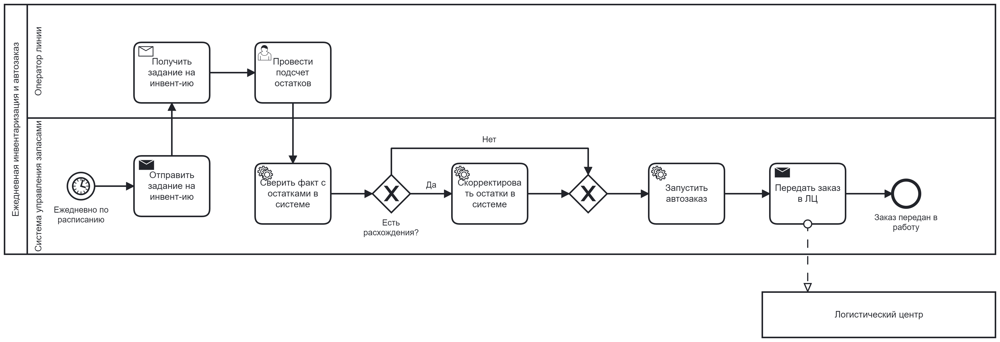
Процесс пополнения оперативного запаса

Процесс контроля сроков годности партий
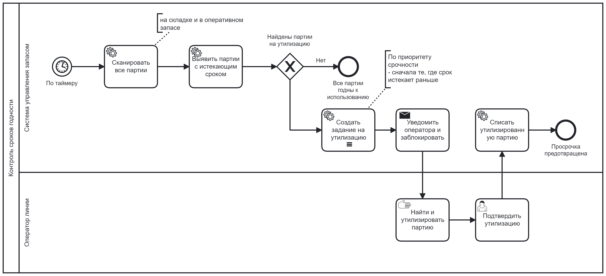
Функциональные требования к подсистеме
Управление данными и номенклатурой
- FR1.1: Система должна предоставлять интерфейс для ведения справочника полуфабрикатов с атрибутами: ID, название, единица измерения (шт/кг), категория.
- FR1.2: Система должна предоставлять интерфейс для ведения справочника складских зон/ячеек с атрибутами: ID, название, тип (холодильник, морозильник, оперативный запас линии).
- FR1.3: Система должна предоставлять интерфейс для ведения справочника поставщиков (логистических центров).
- FR1.4: Система должна поддерживать учет остатков на уровне партий с атрибутами: ID (штрихкод), привязка к полуфабрикату, дата производства, срок годности, дата поступления, текущее количество, статус (активна, заблокирована, утилизирована).
Инвентаризация
- FR2.1: Система должна позволять формировать задание на инвентаризацию (сплошную или выборочную) с передачей списка зон/номенклатуры на мобильное устройство оператора.
- FR2.2: Система должна предоставлять мобильный интерфейс с возможностью сканирования штрих-кодов партий и внесения фактического количества/веса.
- FR2.3: Система должна автоматически сверять внесенные фактические данные с системными остатками.
- FR2.4: Система должна автоматически формировать акт инвентаризации с расчетом расхождений и проводить автоматическую коррекцию остатков в системе при подтверждении.
Автозаказ полуфабрикатов
- FR3.1: Система должна предоставлять интерфейс для настройки правил автозаказа для каждого полуфабриката: минимальный/максимальный запас на складе, точка заказа, кратность партии, учет сезонности/прогноза продаж (опционально).
- FR3.2: Система должна запускать алгоритм расчета заказа ежедневно на основе актуальных остатков и настроенных правил.
- FR3.3: Система должна формировать черновик заказа и предоставлять возможность его ручной корректировки (на будущее).
- FR3.4: Система должна автоматически утверждать и передавать сформированный заказ в систему логистического центра (ЛЦ) через API.
Пополнение оперативного запаса линии
- FR4.1: Система должна отслеживать остаток полуфабрикатов в оперативном запасе роботизированной линии.
- FR4.2: Система должна автоматически формировать задание для оператора на пополнение оперативного запаса при достижении минимального порога (по событию от робота).
- FR4.3: В задании оператору система должна указывать конкретный штрихкод партии со склада, отобранной по алгоритму FEFO (First Expired, First Out).
- FR4.4: Система должна подтверждать перемещение после сканирования оператором штрих-кода зоны "Оперативный запас": списывать количество со складской партии и добавлять к виртуальной "партии" оперативного запаса.
Контроль сроков годности и утилизация
- FR5.1: Система должна по расписанию (настраиваемому) проверять все партии (складские и оперативные) на предмет истечения срока годности.
- FR5.2: Система должна выявлять партии, срок годности которых истекает в течение X часов (X – настраиваемый параметр).
- FR5.3: Система должна автоматически блокировать выявленные партии, подлежащие утилизации, исключая их использование для пополнения или приготовления.
- FR5.4: Система должна формировать и отправлять оператору задание на утилизацию с указанием локации и штрих-кода партии.
- FR5.5: Система должна снимать блокировку и списывать партию только после подтверждения оператором факта утилизации через мобильный интерфейс.
Интеграции (API)
-
FR6.1: Система должна предоставлять API для роботизированной линии для:
- Запроса разрешения на использование полуфабриката из оперативного запаса (с возвратом статуса и срока годности).
- Передачи данных о списании каждой единицы.
-
FR6.2: Система должна предоставлять API для обмена данными с системой Логистического Центра для:
- Получения данных о партиях (по штрих-коду) при их приемке.
- Передачи сформированных заказов.
-
FR6.3: Система должна предоставлять API для получения данных о продажах из CRM-системы ресторана для уточнения прогноза в алгоритме автозаказа (опционально).
Управление доступом (ролевая модель)
-
FR7.1: Система должна предоставлять Оператору линии права на:
- Выполнение заданий по инвентаризации.
- Пополнение оперативного запаса робота.
- Контроль работы робота.
- Выполнение заданий по утилизации просроченных полуфабрикатов.
- Подтверждение корректировки остатков при инвентаризации.
- Подтверждение утилизации с указанием причины.
-
FR7.2: Система должна предоставлять Технологу права на:
- Заполнение справочников.
- Составление технологических карт.
- Утверждение утилизации.
- Утверждение автозаказа.
- Контроль срока годности полуфабрикатов по отчету.
- Настройку правил автозаказа (минимальный/максимальный запас, точка заказа).
- Настройку параметров контроля сроков годности.
-
FR7.3: Система должна предоставлять Администратору системы полные права без ограничений на все функции системы.
Варианты использования и порядок их реализации
Диаграмма вариантов использования
На снимке ниже представлены все варианты использования, которые будут реализованы в системе (нотация UML): 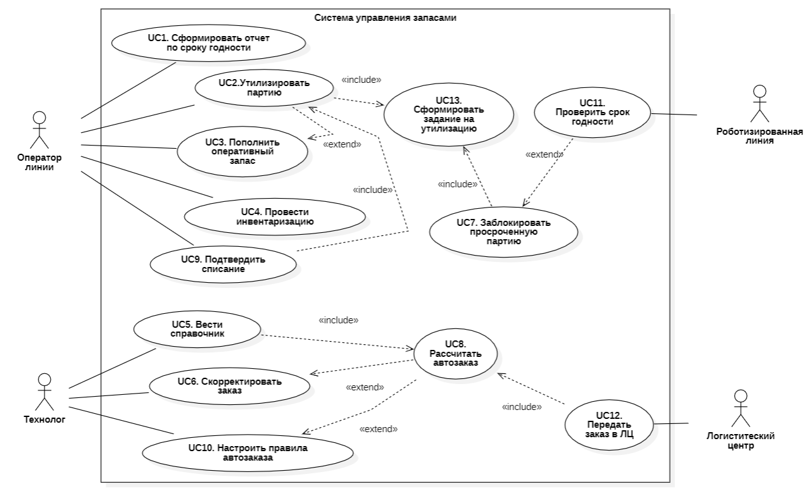
Диаграмма статусов
Партии полуфабрикатов имеют статусы, показанные на снимке: 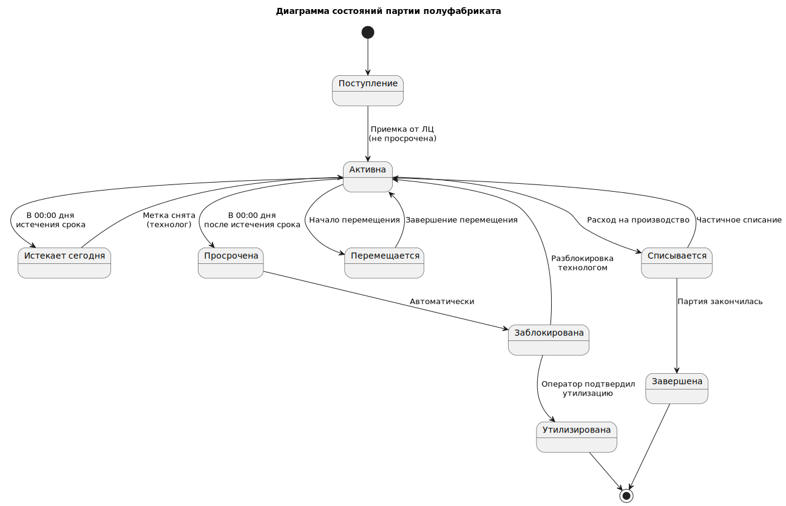
Реализацию вариантов использования необходимо разделить на два этапа - MVP и Первая поставка:
Описание Use Case, реализуемых в рамках MVP
UC1. Сформировать отчет по сроку годности
1. Краткое описание: Этот Use Case описывает процесс формирования пользователем (Оператором или Технологом) отчета, который отображает актуальные остатки полуфабрикатов с детализацией по партиям и их срокам годности. Отчет позволяет визуально идентифицировать партии, требующие внимания: с истекшим или близким к истечению сроком.
2. Акторы:
- Основной: Оператор роботизированной линии.
- Основной: Технолог.
3. Предусловия:
- Пользователь авторизован в системе.
- В системе проведена как минимум одна инвентаризация (UC4), обеспечивающая актуальность остатков.
- В системе внесены данные о сроках годности по партиям (через инвентаризацию).
4.Триггер:
- Пользователь выбирает опцию «Сформировать отчет по срокам годности».
5. Основной поток событий:
| Шаг | Действие Актора | Ответ Системы |
|---|---|---|
| 1 | Система отображает форму для настройки параметров отчета. | |
| 2 | Пользователь задает параметры отчета (опционально): - Зона хранения. - Группа товаров . - Статус срока годности. - Формат вывода. |
Система сохраняет предыдущие настройки пользователя по умолчанию. |
| 3 | Пользователь нажимает кнопку "Сформировать". | |
| 4 | Система выполняет запрос к базе данных, выбирая актуальные остатки по партиям, фильтруя и сортируя их согласно заданным параметрам. | |
| 5 | Система формирует и отображает отчет в виде таблицы. | |
| 6 | Пользователь анализирует отчет. Он ищет партии с статусом "Просрочен" или "Истекает сегодня". | |
| 7 | Пользователь принимает решение на основе отчета: - Сообщает Технологу. - Инициирует процесс утилизации (UC2-MVP). - Переносит партию на более видное место для скорейшего использования (FIFO/FEFO). |
6. Альтернативные потоки:
- А1: Автоматическое формирование отчета по расписанию.
- Технолог может настроить автоматическую генерацию отчета (например, каждое утро в 7:00) и отправку его на email. В этом случае система является инициатором Use Case.
- А2: Детализация партии.
- На шаге 5: Пользователь может кликнуть на строку с партией в отчете, чтобы просмотреть детальную информацию: дату поступления, первоначальное количество, историю движений.
- А3: Печать отчета для бумажного аудита.
- Пользователь выбирает формат вывода "PDF", распечатывает отчет и подшивает его в журнал утилизаций.
7. Постусловия:
- Сформирован отчет, отвечающий заданным параметрам.
- Пользователь проинформирован о состоянии запасов и сроках годности.
- На основе отчета могут быть инициированы действия: утилизация, перемещение, заказ, пополнение роботизированной линии.
8. Особые требования (NFR) для MVP:
- Производительность: Формирование отчета на экран не должно занимать более 5-7 секунд.
- Удобство использования: Это критичное требование для MVP. Отчет должен быть интуитивно понятным:
- Визуальная цветовая индикация: Строки с просроченными партиями подсвечиваются красным, истекающие сегодня — желтым, истекающие завтра — оранжевым, партии со статусом "Заблокирована" — серым. Остальные — белым/зеленым.
- Сортировка по умолчанию: Отчет автоматически сортируется по полю "Срок годности" (по возрастанию), чтобы самые проблемные партии были вверху.
- Важные колонки: В отчете обязательно должны быть колонки: Штрих-код, Наименование, Партия, Срок годности, Остаток, Локация, Статус.
- Доступность: Отчет должен быть доступен для просмотра на веб-интерфейсе.
- Консистентность: Данные в отчете должны строго соответствовать данным на момент его формирования. Последующие изменения остатков не должны менять уже сформированный отчет (если он не сформирован заново).
UC2-MVP. Утилизировать партию по отчету
1. Краткое описание: Этот Use Case описывает процесс, в котором Оператор линии вручную находит в системе партии, подлежащие утилизации (на основе отчета), физически изымает их и подтверждает факт утилизации в системе. Это упрощенная версия процесса без автоматических заданий для реализации на этапе MVP.
2. Акторы:
- Основной: Оператор линии.
3. Предусловия:
- Оператор авторизован в системе.
- В системе сформировать отчет "По сроку годности" (UC1).
- Оператор получил устное или письменное задание от Технолога на проведение утилизации.
4. Триггер:
- Оператор открывает отчет «По сроку годности».
5 Основной поток событий:
| Шаг | Действие Актора | Ответ Системы |
|---|---|---|
| 1 | Система отображает список партий с истекшим или истекающим сроком годности. | |
| 2 | Оператор просматривает отчет, определяет партию для утилизации и запоминает ее локацию и штрихкод. | |
| 3 | Оператор следует к указанной локации на складе, находит партию по штрих-коду. | |
| 4 | Оператор сканирует штрих-код партии с помощью мобильного устройства. | Система распознает партию, отображает ее данные и подтверждает, что она находится в отчете "к утилизации". |
| 5 | Оператор физически изымает партию и перемещает ее в зону утилизации. | |
| 6 | Оператор в мобильном приложении нажимает кнопку "Подтвердить утилизацию". | Система запрашивает подтверждение действия. |
| 7 | Оператор подтверждает свое намерение. | |
| 8 | Система выполняет следующие действия: 1. Списывает остаток данной партии до нуля. 2. Изменяет статус партии на "Утилизирована" (снимая блокировку, если она была). 3. Фиксирует акт списания в базе данных с указанием причины "Утилизация по сроку годности", даты и ответственного. 4. Обновляет остатки на складе в реальном времени. 5. Исключает партию из отчета "к утилизации". |
|
| 9 | Система отображает на терминале оператора сообщение об успехе. |
6. Альтернативные потоки:
- А1: Партия не найдена в отчете.
- На шаге 4: Если оператор сканирует партию, которой нет в отчете, система показывает предупреждение: "Данная партия не значится в отчете к утилизации". Процесс утилизации прерывается и начинается шаг 2.
- А2: Ручной ввод.
- На шаге 4: Если штрих-код поврежден, оператор может вручную найти партию в отчете и выбрать ее.
7. Постусловия:
- Партия физически утилизирована.
- Остатки партии в системе равны 0.
- В системе зафиксирован акт списания.
- Партия удалена из отчета "к утилизации".
8. Особые требования (NFR) для MVP:
- Актуальность: Отчет должен формироваться по требованию.
- Доступность: Оператор должен иметь быстрый доступ к отчету с web-приложения.
UC3-MVP. Пополнить оперативный запас у робота по отчету
1. Краткое описание: Этот Use Case описывает процесс, в котором Оператор роботизированной линии вручную проверяет в системе отчет об остатках на линии, самостоятельно принимает решение о необходимости пополнения, находит на складе подходящую партию (руководствуясь принципом FEFO) и фиксирует факт перемещения в системе.
2. Акторы:
- Основной: Оператор линии.
- Вторичный: Технолог (может дать устное указание на пополнение).
3. Предусловия:
- Оператор авторизован в системе.
- В системе существует"Сроки годности" (UC1).
4. Триггер:
- Оператор визуально видит, что запас одного полуфабрикатов на производственной линии заканчивается.
5. Основной поток событий:
| Шаг | Действие Актора | Ответ Системы |
|---|---|---|
| 1 | Оператор открывает "Сроки годности" (UC1) для полуфабриката, который заканчивается. | |
| 2 | Оператор визуально определяет, что остаток одного из полуфабрикатов низкий. | |
| 3 | Оператор открывает "Сроки годности" (UC1) для этого полуфабриката. | Система показывает список всех партий этого полуфабриката на складе, отсортированный по сроку годности (FEFO). |
| 4 | Оператор вручную выбирает партию для пополнения из верхней строки отчета (с самым близким сроком годности) и запоминает ее локацию и штрихкод. | |
| 5 | Оператор следует к указанной складской ячейке, находит партию по штрих-коду. | |
| 6 | Оператор сканирует штрих-код партии на складе. | Система распознает партию и отображает ее данные. |
| 7 | Оператор забирает необходимое количество (например, целую упаковку) и транспортирует его к линии. | |
| 8 | Оператор физически пополняет оперативный запас линии. | |
| 9 | Оператор в мобильном приложении выбирает функцию "Зафиксировать перемещение". | Система предлагает ввести количество (значение по умолчанию = 1). |
| 10 | Оператор при необходимости изменяет количество. | |
| 11 | Оператор нажимает "Подтвердить". | Система выполняет проводку: списывает количество со складской партии и добавляет его к выбранному оперативному запасу. |
| 12 | Система отображает сообщение об успешном перемещении. |
6. Альтернативные потоки:
- А1: Партия не найдена или недостаточно.
- На шаге 5-6: Если выбранной партии нет на месте или ее недостаточно, оператор выбирает следующую в отчете партию по FEFO.
- А2: Обнаружена просроченная партия.
- На шаге 6: При сканировании система может показать предупреждение, что срок годности партии истек. Оператор должен отказаться от ее использования и сообщить Технологу (инициируя процесс утилизации UC2-MVP).
7. Постусловия:
- Оперативный запас линии пополнен.
- Остатки на складе и на линии корректно обновлены в системе.
- В системе зафиксирован акт внутреннего перемещения.
8. Особые требования (NFR) для MVP:
- Процесс вместо автоматизации: Основная цель — не автоматизировать, а обеспечить пользователя всеми данными для принятия правильного решения и простым инструментом для фиксации результата.
- Эффективность: Процесс фиксации перемещения (шаги 9-12) должен быть максимально упрощен и занимать не более 15-20 секунд.
UC4. Провести инвентаризацию
1. Краткое описание: Этот Use Case описывает процесс сверки фактического наличия полуфабрикатов на складе и в оперативном запасе роботизированной линии с данными в системе. Оператор проводит подсчет, вносит данные через мобильное приложение, а система фиксирует расхождения, автоматически корректирует остатки и формирует отчет.
2. Акторы:
- Основной: Оператор линии.
- Второстепенный: Система управления запасами (инициирует, обрабатывает данные).
3. Предусловия:
- Оператор авторизован в системе.
- Мобильное устройство оператора имеет соединение с системой (или может работать в автономном режиме).
- Движение партий на складе и на линии сведено к минимуму (инвентаризация проводится в нерабочие часы или в специально отведенное время).
4. Триггер:
- Система инициирует процесс по расписанию (ежедневно/еженедельно).
5. Основной поток событий:
| Шаг | Действие Актора | Ответ Системы |
|---|---|---|
| 1 | Оператор получает задание "Провести инвентаризацию" на своем мобильном устройстве. Задание содержит: тип инвентаризации (сплошная/выборочная), перечень зон (склад, линия) или номенклатуры. | Триггер: Система инициирует процесс по расписанию (ежедневно/еженедельно). |
| 2 | Оператор выбирает зону для начала подсчета. | Система отображает схему зоны и список номенклатуры с ожидаемыми остатками. |
| 3 | Оператор последовательно сканирует штрих-код каждой партии в зоне и вносит фактическое количество/вес в приложение. Для зоны оперативного запаса оператор сканирует штрих-код контейнера и вносит фактический остаток. | Система в режиме реального времени проверяет штрих-код на валидность и отображает название полуфабриката для подтверждения. |
| 4 | Оператор завершает обход всех указанных зон и в приложении нажимает "Завершить инвентаризацию". | |
| 5 | Система автоматически выполняет сверку: сравнивает внесенные фактические данные с системными остатками по каждой позиции. | |
| 6 | Система рассчитывает расхождения (излишки/недостачи) по каждой партии. | |
| 7 | Если расхождение ≤ порога → система автоматически корректирует остатки. Если расхождение > порога → система блокирует позицию для разбирательства и уведомляет Технолога. Ключевой момент: Корректировка остатков оперативного запаса на линии не влияет на его виртуальный срок годности, так как меняется только количество, а не состав партий. Система не позволяет корректировать остатки по партиям со статусом 'Заблокирована'. | |
| 8 | Система формирует электронный акт инвентаризации (отчет), в котором фиксируются: дата, время, зона, ответственный, все позиции с расхождениями и причина (если указана). | |
| 9 | Система помечает задание как "Выполнено". Акт инвентаризации сохраняется в базе данных и становится доступным Технологу. |
6. Альтернативные потоки:
- А1: Обнаружена партия, не учтенная в системе.
- На шаге 3: Оператор может добавить новую позицию через "Добавить партию вручную", указав штрих-код, наименование и количество. Система зафиксирует это как излишек.
- А2: Партия не имеет штрих-кода или он поврежден.
- На шаге 3: Оператор может найти полуфабрикат в списке номенклатуры вручную и внести данные.
- А3: Инвентаризация прервана.
- На любом шаге: Оператор может приостановить задание. Система сохранит все внесенные данные. Позже оператор может возобновить инвентаризацию с момента останова.
- А4: Значительное расхождение.
- На шаге 7: Если расхождение > порога, система блокирует позицию и уведомляет Технолога. Технолог подтверждает коррекцию в системе.
7. Постусловия:
- Фактические остатки полуфабрикатов на складе и на линии соответствуют данным в системе.
- Сформирован и сохранен акт инвентаризации.
- Все расхождения зафиксированы и учтены.
- Данные для автозаказа и контроля сроков годности актуализированы.
8. Особые требования (NFR):
- Оффлайн-работа: Мобильное приложение должно обеспечивать полную оффлайн-функциональность. Все данные должны кэшироваться на устройстве, а после восстановления связи — автоматически синхронизироваться.
- Производительность: Внесение данных по одной партии (сканирование + ввод количества) должно занимать у оператора не более 3-5 секунд.
- Точность: Алгоритм сверки и корректировки остатков должен быть атомарным и гарантировать, что данные не будут потеряны даже при сбое.
- Удобство использования: Интерфейс должен быть оптимизирован для быстрого последовательного сканирования: после внесения одного значения фокус автоматически переходит на поле для сканирования следующего штрих-кода.
UC5. Вести справочники
1. Краткое описание: Этот Use Case описывает процесс создания, редактирования основных данных системы: справочника полуфабрикатов (номенклатуры) с установкой для каждого индивидуальных сроков хранения и справочника складских зон.
2. Акторы:
- Основной: Технолог.
- Второстепенный: Система управления запасами.
3. Предусловия:
- Пользователь (Технолог) авторизован в системе и имеет административные права на редактирование справочников.
- Пользователь работает с веб-интерфейсом.
4. Триггер
- Технологу необходимо занести данные в систему.
5. Основной поток событий:
| Шаг | Действие Актора | Ответ Системы |
|---|---|---|
| 1 | Технолог в основном меню системы выбирает раздел "Справочники" и подраздел "Номенклатура". | Система отображает список всех существующих полуфабрикатов с возможностью сортировки и поиска. |
| 2 | Технолог нажимает кнопку "Добавить" для создания новой позиции. | Система открывает форму создания новой номенклатурной позиции. |
| 3 | Технолог заполняет обязательные атрибуты: - Наименование - Единица измерения - выбирается из выпадающего списка. - Категория - выбирается из отдельного справочника. - Срок хранения (часов) – общий срок. - Срок хранения открытой упаковки (часов). |
Система проверяет уникальность наименования. |
| 4 | Технолог заполняет дополнительные атрибуты (опционально): штрих-код (для товара в целом), описание, фотография. | |
| 5 | Технолог нажимает кнопку "Сохранить". | Система проверяет данные. Если ошибок нет, создает новую запись в справочнике номенклатуры. Новая позиция становится сразу доступной для заказа, учета и инвентаризации. |
| 6 | Технолог переходит в подраздел "Типы зон" (отдельный справочник). | Система отображает список типов зон. |
| 7 | Технолог создает или редактирует типы зон. Сохраняет изменения | Система сохраняет типы зон. |
| 6 | Технолог переходит в подраздел "Складские зоны". | Система отображает иерархический список зон (например, Склад -> Холодильная камера -> Стеллаж 1 -> Полка 2). |
| 7 | Технолог создает или редактирует зоны, назначая им: - Уникальный ID/Наименование - Тип зоны – выбирается из справочника типов зон. - Штрих-код зоны (для сканирования оператором). |
Система сохраняет изменения. |
6. Альтернативные потоки:
- А1: Редактирование существующей позиции.
- На шаге 2: Технолог выбирает существующую позицию из списка и нажимает "Изменить". Важно: Изменение единицы измерения или срока хранения повлияет на все последующие операции. Система должна запросить подтверждение и показать предупреждение.
- А2: Деактивация/Архивация позиции.
- Технолог ставит галочку "Не активна" у позиции, которая более не используется. Система не позволяет удалить позицию, если по ней есть история операций (приход, движение, остатки). Такая позиция исключается из выпадающих списков для нового заказа, но остается в истории.
7. Постусловия:
- Справочники номенклатуры и зон актуализированы.
- Новые данные доступны для использования во всех процессах системы:
- Для инвентаризации (UC4) появилась новая позиция для учета.
- Для автозаказа (UC8) система может рассчитывать параметры для новой номенклатуры.
- Для контроля сроков годности (UC11) система использует новый установленный срок хранения для расчета даты истечения срока годности.
- Робот может получать данные о новой номенклатуре через API.
8. Особые требования (NFR):
- Целостность данных: Система должна гарантировать ссылочную целостность. Нельзя удалить позицию из справочника, если она используется в каких-либо документах (приход, движение, остатки).
- Валидация: Система должна строго проверять вводимые данные. Например, "Срок хранения" должен быть положительным числом, "Единица измерения" - только из предопределенного списка.
- Производительность: Загрузка и отображение справочников должны быть быстрыми даже при большом объеме данных (тысячи позиций). Необходимо реализовать пагинацию и поиск.
- Безопасность: Доступ к редактированию справочников должен быть строго ограничен кругом ответственных лиц (ролевая модель).
UC6. Скорректировать заказ
1. Краткое описание: Этот Use Case описывает процесс ручного просмотра, проверки и корректировки заказа на полуфабрикаты, автоматически сформированного системой, перед его окончательной отправкой в Логистический Центр (ЛЦ). Технолог может учесть дополнительные факторы, которые не заложены в алгоритме.
2. Акторы:
- Основной: Технолог.
- Второстепенный: Система управления запасами (формирует черновик заказа).
3. Предусловия:
- Пользователь авторизован в системе и имеет права на подтверждение/корректировку заказов.
- Система автоматически выполнила UC8: "Рассчитать автозаказ" и сформировала черновик заказа (проект заказа).
- Заказ находится в статусе "Черновик" или "На согласовании".
4. Триггер:
Технолог получает уведомление о сформированном черновике.
5. Основной поток событий:
| Шаг | Действие Актора | Ответ Системы |
|---|---|---|
| 1 | Технолог получает уведомление о сформированном черновике заказа ИЛИ открывает раздел "Заказы" и выбирает заказ со статусом "Черновик". | Система отображает интерфейс просмотра заказа. |
| 2 | Технолог просматривает предложенные системой позиции, количества и общую сумму заказа. | Система предоставляет детализацию: по каждой позиции можно посмотреть обоснование (например: "Остаток: 5 кг, Точка заказа: 10 кг, Рекомендуется заказать: 20 кг (Max=25 кг)"). |
| 3 | Технолог анализирует заказ. Решает, что корректировка не требуется. | |
| 4 | Технолог нажимает кнопку "Утвердить и отправить". | Система запрашивает подтверждение ("Вы уверены, что хотите отправить заказ в ЛЦ?"). |
| 5 | Технолог подтверждает действие. | |
| 6 | Система меняет статус заказа на "Отправлен в ЛЦ" и автоматически выполняет UC12: "Передать заказ в ЛЦ" через API. |
6. Альтернативные потоки:
- А1: Корректировка количества или состава заказа.
- На шаге 3: Технолог видит необходимость изменить заказ.
- Технолог редактирует количество вручную для определенных позиций (например, увеличивает количество из-за планируемой акции или уменьшает, зная о предстоящем простое).
- Технолог добавляет новую позицию в заказ, которой нет в автозаказе (например, новый товар для теста).
- Технолог удаляет позицию из заказа (например, зная, что на основном складе ЛЦ ее нет в наличии).
-
После внесения изменений Технолог нажимает "Сохранить черновик" или сразу "Утвердить и отправить". Система сохраняет изменения и следует основному потоку.
-
А2: Отклонение заказа.
- На шаге 3: Технолог понимает, что заказ формировать не нужно (например, ресторан закрывается на санитарный день).
- Технолог нажимает кнопку "Отклонить" и указывает причину.
-
Система меняет статус заказа на "Отклонен" и архивирует его. Уведомление не отправляется.
-
А3: Запрос дополнительной информации.
- На шаге 3: Технолог может просмотреть отчет о продажах по конкретной позиции или график остатков за прошедшую неделю, чтобы принять более обоснованное решение. Система предоставляет эту аналитику в виде вкладок или всплывающих окон.
7. Постусловия:
- Заказ либо отправлен в ЛЦ в исходном или отредактированном виде, либо отклонен.
- Все действия Технолога (просмотр, корректировка, утверждение, отклонение) залогированы в системе для аудита.
- Если заказ отправлен, система ожидает его подтверждения и выполнения от ЛЦ.
8. Особые требования (NFR):
- Аудит: Система должна вести базовое логирование изменений по каждому заказу. Это критично для анализа эффективности правил автозаказа.
- Валидация: При ручном изменении количества система должна проводить проверку: количество > 0 и числовое значение.
- Производительность: Интерфейс просмотра и редактирования заказа должен загружаться быстро, даже если заказ содержит сотни позиций (необходимо использование пагинации, динамического списка).
- Уведомления: Система должна иметь механизм оповещения Технолога в интерфейсе системы о появлении нового черновика заказа (фиксированное время до крайнего срока).
- Визуализация: Для удобства Технолога позиции в заказе можно подсвечивать цветом: зеленый – рекомендовано системой, оранжевый – изменено Технологом.
UC7. Заблокировать просроченную партию
1. Краткое описание: Этот Use Case описывает процесс автоматического перевода партии полуфабриката в статус "Заблокирована" при обнаружении системой истечения или скорого истечения срока ее годности. Блокировка предотвращает использование партии в любых операциях: пополнении линии, производстве. Это ключевая контрольная точка системы безопасности пищевых продуктов.
2. Акторы:
- Основной: Система управления запасами.
- Вторичный: Оператор линии (получает уведомление/задание).
3. Предусловия:
- В системе существуют партии полуфабрикатов с актуальными данными о сроках годности.
- Для партии настроен атрибут "Статус" с возможностью значения "Заблокирована".
4. Триггер
- Наступило время запуска фонового задания (фиксированное время).
- Получен запрос от робота на проверку срока (UC11).
5. Основной поток событий:
| Шаг | Действие Актора | Ответ Системы |
|---|---|---|
| 1 | Система запускает фоновую проверку сроков годности | Система итерируется по всем активным партиям. |
| 2 | Система вычисляет для каждой партии время до истечения срока годности. | |
| 3 | Система сравнивает это время с заданными критическими порогами. | |
| 4 | Система находит партию, которая соответствует критериям блокировки: - Критерий 1: Текущая дата >= Срок годности партии (Просрочка).- Критерий 2: Текущая дата + X часов >= Срок годности партии (Скоро закончится срок годности). |
|
| 5 | Система автоматически меняет статус партии на "Заблокирована". | |
| 6 | Система вносит запись в журнал аудита (кто (система), когда, какую партию и по какой причине заблокировал). | |
| 7 | Система распространяет информацию о блокировке по всем подсистемам: - Исключает партию из алгоритмов пополнения (UC2) и автозаказа (UC8). - Сообщает роботу (если партия в оперативном запасе), что ее использование запрещено. |
|
| 8 | Система обновляет информацию в отчете UC1 |
6. Альтернативные потоки:
- А1: Ручная блокировка Технологом.
- Оператор может вручную заблокировать партию через интерфейс (например, при обнаружении визуального брака). Система выполняет те же шаги (5-9), но в журнале аудита указывает инициатора-оператора.
- А2: Партия уже заблокирована.
- Если партия уже имеет статус "Заблокирована", система пропускает ее.
- А3: Ошибка при блокировке.
- Если партия находится в процессе списания или перемещения, система временно не может изменить ее статус. Процесс блокировки повторяется через короткий интервал времени.
6. Постусловия:
- Партия переведена в статус "Заблокирована".
- Информация о блокировке актуальна во всех модулях системы.
- Для партии создано задание на утилизацию (UC13).
- Использование партии в производстве невозможно до разблокировки (которая может произойти только после проверки или ошибочного действия, что должно быть задокументировано).
- Заблокированные партии исключаются из расчета автозаказа (UC8)
7. Особые требования (NFR):
- Производительность: Процесс проверки и блокировки должен быть быстрым. Проверка тысяч партий должна выполняться за десятки секунд.
- Надежность и атомарность: Изменение статуса и распространение этого изменения по системе должно быть транзакционным. Не допускается ситуация, когда статус изменен, но робот еще может использовать партию.
- Аудит: Журналирование всех действий по блокировке/разблокировке является обязательным. Каждая запись должна быть неизменяемой (immutable log).
- Настраиваемость: Параметр
X(часы до истечения срока для блокировки) должен быть гибко настраиваемым для разных категорий полуфабрикатов через интерфейс UC5. - Безопасность: Процесс обратной разблокировки (снятия статуса) должен быть максимально затруднен и требовать обязательного участия Технолога с указанием веской причины в журнале аудита (журнал регистрации).
UC8. Рассчитать автозаказ
1. Краткое описание: Этот Use Case описывает процесс автоматического расчета количества полуфабрикатов для заказа в Логистический Центр (ЛЦ). Система на основе текущих остатков, предварительно настроенных правил, прогноза продаж и данных о поставках определяет, что, в каком количестве и когда нужно заказать для поддержания бесперебойной работы ресторана.
2. Акторы:
- Основной: Система управления запасами.
- Вторичный: Технолог (может получать уведомления о результате расчета).
3. Предусловия:
- В системе существуют и активированы Правила автозаказа (UC10) для номенклатурных позиций.
- В системе есть актуальные данные об остатках на складе и в оперативном запасе.
- В системе есть справочные данные о номенклатуре (UC5) и поставщиках (ЛЦ).
4. Триггер:
- Наступило время запуска по расписанию
5. Основной поток событий:
| Шаг | Действие Актора | Ответ Системы |
|---|---|---|
| 1 | Система по расписанию запускает процедуру расчета автозаказа. | Система определяет список номенклатурных позиций, для которых настроены правила автозаказа. |
| 2 | Для каждой позиции система собирает входные данные: - Текущий остаток (на складе + на линии). - Параметры правила из UC10 (Min, Max, Reorder Point, кратность и т.д.). - Прогноз продаж на период поставки (если функция активирована). - Срок поставки от ЛЦ (в днях). - Незавершенные заказы (уже отправленные, но еще не полученные). |
|
| 3 | Система применяет алгоритм расчета для каждой позиции. Формула:Рекомендуемый заказ = Максимальный запас (Max) - Текущий остаток - Незавершенные заказы + Прогноз продаж на срок поставки (Прогноз продаж из модуля продаж через API) |
|
| 4 | Система накладывает ограничения правила: - Если Рекомендуемый заказ < Минимальной партии -> Заказ = 0 (заказывать невыгодно/невозможно).- Если Рекомендуемый заказ > 0 -> привести к кратности (округлить в большую сторону до значения, кратного параметру "Кратность").- Если Текущий остаток > Точки заказа (Reorder Point) -> Заказ = 0 (не время заказывать). |
|
| 5 | Система формирует черновик заказа (проект заказа), включающий все позиции с Заказ > 0. |
|
| 6 | Система проводит финальную проверку черновика (валидация данных, отсутствие дубликатов). | |
| 7 | Система сохраняет черновик заказа в базе данных со статусом "Рассчитан". | |
| 8 | Система уведомляет Технолога в интерфейсе о готовности черновика заказа для проверки и корректировки (см. UC6). |
6. Альтернативные потоки:
- А1: Срабатывание по триггеру (вне расписания).
- Use Case может быть запущен принудительно Технологом или по событию (например, после проведения крупной инвентаризации (UC4), выявившей значительные расхождения).
- А2: Рассчитать для одной позиции.
- Если остаток по конкретной позиции резко упал ниже Минимального запаса (Min), система может немедленно рассчитать и включить ее в заказ вне общего расписания.
- А3: Отсутствие правила.
- Если для позиции нет активного правила, система пропускает ее и не включает в расчет.
- А4: Ошибка расчета.
- Если данные для расчета некорректны (например, отрицательный остаток), система помечает позицию в черновике особым статусом "Ошибка" и уведомляет Технолога.
8. Постусловия:
- Сформирован черновик заказа со статусом "Рассчитан".
- Черновик доступен Технологу для просмотра и корректировки (UC6).
- Рассчитанные количества являются рекомендацией системы и могут быть изменены.
9. Особые требования (NFR):
- Производительность: Алгоритм расчета должен быть быстрым. Расчет заказа для нескольких сотен позиций должен выполняться не более чем за 1-2 минуты.
- Детерминированность: Расчет должен быть полностью предсказуемым и воспроизводимым. При одинаковых входных данных результат должен быть идентичным.
- Аудит: Система должна сохранять базовую информацию входных данных, использованных для расчета. Это необходимо для последующего анализа и отладки алгоритма.
- Масштабируемость: Алгоритм должен работать стабильно при росте объема данных (номенклатуры, истории продаж).
- Обоснованность: Система должна для каждой позиции в черновике заказа предоставлять детальное обоснование расчета.
Описание Use Case реализуемых в рамках первого релиза
UC2. Утилизировать партию
1. Краткое описание: Этот Use Case описывает процесс, в котором Оператор роботизированной линии физически изымает и утилизирует партию полуфабрикатов с истекшим или истекающим сроком годности на основании задания, сформированного системой. Система фиксирует факт утилизации и списывает партию с учета.
2. Акторы:
- Основной: Оператор линии.
- Второстепенный: Система управления запасами (инициирует процесс, формируя задание).
3. Предусловия:
- Система идентифицировала партию, подлежащую утилизации (срок годности истек или истекает в течение X часов).
- Система изменила статус партии на "Заблокирована".
- Система сформировала и отправила задание на утилизацию на терминал Оператора.
- Оператор авторизован в системе.
- Мобильное устройство Оператора имеет соединение с системой.
4. Триггер:
- Оператор получает задание "Утилизировать партию" на своем терминале. Задание содержит: наименование полуфабриката, штрих-код партии, локацию (складская ячейка или зона оперативного запаса), причину утилизации (например, "Срок годности истекает через 2 часа").
5. Основной поток событий:
| Шаг | Действие Актора | Ответ Системы |
|---|---|---|
| 1 | Система отображает групповое задание в очереди с самым высоким приоритетом. | |
| 2 | Оператор следует к указанной локации, находит партию по штрих-коду. | |
| 3 | Оператор сканирует штрих-код партии с помощью мобильного устройства. | Система подтверждает, что штрих-код соответствует заданию, партия имеет статус "Заблокирована", и отображает детали партии (срок годности, количество). |
| 4 | Оператор физически изымает партию и перемещает ее в зону утилизации. | |
| 5 | Оператор в мобильном приложении нажимает кнопку "Подтвердить утилизацию". | |
| 6 | Система запрашивает подтверждение действия (например, всплывающее окно "Вы уверены?"). | |
| 7 | Оператор подтверждает свое намерение. | |
| 8 | Система выполняет следующие действия: 1. Списывает остаток данной партии до нуля. 2. Меняет статус партии с "Заблокирована" на "Утилизирована". 3. Фиксирует акт списания в базе данных с указанием причины, даты, времени и ответственного оператора. 4. Обновляет остатки на складе/линии в реальном времени. 5. Обязательно уведомляет Технолога (интерфейс/Push/email). |
|
| 9 | Система отображает на терминале оператора сообщение об успешном завершении задания: "Партия [Штрих-код] утилизирована". |
6. Альтернативные потоки:
- А1: Штрих-код не сканируется.
- На шаге 3: Если штрих-код поврежден и не сканируется, Оператор может вручную ввести ID партии в приложении.
- А2: Оператор обнаружил несоответствие.
- На шаге 2-3: Если фактическое количество или состояние партии не соответствует данным в системе (например, партия уже частично использована), Оператор может ввести фактическое количество к утилизации перед подтверждением.
- А3: Оператор отменяет действие.
- На шаге 6: Оператор может отменить действие. Задание остается в его очереди с статусом "В работе".
7. Постусловия:
- Партия физически утилизирована.
- Остатки партии в системе равны 0, статус изменен на "Утилизирована".
- В системе зафиксирован акт списания с указанием причины "Утилизация по сроку годности".
- Задание помечено как "Выполнено".
- Если утилизирована партия из оперативного запаса, система автоматически инициирует UC3: "Пополнить оперативный запас".
8. Особые требования (NFR):
- Производительность: Подтверждение утилизации и обновление остатков в системе должно происходить менее чем за 3 секунды.
- Удобство использования: Интерфейс мобильного приложения для утилизации должен быть простым и требовать не более 3-х касаний для завершения задания.
- Надежность: Данные об акте списания должны быть сохранены гарантированно, даже при разрыве соединения (с последующей синхронизацией).
- Безопасность: Подтвердить утилизацию может только авторизованный оператор. Для подтверждения достаточно логина/пароля (биометрическая аутентификация - опционально).
UC3. Пополнить оперативный запас
1. Краткое описание: Этот Use Case описывает процесс пополнения расходуемого роботом оперативного запаса полуфабрикатов. Оператор по заданию системы находит на основном складе партию, отобранную по принципу FEFO, перемещает её к роботу и пополняет запас. Система фиксирует перемещение, обновляет остатки и пересчитывает "виртуальный" срок годности оперативного запаса.
2. Акторы:
- Основной: Оператор линии.
- Второстепенный: Система управления запасами (инициирует процесс, отслеживает остатки).
- Внешний источник данных: Роботизированная линия (расходует запас, что является триггером для системы).
3. Предусловия:
- Система в реальном времени отслеживает остаток каждого полуфабриката в оперативном запасе робота (на основе получения сообщений о списании от робота).
- Остаток конкретного полуфабриката достиг точки пополнения. Эта точка > 0 и рассчитывается так, чтобы запаса хватило на время выполнения задания пополнения.
- На основном складе есть доступные партии данного полуфабриката.
- Оператор авторизован в системе и свободен.
- Система рассчитывает точку пополнения на основе прогноза продаж.
4. Триггер
- Оператор получает задание "Пополнить оперативный запас [Наименование]" на своем мобильном устройстве. Задание имеет высокий приоритет. Задание содержит: наименование, штрих-код исходной партии, локацию на складе, количество для перемещения (равное ёмкости контейнера на линии).
- Система отследила, что остаток на линии упал ниже точки пополнения. Она автоматически сформировала задание, выбрав партию по FEFO
5. Основной поток событий:
| Шаг | Действие Актора | Ответ Системы |
|---|---|---|
| 1 | Оператор немедленно следует к указанной складской ячейке, находит партию по штрих-коду. | Система подсвечивает ячейку на схеме склада в приложении оператора. |
| 2 | Оператор сканирует штрих-код партии на складе. | Система подтверждает корректность выбора. Важно: Система проверяет: не заблокирована ли партия, соответствует ли полуфабрикат, достаточно ли количества(например, другим процессом утилизации). |
| 3 | Оператор забирает целую упаковку (или рассчитанное количество) и транспортирует ее к роботу. | |
| 4 | Оператор вскрывает упаковку и перекладывает полуфабрикаты в контейнер оперативного запаса на линии. | |
| 5 | Оператор сканирует штрих-код конкретного контейнера оперативного запаса на линии, который собирается пополнить. | Система понимает, куда именно было добавлено сырье. |
| 6 | Оператор в приложении нажимает "Подтвердить пополнение". | Система всегда запрашивает подтверждение количества. |
| 7 | Система выполняет атомарные действия: 1. Списывает перемещенное количество с исходной складской партии. 2. Добавляет это количество к остатку оперативного запаса в указанном контейнере. 3. Пересчитывает "виртуальный срок годности" всего содержимого контейнера. Формула: Если в контейнере уже был остаток (Y1 с сроком T1), и добавили новую партию (Y2 с сроком T2), новый срок рассчитывается как средневзвешенное: (Y1*T1 + Y2*T2) / (Y1 + Y2). Это критически важно для последующего контроля роботом.4. Фиксирует акт перемещения. |
|
| 8 | Система отправляет подтверждение роботу через API, что запас пополнен и обновляет данные о сроке годности для этого контейнера. | |
| 9 | Система уведомляет оператора: "Контейнер [X] пополнен. Новый срок годности: [дата]". |
6. Альтернативные потоки:
- А1: Робот израсходовал запас до нуля до завершения пополнения.
- На любом шаге: Робот может отправить системе аварийное сообщение "Остановка: нет ингредиента X". Система переводит приоритет в 'КРИТИЧЕСКИЙ' при времени до полного исчерпания ≤10 минут, уведомляет Технолога. Оператор должен завершить пополнение в максимально сжатые сроки.
-
Система уведомляет Технолога через Push/SMS.
-
А2: Вскрытая на линии упаковка оказалась бракованной.
- На шаге 4: Оператор отмечает в приложении "Брак". Система предписывает утилизировать эту партию (инициирует UC2) и немедленно сформирует новое задание на пополнение из другой партии.
7. Постусловия:
- Оперативный запас робота пополнен до нормального уровня.
- Данные об остатках на складе и на линии корректно обновлены.
- Рассчитан новый актуальный срок годности для содержимого контейнера оперативного запаса.
- Робот имеет корректные данные о наличии и сроке годности ингредиента и может продолжать работу.
- Задание помечено как "Выполнено".
8. Особые требования (NFR):
- Производительность (критично): Время от момента срабатывания триггера (низкий остаток) до появления задания у оператора — < 10 секунд.
- Real-Time: Система должна отслеживать остатки на линии в режиме, близком к реальному времени (получая сообщения от робота о каждом списании).
- Надежность алгоритма: Алгоритм пересчета виртуального срока годности должен быть точным и консервативным. В случае добавления партии с более ранним сроком, чем текущий "виртуальный", система должна принять более ранний срок.
UC9. Подтвердить списание
1. Краткое описание: Этот Use Case описывает процесс документального подтверждения и фиксации факта списания полуфабрикатов не в результате продажи или производства. Основные причины: утилизация просрочки, брак, бой, порча, хищение. Оператор подтверждает списание через мобильное приложение, а система фиксирует акт, списывает остатки и обновляет учетные данные.
2. Акторы:
- Основной: Оператор линии или Технолог.
- Второстепенный: Система управления запасами (инициирует процесс для утилизации или предоставляет интерфейс).
3. Предусловия:
- Оператор авторизован в системе и имеет права на подтверждение списания.
- Обнаружены полуфабрикаты, подлежащие списанию (физически изъяты из оборота).
- Для списания по причине "Утилизация" партия должна быть предварительно заблокирована системой.
- Для списания в оффлайн-режиме партия не должна быть заблокирована
4. Триггер
- Оператор физически изымает партию из оборота.
- Оператор получает задание на утилизацию от системы (см. UC2).
5. Основной поток событий:
| Шаг | Действие Актора | Ответ Системы |
|---|---|---|
| 1 | Оператор в мобильном приложении выбирает функцию "Зафиксировать списание". | Система предлагает выбрать причину списания из фиксированного системного перечня. |
| 2 | Оператор выбирает причину списания. | |
| 3 | Оператор сканирует штрих-код партии, подлежащей списанию. | Система распознает партию, отображает ее данные: наименование, текущий остаток, срок годности. Важно: Если причина "Просрочка", система проверяет, "Если причина 'Просрочка', система проверяет статус 'Заблокирована' и предотвращает списание в оффлайн-режиме". |
| 4 | Оператор вводит фактическое количество к списанию (по умолчанию предлагается весь остаток). | |
| 5 | Оператор при необходимости добавляет комментарий (например, "упаковка вскрыта", "посторонний предмет"). | |
| 6 | Оператор нажимает кнопку "Подтвердить списание". | Система запрашивает финальное подтверждение действия, указывая сумму списания. |
| 7 | Оператор подтверждает действие. | |
| 8 | Система выполняет атомарные действия: 1. Списывает указанное количество с остатка партии. 2. Меняет статус партии (если списан весь остаток, статус меняется на "Утилизирована"). 3. Фиксирует акт списания в базе данных с обязательными реквизитами: дата, время, партия, причина, количество, ответственный, комментарий, фото. 4. Обновляет отчетные данные и остатки в реальном времени. |
|
| 9 | Если списание превышает лимит, система требует последующего подтверждения Технолога. | |
| 10 | Система отображает сообщение об успехе: "Списание подтверждено". |
6. Альтернативные потоки:
- А1: Списание по акту от Технолога.
- На шаге 1: Технолог может создать задание на списание из своей учетной записи. Оператор получает задание, в котором уже указаны номенклатура, причина и количество. Оператору остается только отсканировать партию для подтверждения и выполнить шаги 4-12.
- А2: Списание без штрих-кода (например, рассыпанные овощи).
- На шаге 4: Оператор может вручную выбрать номенклатуру из справочника и указать количество к списанию.
- А3: Попытка списать не заблокированную партию с нормальным сроком.
- На шаге 4: Если причина "Просрочка", но срок годности не истек и статус не "Заблокирована", система отклоняет запрос и требует дополнительного подтверждения от Технолога (ввод кода или push-уведомление Технологу). Это защита от ошибок и злоупотреблений. Система уведомляет Технолога через Push/email/SMS.
7. Постусловия:
- Полуфабрикаты физически списаны (утилизированы).
- Остатки партии в системе уменьшены на указанное количество.
- В системе зафиксирован не редактируемый акт списания с полным аудитом (кто, что, когда, почему).
- Данные для финансового и управленческого учета обновлены.
- Если списание было инициировано заданием (UC13), задание помечается как "Выполнено".
8. Особые требования (NFR):
- Аудит и безопасность: Все акты списания должны храниться в неизменяемом виде. Должна быть реализована ролевая модель, запрещающая обычным операторам списывать товары без ограничений (только по заблокированным системой партиям или по утвержденным Технологом актам).Списание в оффлайн-режиме запрещено для заблокированных партий/
- Производительность: Процесс подтверждения списания (от сканирования до фиксации) должен занимать не более 10 секунд.
- Доступность: Полная оффлайн-функциональность с синхронизацией при появлении сети.
- Синхронизация: При синхронизации действия Технолога имеют приоритет.
UC10. Настроить правила автозаказа
1. Идентификатор и Название:
1. Краткое описание: Этот Use Case описывает процесс определения и конфигурации бизнес-правил, по которым система будет автоматически формировать заявки на пополнение запасов полуфабрикатов с логистического центра (ЛЦ). Технолог устанавливает для каждой позиции параметры, минимизирующие риск дефицита и излишков.
2. Акторы:
- Основной: Технолог.
- Второстепенный: Система управления запасами.
3. Предусловия:
- Пользователь авторизован в системе и имеет права на изменение правил.
- В системе существует номенклатура полуфабрикатов (UC5), для которых настраиваются правила.
- Известны ключевые параметры поставок от ЛЦ: минимальная партия заказа, кратность паллеты/упаковки, дни и время поставок.
4. Триггер
- Необходимо внести настройки для автоматической работы системы.
5. Основной поток событий:
| Шаг | Действие Актора | Ответ Системы |
|---|---|---|
| 1 | Технолог в меню системы выбирает раздел "Закупки" -> "Правила автозаказа". | Система отображает таблицу со списком всех полуфабрикатов и текущими значениями правил для каждого. |
| 2 | Технолог выбирает позицию из списка или использует поиск. | Система отображает детальную карточку настройки правил для выбранной позиции. |
| 3 | Технолог настраивает параметры правила. Минимальный запас (Min Stock): Стоп-уровень, при достижении которого система НЕМЕДЛЕННО создаст заказ. Максимальный запас (Max Stock): Целевой уровень, ДО которого система будет пытаться пополнить запасы. Точка заказа (Reorder Point): Уровень, при достижении которого система инициирует плановый заказ в рамках регулярного цикла. |
Система отображает визуальную подсказку в виде графика. |
| 4 | Технолог настраивает параметры, связанные с поставщиком (ЛЦ): - Минимальная партия заказа (например, 10 кг). - Кратность (например, можно заказывать только кратно 5 кг – 5, 10, 15...). - Срок поставки (в днях) – время от момента заказа до получения. |
|
| 5 | Технолог настраивает коэффициенты потребления: - Сезонность (помесячные коэффициенты с выбором шаблона). - Прогноз на основе продаж (вкл/выкл) - обязательная функция с жестко прописанными формулами. |
|
| 6 | Технолог нажимает кнопку "Сохранить правило". | Система проводит валидацию правил: проверяет, что Min < Reorder Point < Max, минимальная партия ≤ Max запас. |
| 7 | Система сохраняет правило и применяет его ко всем последующим запускам алгоритма автозаказа (UC8). |
6. Альтернативные потоки:
- А1: Массовая настройка правил для группы товаров.
- Технолог применяет фильтр к списку номенклатуры (например, все товары в категории "Овощи") и нажимает "Настроить для группы". Система система позволяет установить относительные изменения ко всем параметрам. Система проводит валидацию для каждой позиции.
- А2: Настройка правила по шаблону.
- Технолог создает шаблон как копию действующего правила и может применить его к позиции, лишь скорректировав значения.
- А3: Валидация не пройдена.
- На шаге 6: Если система обнаружила ошибку (например, Min > Max), она подсвечивает невалидные поля и не позволяет сохранить правило до исправления.
7. Постусловия:
- Для номенклатурной позиции создано или обновлено правило автозаказа.
- Правило активно и будет использоваться алгоритмом UC8: "Рассчитать автозаказ" при следующем запуске.
- Система будет автоматически формировать заказы в ЛЦ, руководствуясь этим правилом и текущими остатками.
8. Особые требования (NFR):
- Валидация (критично): Система должна предотвращать сохранение некорректных правил, которые могут привести к переполнению склада или дефициту (например, точка заказа ниже минимального запаса).
- Визуализация: Интерфейс настройки должен интуитивно показывать, как будут работать правила. Идеально – использовать график уровня запасов с линиями Min, Reorder Point и Max.
- Аудит: Система ведет логирование изменений правил (кто, когда и какие значения изменил). Это критично для анализа работы системы.
- Производительность: Алгоритм применения групповых изменений должен работать эффективно, не вызывая задержек в интерфейсе.
- Обучение: Система может предоставлять подсказки и рекомендуемые значения на основе анализа истории потребления (например, "На основе данных за последний месяц, рекомендуемая точка заказа для этого товара – 50 кг").
UC11. Проверить срок годности
1. Краткое описание: Этот Use Case описывает процесс проверки системой срока годности конкретной партии полуфабриката по запросу роботизированной линии перед его использованием в приготовлении блюда. Система возвращает роботу вердикт: разрешить или запретить использование. Это последний барьер для предотвращения использования просроченного сырья.
2. Акторы:
- Основной: Роботизированная линия (Инициатор запроса).
- Основной: Система управления запасами (Обработчик запроса).
3. Предусловия:
- Роботизированная линия интегрирована с системой управления запасами через API.
- Полуфабрикат в оперативном запасе линии имеет актуальный "виртуальный срок годности", рассчитанный системой.
- Система и линия имеют устойчивое соединение.
4. Триггер
- Роботу на производственной линии нужно взять порцию полуфабриката.
5. Основной поток событий:
| Шаг | Действие Актора | Ответ Системы |
|---|---|---|
| 1 | Робот формирует и отправляет системе запрос через API. Запрос содержит: - ID линии/контейнера. - ID полуфабриката. - Количество для списания. |
Система принимает запрос. |
| 2 | Система идентифицирует "виртуальную партию" оперативного запаса для указанного контейнера и полуфабриката. | |
| 3 | Система проверяет статус партии. | |
| 4 | Система проверяет срок годности партии. | |
| 5 | Система сравнивает текущее время с рассчитанным сроком годности. | |
| 6 | Система принимает решение на основе проверки. | |
| 7 | Система формирует и отправляет ответ роботу. | |
| 8 | Робот получает ответ от системы. | |
| 9 | Робот выполняет действие на основе ответа. |
6. Альтернативные потоки:
- А1: Партия заблокирована.
- На шаге 4: Если статус партии = "Заблокирована", система немедленно возвращает ответ. Робот останавливает работу и уведомляет оператора.
- А2: Срок годности истек.
- На шаге 7: Если текущая дата и время превышают расчетный срок годности, система возвращает ответ. Робот останавливает работу.
- А3: Срок годности истекает в течение периода готовки.
- На шаге 7: Система может быть настроена на проверку "с запасом". Если срок годности истекает раньше, чем истечет срок реализации готового блюда (период готовки настраивается технологом для блюда в целом), система может вернуть ответ-предупреждение. Робот может либо продолжить работу, либо также остановиться для решения оператора.
- А4: Система недоступна. Робот использует кэшированные данные за последний час
7. Постусловия:
- В случае Успеха: Робот использует полуфабрикат, отправляет системе подтверждение о списании, и система уменьшает остаток оперативного запаса.
- В случае Неудачи (Блокировка/Просрочка): Использование полуфабриката предотвращено. Работа линии приостановлена. Инициируются процессы UC9 и UC8 (если не были запущены ранее) и уведомляется оператор (UC2).
8. Особые требования (NFR):
- Производительность (Критично): Время от момента отправки запроса роботом до получения ответа должно быть минимальным (< 100 мс). Любая задержка напрямую влияет на скорость работы линии.
- Доступность (Критично): Сервис проверки должен иметь доступность 99.99%. Его простои недопустимы, так как останавливают всю линию.
- Масштабируемость: Сервис должен выдерживать пиковые нагрузки, обрабатывая сотни запросов в минуту от множества линий одновременно. Сервис должен выдерживать нагрузку на 50-75% выше текущей.
- Безопасность: API-endpoint должен быть защищен от несанкционированного доступа (аутентификация и авторизация запросов от робота).
- Журналирование: Система логирует только запросы с ошибками. При остановке робота система отправляет SMS технологу и оператору.
UC12. Передать заказ в ЛЦ
1. Краткое описание: Этот Use Case описывает процесс автоматической отправки утвержденного заказа на полуфабрикаты из системы управления запасами ресторана в систему Логистического Центра (ЛЦ). Цель — обеспечить безошибочную и своевременную передачу данных без ручного вмешательства.
2. Акторы:
- Основной: Система управления запасами (Инициатор отправки).
- Основной: Логистический центр (Получатель заказа).
3. Предусловия:
- Заказ находится в статусе "Утвержден" (после успешного выполнения UC7: "Скорректировать заказ" или автоматического утверждения).
- Настроена и активна интеграция с системой ЛЦ (API, FTP-обмен и т.д.).
- Известны и валидны учетные данные для доступа к API ЛЦ.
- Заказ содержит как минимум одну позицию с количеством > 0.
4. Триггер
- Есть заказ, готовый к отправке
5. Основной поток событий:
| Шаг | Действие Актора | Ответ Системы |
|---|---|---|
| 1 | Система помечает заказ как "В процессе отправки". | |
| 2 | Система формирует исходящее сообщение в формате, автоматически определяемом для конкретного ЛЦ. Сообщение содержит: - ID заказа из внутренней системы. - ID ресторана-отправителя. - Желаемую дату и время поставки. - Список позиций (артикул товара в системе ЛЦ, количество, единица измерения). |
|
| 3 | Система выполняет вызов API ЛЦ (HTTP POST запрос) и передает сформированное сообщение. | |
| 4 | Система получает ответ от API ЛЦ. | |
| 5 | Система анализирует ответ. | |
| 6 | Система обрабатывает успешный ответ. Если ЛЦ изменил количество, система автоматически корректирует заказ. | |
| 7 | Система фиксирует факт успешной отправки. |
5. Альтернативные потоки:
- А1: Ошибка интеграции (API недоступно).
- На шаге 4: Если система не получает ответа от API ЛЦ (таймаут, ошибка сети), она выполняет повторные попытки отправки через 1 минуту. После исчерпания попыток заказ переводится в статус "Ошибка отправки", и Технолог получает уведомление через все каналы, SMS - только при критических ошибках.
- А2: Ошибка данных на стороне ЛЦ.
- На шаге 5: Если ЛЦ возвращает ошибку валидации (например, "Неизвестный артикул товара", "Неверное количество"), система переводит заказ в статус "Ошибка данных". Автоматическая отправка блокируется. Требуется обязательное вмешательство Технолога для исправления артикулов в справочнике (UC5) или ручного переформирования заказа.
- А3: Частичное подтверждение от ЛЦ.
- ЛЦ может подтвердить заказ, но изменить количество или дату поставки. Система должна зафиксировать этот факт в истории заказа и уведомить Технолога по email.
6. Постусловия:
- Заказ переведен в статус "Передан в ЛЦ" или "Подтвержден ЛЦ".
- В системе зафиксирован уникальный идентификатор заказа, присвоенный системой ЛЦ (если он был возвращен в ответе).
- ЛЦ получил заказ и приступил к его комплектации.
- Технолог видит актуальный статус заказа в системе.
7. Особые требования (NFR):
- Надежность: Процесс отправки должен быть идемпотентным. Повторная отправка одного и того же заказа не должна приводить к созданию дубликатов в системе ЛЦ. Для этого используется UUID для уникальности ID заказа из внутренней системы.
- Безопасность: Все взаимодействие с API ЛЦ должно быть защищено с использованием современных протоколов. Единый метод аутентификации для всех ЛЦ.
- Устойчивость к сбоям: Механизм отправки должен использовать очередь сообщений Kafka. Это гарантирует, что заказы не будут потеряны при кратковременной недоступности системы или ЛЦ.
- Мониторинг: Получение метрик Kafka по запросу.
- Производительность: Процесс отправки одного заказа не должен занимать более 10-15 секунд.
UC13. Сформировать задание на утилизацию
1. Краткое описание: Этот Use Case описывает процесс автоматического создания системой задания для оператора на утилизацию партии полуфабрикатов. Задание формируется на основе предопределенных правил контроля сроков годности и результатов сканирования остатков. Это ключевой связующий элемент между контролем системы и физическим действием оператора.
2. Акторы:
- Основной: Система управления запасами.
- Вторичный: Оператор линии (получатель задания).
3. Предусловия:
- В системе настроены параметры контроля сроков годности (например, "Уведомлять об утилизации за X часов до истечения срока").
- Система имеет актуальные данные о сроках годности всех партий (на складе и в оперативном запасе).
- Процесс UC7: "Заблокировать просроченную партию" был выполнен и партия переведена в статус "Заблокирована".
4. Триггер
- Наступает время запуска по расписанию
4. Основной поток событий:
| Шаг | Действие Актора | Ответ Системы |
|---|---|---|
| 1 | Система запускает процедуру контроля сроков годности. | Система сканирует все партии в базе данных. |
| 2 | Система выявляет партии, которые подлежат утилизации по критериям: - Критерий 1: Срок годности партии истек. - Критерий 2: До истечения срока годности осталось менее X часов (где X - настраиваемый параметр). - Критерий 3: Партия имеет статус "Заблокирована" (см. UC9). |
|
| 3 | Для каждой выявленной партии система создает задание в базе данных с приоритетом "просроченные" важнее "истекающие сегодня". Задание содержит всю необходимую информацию для оператора: - Тип задания: "Утилизировать партию" - Приоритет: Высокий (рассчитывается на основе срочности: просроченные > истекающие сегодня > истекающие завтра). - Локация: Точное местонахождение партии (номер стеллажа, холодильника, зоны оперативного запаса). - Данные партии: Штрихкод, наименование полуфабриката, количество к утилизации (весь остаток). - Причина: "Просрочка" или "Срок годности истекает через X часов". |
|
| 4 | Система отправляет задание на мобильное устройство оператора через отдельную очередь Kafka и FCM для Androidpush-уведомление. | |
| 5 | Система логирует факт создания задания (время, партия, причина). |
6. Альтернативные потоки:
- А1: Обнаружена уже заблокированная партия.
- Если система обнаруживает партию со статусом "Заблокирована", для которой уже существует активное задание на утилизацию, она не создает дубликат. Вместо этого может повысить приоритет существующего задания. Система проверяет дубликаты по ID партии.
- А2: Партия уже частично использована.
- При формировании задания система всегда указывает для утилизации текущий остаток партии, а не первоначальное количество.
- А3: Массовое попадание под критерии.
- Если в результате сканирования выявлено >50% партий под утилизацию, система уведомляет Технолога по email или SMS-уведомление Технологу о критической ситуации.
7. Постусловия:
- В системе создано одно или несколько заданий типа "Утилизировать партию".
- Задания доступны оператору в его мобильном приложении.
- Партии, для которых созданы задания, имеют статус "Заблокирована", что предотвращает их использование в других процессах (пополнение линии, производство).
- Задание имеет срок действия 1 час.
- Задание считается доставленным после отправки в Kafka
8. Особые требования (NFR):
- Производительность: Процедура сканирования сроков и формирования заданий должна выполняться быстро (в течение 1-2 минут), чтобы минимизировать задержку между обнаружением проблемы и реакцией на нее.
- Надежность: Использование отдельной очереди Kafka для заданий.
- Масштабируемость: Алгоритм должен эффективно работать как с десятками, так и с тысячами партий.
- Конфигурируемость: Параметр X и периодичность запуска настраиваются технологом в UC5.
Пользовательские истории (User Story) и порядок их реализации
Карта пользовательских историй, реализуемых в рамках MVP
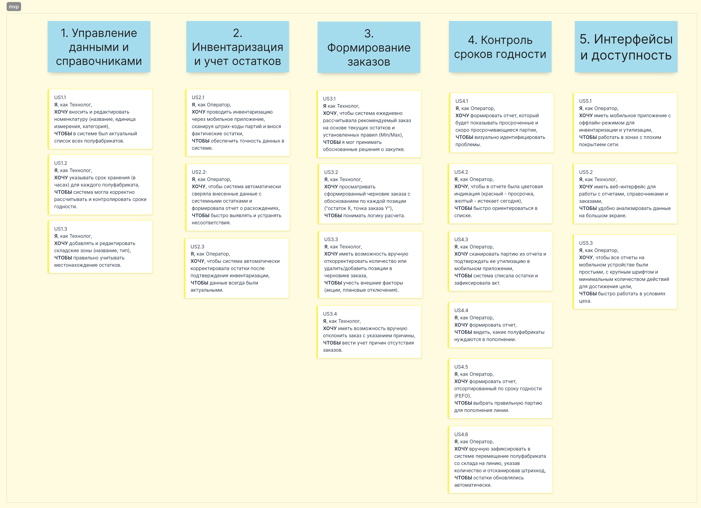 доступна по ссылке
Описание User Story, реализуемых в рамках MVP
Эпик: Управление данными и справочниками
- US1.1: Я, как Технолог, хочу вносить и редактировать номенклатуру (название, единица измерения, категория), чтобы в системе был актуальный список всех полуфабрикатов.
- US1.2: Я, как Технолог, хочу указывать срок хранения (в часах) для каждого полуфабриката, чтобы система могла корректно рассчитывать и контролировать сроки годности.
- US1.3: Я, как Технолог, хочу добавлять и редактировать складские зоны (название, тип), чтобы правильно учитывать местонахождение остатков.
Эпик: Инвентаризация и учет остатков
- US2.1: Я,Как Оператор, хочу проводить инвентаризацию через мобильное приложение, сканируя штрих-коды партий и внося фактические остатки, чтобы обеспечить точность данных в системе.
- US2.2: Я, как Оператор, хочу, чтобы система автоматически сверяла внесенные данные с системными остатками и формировала отчет о расхождениях, чтобы быстро выявлять и устранять несоответствия.
- US2.3: Как Оператор, я хочу, чтобы система автоматически корректировала остатки после подтверждения инвентаризации, чтобы данные всегда были актуальными.
Эпик: Формирование заказов (Рекомендательная система)
- US3.1: Я, как Технолог, хочу, чтобы система ежедневно рассчитывала рекомендуемый заказ на основе текущих остатков и установленных правил (Min/Max), чтобы я мог принимать обоснованные решения о закупке.
- US3.2: Я, как Технолог, хочу просматривать сформированный черновик заказа с обоснованием по каждой позиции ("остаток X, точка заказа Y"), чтобы понимать логику расчета.
- US3.3: Я, как Технолог, хочу иметь возможность вручную откорректировать количество или удалить/добавить позиции в черновике заказа, чтобы учесть внешние факторы (акции, плановые отключения).
- US3.4: Я, как Технолог, хочу иметь возможность вручную отклонить заказ с указанием причины (например, "закрыто на мойку"), чтобы вести учет причин отсутствия заказов.
Эпик: Контроль сроков годности (Отчетность и ручные действия)
- US4.1: Я, как Оператор, хочу формировать отчет, который будет показывать просроченные и скоро просрочивающиеся партии, чтобы визуально идентифицировать проблемы.
- US4.2: Я, как Оператор, хочу, чтобы в отчете была цветовая индикация (красный - просрочка, желтый - истекает сегодня), чтобы быстро ориентироваться в списке.
- US4.3: Я, как Оператор, хочу сканировать партию из отчета и подтверждать ее утилизацию в мобильном приложении, чтобы система списала остатки и зафиксировала акт.
- US4.4: Я, как Оператор, хочу формировать отчет, чтобы видеть, какие полуфабрикаты нуждаются в пополнении.
- US4.5: Я, как Оператор, хочу формировать отчет, отсортированный по сроку годности (FEFO), чтобы выбрать правильную партию для пополнения линии.
- US4.6: Я, как Оператор, хочу вручную зафиксировать в системе перемещение полуфабриката со склада на линию, указав количество и отсканировав штрихкод, чтобы остатки обновлялись автоматически.
Эпик: Интерфейсы и доступность
- US5.1: Я, как Оператор, хочу иметь мобильное приложение с оффлайн-режимом для инвентаризации и утилизации, чтобы работать в зонах с плохим покрытием сети.
- US5.2: Я, как Технолог, хочу иметь веб-интерфейс для работы с отчетами, справочниками и заказами, чтобы удобно анализировать данные на большом экране.
- US5.3: Я, как Оператор, хочу, чтобы все отчеты на мобильном устройстве были простыми, с крупным шрифтом и минимальным количеством действий для достижения цели, чтобы быстро работать в условиях цеха.
Карта пользовательских историй, реализуемых в рамках первого релиза
 доступна по ссылке
доступна по ссылке
Описание User Story, реализуемых в рамках первого релиза
Эпик: Автоматизация контроля сроков годности
- US6.1: Я, как Система, хочу автоматически сканировать все партии каждые N минут и блокировать те, у которых истек или скоро истекает срок годности, чтобы исключить человеческий фактор и предотвратить любую возможность использования просрочки.
- US6.2: Я, как Система, хочу автоматически создавать задания на утилизацию для заблокированных партий и отправлять их на терминал оператора, чтобы обеспечить немедленную реакцию на риск.
- US6.3: Я, как Оператор, хочу получать четкие задания на утилизацию со штрихкодом и локацией, а не искать данные в отчете, чтобы выполнять работу быстрее и без ошибок.
Эпик: Интеграция с роботизированной линией (Безопасность пищи)
- US7.1: Я, как Роботизированная линия, хочу запрашивать у системы разрешение на использование полуфабриката из оперативного запаса перед его взятием, чтобы быть уверенным в его безопасности.
- US7.2: Я, как Система, хочу отвечать роботу на запрос в режиме реального времени (<100 мс), разрешая или запрещая использование, чтобы не останавливать производственный процесс.
- US7.3: Я, как Система, хочу автоматически сообщать роботу о блокировке партии в оперативном запасе, чтобы он немедленно прекратил ее использование и уведомил оператора.
Эпик: Автоматическое пополнение линии
- US8.1: Я, как Система, хочу отслеживать остатки в оперативном запасе каждой линии в реальном времени, чтобы автоматически определять момент необходимости пополнения.
- US8.2: Я, как Система, хочу автоматически формировать задание для оператора на пополнение конкретной линии, указывая точную партию со склада по FEFO и необходимое количество, чтобы исключить ручной выбор и ошибки.
- US8.3: Я, как Оператор, хочу получать задания на пополнение линии, сканировать только штрихкоды (складской партии и зоны линии) и система автоматически фиксировала перемещение, чтобы максимально упростить мою работу.
Эпик: Настройка правил автозаказа
- US9.1: Я, как Технолог, хочу иметь интерфейс для самостоятельной настройки параметров автозаказа (Min, Max, точка заказа, кратность) для каждого полуфабриката, чтобы гибко управлять запасами без участия разработчиков.
- US9.2: Я, как Технолог, хочу настраивать коэффициент сезонности для правил автозаказа, чтобы увеличивать запасы в периоды высокого спроса.
- US9.3: Я, как Технолог, хочу применять настройки правил к группе товаров одновременно, чтобы экономить время на конфигурации.
Эпик: Интеграция с Логистическим Центром (ЛЦ)
- US10.1: Я, как Система, хочу автоматически отправлять утвержденные заказы в систему ЛЦ через API, чтобы исключить ручной ввод и связанные с ним ошибки.
- US10.2: Я, как Система, хочу обрабатывать ответы от ЛЦ (подтверждение, ошибка, изменение количества) и автоматически обновлять статус заказа в системе, чтобы обеспечить сквозную видимость процесса.
- US10.3: Я, как Технолог, хочу видеть в системе статус заказа ("Передан в ЛЦ", "Подтвержден", "В пути"), чтобы не связываться с ЛЦ для выяснения обстановки.
Эпик: Расширенное списание и аудит
- US11.1: Я, как Оператор, хочу иметь возможность зафиксировать списание не только по причине просрочки, но и по другим причинам (брак, бой, порча), выбирая из справочника, чтобы унифицировать учет всех потерь. *
- US11.2: Я, как Технолог, хочу видеть полный и неизменяемый журнал аудита по всем действиям системы (блокировки, списания) и пользователей, чтобы проводить расследование инцидентов.
Эпик: Надежность и производительность
- US12.1: Я, как Системный администратор, хочу, чтобы все взаимодействия с внешними системами (ЛЦ, робот) использовали асинхронные очереди сообщений, чтобы обеспечить надежность и устойчивость к сбоям.
- US12.2: Я, как Пользователь, хочу, чтобы критические запросы (от робота) обрабатывались системой менее чем за 100 мс, чтобы не простаивало производство.
- US12.3: Я, как Пользователь, хочу, чтобы система имела ролевую модель и разграничение прав доступа к функциям, чтобы обеспечить безопасность данных.
Информационная модель
Модель предметной области
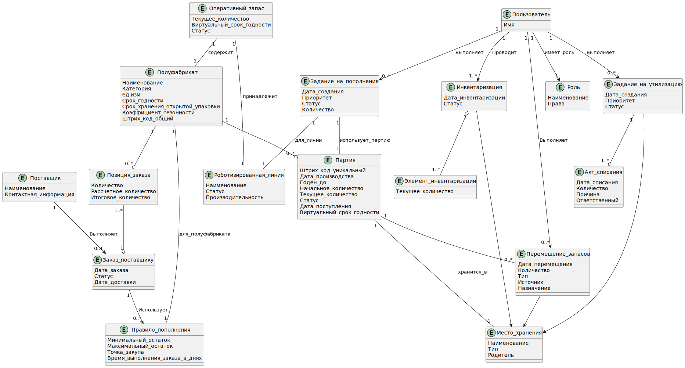
Модель данных
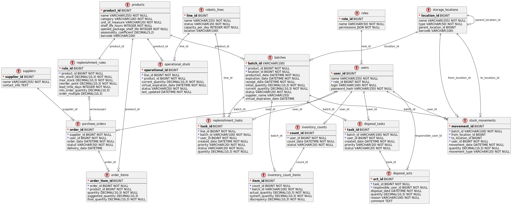
Описание таблиц БД
products (Номенклатура полуфабрикатов)
| Реквизит | Тип данных | Признак | Обязательность | Описание |
|---|---|---|---|---|
| product_id | BIGINT | PK | Обязательно | Уникальный идентификатор полуфабриката |
| name | VARCHAR(255) | Обязательно | Наименование полуфабриката | |
| category | VARCHAR(100) | Обязательно | Категория полуфабриката | |
| unit_of_measure | VARCHAR(20) | Обязательно | Единица измерения (шт/кг) | |
| shelf_life_hours | INTEGER | Обязательно | Общий срок хранения в часах | |
| opened_package_shelf_life | INTEGER | Обязательно | Срок хранения открытой упаковки в часах | |
| seasonality_coefficient | DECIMAL(5,2) | Опционально | Коэффициент сезонности для прогноза | |
| barcode | VARCHAR(100) | Опционально | Штрих-код полуфабриката |
batches (Партии полуфабрикатов)
| Реквизит | Тип данных | Признак | Обязательность | Описание |
|---|---|---|---|---|
| batch_id | VARCHAR(100) | PK | Обязательно | Уникальный штрих-код партии |
| product_id | BIGINT | FK → products | Обязательно | Ссылка на полуфабрикат |
| location_id | BIGINT | FK → storage_locations | Обязательно | Место хранения партии |
| production_date | DATETIME | Обязательно | Дата производства | |
| expiration_date | DATETIME | Обязательно | Срок годности | |
| receipt_date | DATETIME | Обязательно | Дата поступления на склад | |
| initial_quantity | DECIMAL(10,3) | Обязательно | Начальное количество | |
| current_quantity | DECIMAL(10,3) | Обязательно | Текущее количество | |
| status | VARCHAR(20) | Обязательно | Статус (активна/заблокирована/утилизирована) | |
| supplier_name | VARCHAR(255) | Опционально | Наименование поставщика | |
| virtual_expiration_date | DATETIME | Опционально | Виртуальный срок годности для оперативного запаса |
storage_locations (Складские зоны)
| Реквизит | Тип данных | Признак | Обязательность | Описание |
|---|---|---|---|---|
| location_id | BIGINT | PK | Обязательно | Уникальный идентификатор зоны |
| name | VARCHAR(255) | Обязательно | Наименование зоны | |
| type | VARCHAR(50) | Обязательно | Тип зоны (холодильник/морозильник/оперативный запас) | |
| parent_location_id | BIGINT | FK → storage_locations | Опционально | Родительская зона |
| barcode | VARCHAR(100) | Опционально | Штрих-код зоны для сканирования |
inventory_counts (Инвентаризации)
| Реквизит | Тип данных | Признак | Обязательность | Описание |
|---|---|---|---|---|
| count_id | BIGINT | PK | Обязательно | Уникальный идентификатор инвентаризации |
| user_id | BIGINT | FK → users | Обязательно | Ответственный пользователь |
| count_date | DATETIME | Обязательно | Дата проведения инвентаризации | |
| status | VARCHAR(20) | Обязательно | Статус инвентаризации |
inventory_count_items (Элементы инвентаризации)
| Реквизит | Тип данных | Признак | Обязательность | Описание |
|---|---|---|---|---|
| item_id | BIGINT | PK | Обязательно | Уникальный идентификатор элемента |
| count_id | BIGINT | FK → inventory_counts | Обязательно | Ссылка на инвентаризацию |
| batch_id | VARCHAR(100) | FK → batches | Обязательно | Ссылка на партию |
| actual_quantity | DECIMAL(10,3) | Обязательно | Фактическое количество | |
| system_quantity | DECIMAL(10,3) | Обязательно | Системное количество на момент инвентаризации | |
| discrepancy | DECIMAL(10,3) | Обязательно | Расхождение (факт - система) |
suppliers (Поставщики)
| Реквизит | Тип данных | Признак | Обязательность | Описание |
|---|---|---|---|---|
| supplier_id | BIGINT | PK | Обязательно | Уникальный идентификатор поставщика |
| name | VARCHAR(255) | Обязательно | Наименование поставщика | |
| contact_info | TEXT | Опционально | Контактная информация |
purchase_orders (Заказы поставщикам)
| Реквизит | Тип данных | Признак | Обязательность | Описание |
|---|---|---|---|---|
| order_id | BIGINT | PK | Обязательно | Уникальный идентификатор заказа |
| supplier_id | BIGINT | FK → suppliers | Обязательно | Поставщик |
| user_id | BIGINT | FK → users | Обязательно | Технолог, утвердивший заказ |
| order_date | DATETIME | Обязательно | Дата формирования заказа | |
| status | VARCHAR(50) | Обязательно | Статус заказа | |
| delivery_date | DATETIME | Опционально | Плановая дата поставки |
order_items (Позиции заказа)
| Реквизит | Тип данных | Признак | Обязательность | Описание |
|---|---|---|---|---|
| order_item_id | BIGINT | PK | Обязательно | Уникальный идентификатор позиции |
| order_id | BIGINT | FK → purchase_orders | Обязательно | Ссылка на заказ |
| product_id | BIGINT | FK → products | Обязательно | Полуфабрикат |
| quantity | DECIMAL(10,3) | Обязательно | Заказываемое количество | |
| suggested_quantity | DECIMAL(10,3) | Обязательно | Рекомендуемое системой количество | |
| final_quantity | DECIMAL(10,3) | Обязательно | Итоговое количество после корректировки |
replenishment_rules (Правила пополнения)
| Реквизит | Тип данных | Признак | Обязательность | Описание |
|---|---|---|---|---|
| rule_id | BIGINT | PK | Обязательно | Уникальный идентификатор правила |
| product_id | BIGINT | FK → products | Обязательно | Полуфабрикат |
| min_stock | DECIMAL(10,3) | Обязательно | Минимальный запас | |
| max_stock | DECIMAL(10,3) | Обязательно | Максимальный запас | |
| reorder_point | DECIMAL(10,3) | Обязательно | Точка заказа | |
| lead_time_days | INTEGER | Обязательно | Время выполнения заказа в днях | |
| min_order_quantity | DECIMAL(10,3) | Опционально | Минимальная партия заказа | |
| order_multiple | DECIMAL(10,3) | Опционально | Кратность партии |
disposal_tasks (Задания на утилизацию)
| Реквизит | Тип данных | Признак | Обязательность | Описание |
|---|---|---|---|---|
| task_id | BIGINT | PK | Обязательно | Уникальный идентификатор задания |
| batch_id | VARCHAR(100) | FK → batches | Обязательно | Партия для утилизации |
| user_id | BIGINT | FK → users | Обязательно | Оператор, получивший задание |
| created_date | DATETIME | Обязательно | Дата создания задания | |
| priority | VARCHAR(20) | Обязательно | Приоритет задания | |
| status | VARCHAR(20) | Обязательно | Статус задания |
disposal_acts (Акты списания)
| Реквизит | Тип данных | Признак | Обязательность | Описание |
|---|---|---|---|---|
| act_id | BIGINT | PK | Обязательно | Уникальный идентификатор акта |
| task_id | BIGINT | FK → disposal_tasks | Обязательно | Ссылка на задание |
| responsible_user_id | BIGINT | FK → users | Обязательно | Ответственный за списание |
| disposal_date | DATETIME | Обязательно | Дата списания | |
| quantity | DECIMAL(10,3) | Обязательно | Количество списания | |
| reason | VARCHAR(100) | Обязательно | Причина списания | |
| comment | TEXT | Опционально | Комментарий |
stock_movements (Перемещения запасов)
| Реквизит | Тип данных | Признак | Обязательность | Описание |
|---|---|---|---|---|
| movement_id | BIGINT | PK | Обязательно | Уникальный идентификатор перемещения |
| batch_id | VARCHAR(100) | FK → batches | Обязательно | Перемещаемая партия |
| from_location_id | BIGINT | FK → storage_locations | Опционально | Зона-источник |
| to_location_id | BIGINT | FK → storage_locations | Опционально | Зона-назначение |
| user_id | BIGINT | FK → users | Обязательно | Оператор, выполнивший перемещение |
| movement_date | DATETIME | Обязательно | Дата перемещения | |
| quantity | DECIMAL(10,3) | Обязательно | Количество | |
| movement_type | VARCHAR(20) | Обязательно | Тип перемещения |
users (Пользователи)
| Реквизит | Тип данных | Признак | Обязательность | Описание |
|---|---|---|---|---|
| user_id | BIGINT | PK | Обязательно | Уникальный идентификатор пользователя |
| name | VARCHAR(255) | Обязательно | ФИО пользователя | |
| role_id | BIGINT | FK → roles | Обязательно | Роль пользователя |
| login | VARCHAR(100) | Обязательно | Логин для входа | |
| password_hash | VARCHAR(255) | Обязательно | Хеш пароля |
roles (Роли)
| Реквизит | Тип данных | Признак | Обязательность | Описание |
|---|---|---|---|---|
| role_id | BIGINT | PK | Обязательно | Уникальный идентификатор роли |
| name | VARCHAR(50) | Обязательно | Наименование роли | |
| permissions | JSON | Обязательно | Права доступа в формате JSON |
operational_stock (Оперативный запас линии)
| Реквизит | Тип данных | Признак | Обязательность | Описание |
|---|---|---|---|---|
| operational_id | BIGINT | PK | Обязательно | Уникальный идентификатор записи |
| line_id | BIGINT | FK → robotic_lines | Обязательно | Роботизированная линия |
| product_id | BIGINT | FK → products | Обязательно | Полуфабрикат |
| current_quantity | DECIMAL(10,3) | Обязательно | Текущее количество | |
| virtual_expiration_date | DATETIME | Обязательно | Виртуальный срок годности | |
| status | VARCHAR(20) | Обязательно | Статус | |
| last_updated | DATETIME | Обязательно | Дата последнего обновления |
robotic_lines (Роботизированные линии)
| Реквизит | Тип данных | Признак | Обязательность | Описание |
|---|---|---|---|---|
| line_id | BIGINT | PK | Обязательно | Уникальный идентификатор линии |
| name | VARCHAR(255) | Обязательно | Наименование линии | |
| status | VARCHAR(20) | Обязательно | Статус линии | |
| capacity_per_day | INTEGER | Обязательно | Производительность (ед/день) | |
| location | VARCHAR(100) | Опционально | Местоположение линии |
replenishment_tasks (Задания на пополнение)
| Реквизит | Тип данных | Признак | Обязательность | Описание |
|---|---|---|---|---|
| task_id | BIGINT | PK | Обязательно | Уникальный идентификатор задания |
| line_id | BIGINT | FK → robotic_lines | Обязательно | Линия для пополнения |
| batch_id | VARCHAR(100) | FK → batches | Обязательно | Партия для использования |
| user_id | BIGINT | FK → users | Обязательно | Оператор, получивший задание |
| created_date | DATETIME | Обязательно | Дата создания задания | |
| priority | VARCHAR(20) | Обязательно | Приоритет задания | |
| status | VARCHAR(20) | Обязательно | Статус задания | |
| quantity | DECIMAL(10,3) | Обязательно | Количество для пополнения |
Компонентная архитектура
Требования, обосновывающие выбор микросервисной архитектуры
Масштабируемость до 100 ресторанов
Исходное требование (из контекста):
"Если проект будет успешен, мы масштабируем нашу систему на все рестораны. Всего ресторанов около 100."
Обоснование для микросервисов:
- Независимое масштабирование: Сервис автозаказа будет нагружен пропорционально количеству ресторанов, в то время как сервис управления справочниками - нет. Микросервисы позволяют масштабировать только нужные компоненты.
- Географическое распределение: Для сети ресторанов может потребоваться распределенное развертывание ближе к регионам.
Интеграция с разнородными внешними системами
Исходное требование (FR6.1, FR6.2):
FR6.1: Система должна предоставлять API для роботизированной линии... FR6.2: Система должна предоставлять API для обмена данными с системой Логистического Центра...
Обоснование для микросервисов:
- Изоляция интеграций: Каждая внешняя система (робот, ЛЦ) имеет свой протокол и SLA. Микросервисы позволяют изолировать проблемы интеграции.
- Независимое развитие: Изменения в API ЛЦ не должны затрагивать сервис работы с роботизированной линией.
Критичные требования к производительности и доступности
Исходное требование (NFR для UC11):
NFR: Время от момента отправки запроса роботом до получения ответа должно быть минимальным (< 100 мс)... доступность 99.99%.
Обоснование для микросервисов:
- Выделение критичных компонентов: Сервис проверки сроков годности требует максимальной производительности и может быть развернут на более мощном оборудовании.
- Изоляция сбоев: Проблемы в менее критичных сервисах (например, отчетности) не должны влиять на работу производственной линии.
Разные модели данных и паттерны доступа
Исходное требование (из анализа процессов):
Операции с роботом требуют реального времени, формирование отчетов - пакетной обработки, работа с заказами - транзакционности.
Обоснование для микросервисов:
- Оптимизация БД: Сервис работы с роботом может использовать in-memory БД, сервис отчетов - колоночную БД, сервис заказов - реляционную транзакционную БД.
- Разные архитектурные паттерны: CQRS для отчетов, Event Sourcing для аудита движений запасов.
Независимость жизненных циклов компонентов
Исходное требование (из этапов реализации):
MVP включает базовый функционал, Релиз 1.0 добавляет интеграции и автоматизацию.
Обоснование для микросервисов:
- Независимые релизы: Можно развивать и выпускать новые версии сервиса автозаказа, не затрагивая работающий сервис инвентаризации.
- Поэтапное внедрение: В MVP можно реализовать монолит, а в Релизе 1.0 выделить критические сервисы.
Разные команды разработки
Исходное требование (подразумеваемое):
Разные экспертизы: интеграции с оборудованием, бизнес-логика заказов, аналитика и отчетность.
Обоснование для микросервисов:
- Независимые команды: Команда интеграций может работать с API робота, команда аналитики - с системой отчетности.
- Технологический стек: Каждая команда может выбирать оптимальный стек технологий для своей предметной области.
Обоснование выбора архитектурного стиля
Для MVP может быть целесообразно начать с модульного монолита, заложив границы будущих сервисов, и выделять микросервисы по мере роста нагрузки и команды.
Диаграмма контекста

Диаграммы контейнеров
Далее диаграмму разделил на две части, чтобы было удобнее описывать и все было хорошо видно. Некоторые сервисы повторяются на диаграммах и могут быть реализованы в одном экземпляре (на усмотрение разработчика).
Часть сервисов по автозаказу, логистике и по инвентаризации

Часть сервисов по контролю срока годности и пополнению оперативного запаса

Таблица контейнеров системы управления запасами
Frontend контейнеры
| Контейнер | Тип | Назначение | Технологии |
|---|---|---|---|
| Веб-приложение | Веб-приложение | Управление для технолога и администратора: заказы, настройки, отчеты | React, TypeScript |
| Мобильное приложение | Мобильное приложение | Задания и инвентаризация для оператора: оффлайн-режим, сканирование штрих-кодов | React Native |
Backend бизнес-сервисы
| Контейнер | Тип | Назначение | Технологии |
|---|---|---|---|
| Сервис остатков | Микросервис | Управление партиями, остатками, FEFO, перемещениями | Spring Boot, PostgreSQL |
| Сервис контроля сроков | Микросервис | Блокировка партий, расчет виртуальных сроков, автоматическая утилизация | Spring Boot, Redis |
| Сервис заданий | Микросервис | Управление заданиями операторам: утилизация, пополнение, приоритизация | Spring Boot, PostgreSQL |
| Сервис заказов | Микросервис | Автозаказ, правила пополнения, интеграция с ЛЦ | Spring Boot, PostgreSQL |
| Сервис оперативного запаса | Микросервис | Управление запасом на роботизированной линии, пополнение | Spring Boot, Redis |
| Сервис интеграции с роботом | Микросервис | Реальное время взаимодействие с роботом, проверка сроков | Spring Boot, gRPC, WebSocket |
Инфраструктурные сервисы
| Контейнер | Тип | Назначение | Технологии |
|---|---|---|---|
| API Gateway | Шлюз API | Единая точка входа, маршрутизация, аутентификация | Spring Cloud Gateway |
| Сервис аутентификации | Микросервис | Управление доступом, ролями, JWT токены | Spring Boot, JWT, Redis |
| Сервис уведомлений | Микросервис | Push, SMS, email уведомления для пользователей | Spring Boot |
| Брокер сообщений | Инфраструктура | Асинхронная коммуникация между сервисами | Apache Kafka |
Базы данных и хранилища
| Контейнер | Тип | Назначение | Технологии |
|---|---|---|---|
| База остатков | База данных | Хранение данных о партиях, остатках, перемещениях | PostgreSQL |
| База заказов | База данных | Хранение заказов, правил пополнения, истории | PostgreSQL |
| База заданий | База данных | Хранение заданий операторам, статусов выполнения | PostgreSQL |
| Кэш-хранилище | Кэш | Высокопроизводительный кэш остатков, сессий, блокировок | Redis |
| База аналитики | База данных | Метрики, мониторинг, аналитические отчеты | ClickHouse |
Описание контейнеров системы автозаказа и логистики
Контейнеры системы автозаказа и логистики
| Контейнер | Тип | Назначение | Технологии |
|---|---|---|---|
| Веб-приложение | Фронтенд | Веб-приложение для управления заказами и правилами. Интерфейс для технолога для настройки правил автозаказа, корректировки заказов, управления справочниками. | React, TypeScript |
| API Gateway | Бэкэнд | Единая точка входа в систему. Обеспечивает маршрутизацию запросов, балансировку нагрузки, централизованную аутентификацию. | Spring Cloud Gateway |
| Обнаружение сервисов | Инфраструктура | Регистрация и обнаружение сервисов. Позволяет динамически находить доступные экземпляры сервисов в распределенной системе. | Netflix Eureka |
| Сервис аутентификации | Бэкэнд | Сервис аутентификации и авторизации. Управление пользователями, проверка прав доступа, генерация JWT токенов. | Spring Boot, JWT |
| Сервис заказов | Бэкэнд | Основной бизнес-сервис для автозаказа. Управление правилами пополнения, расчет заказов, ведение справочников номенклатуры, корректировка заказов. | Spring Boot |
| Сервис интеграции с ЛЦ | Бэкэнд | Сервис интеграции с логистическим центром. Обмен данными с поставщиком: передача заказов, получение информации о поставках и статусах заказов. | Spring Boot |
| База заказов | База данных | Хранение данных заказов и правил. Содержит информацию о заказах, правилах пополнения, справочниках номенклатуры. | PostgreSQL |
| Кэш-хранилище | База данных | Кэш-хранилище для сессий и временных данных. Используется для хранения сессий пользователей, токенов, кэширования часто запрашиваемых данных. | Redis |
| Брокер сообщений | Инфраструктура | Асинхронная коммуникация между сервисами. Обеспечивает надежную доставку событий, буферизацию сообщений, отказоустойчивость. | Apache Kafka |
Внешние зависимости системы
| Контейнер | Тип | Назначение | Технологии |
|---|---|---|---|
| Сервис инвентаризации | Бекэнд (внешний) | Сервис инвентаризации из другой группы. Предоставляет данные о текущих остатках полуфабрикатов для расчета автозаказа. | Spring Boot |
| Логистический центр | Внешняя система | Логистический центр (поставщик). Внешняя система для приема заказов и предоставления информации о поставках. | REST API |
Ключевые технологические решения:
- Spring Cloud Gateway - для API Gateway вместо Nginx, лучшая интеграция с экосистемой Spring
- Netflix Eureka - стандартное решение для обнаружения сервисов в Spring Cloud
- PostgreSQL - надежная реляционная БД для транзакционных данных заказов
- Redis - высокопроизводительный кэш для сессий и временных данных
- Apache Kafka - брокер сообщений для асинхронной коммуникации
- React + TypeScript - современный Фронтэнд стек для веб-приложения
Диаграммы компонентов
На диаграммах компонентов описаны основные сервисы, предоставляющие функционал системы.


Таблица компонентов системы управления запасами
Сервис остатков - компоненты
| Компонент | Тип | Назначение | Технологии |
|---|---|---|---|
| Менеджер партий | Бизнес-компонент | Управление жизненным циклом партий, статусами | Spring Bean |
| Калькулятор остатков | Бизнес-компонент | Расчет текущих остатков, FEFO логика при списаниях | Spring Bean |
| Процессор перемещений | Бизнес-компонент | Обработка перемещений между складскими зонами | Spring Bean |
| Обработчик инвентаризации | Бизнес-компонент | Поддержка процессов инвентаризации, сверка остатков | Spring Bean |
| REST Контроллер | API компонент | REST API для управления остатками и партиями | Spring MVC |
| Репозиторий остатков | Компонент доступа к данным | Доступ к данным партий и остатков в БД | Spring Data JPA |
Сервис интеграции с роботом - компоненты
| Компонент | Тип | Назначение | Технологии |
|---|---|---|---|
| Обработчик протокола | Бизнес-компонент | Обработка gRPC/WebSocket соединений с роботом | gRPC Service |
| Проверка сроков | Бизнес-компонент | Проверка сроков годности в реальном времени (<100 мс) | Spring Bean |
| Менеджер кэша | Бизнес-компонент | Управление кэшем остатков в Redis для быстрого доступа | Spring Bean |
| Обработчик аварий | Бизнес-компонент | Обработка аварийных ситуаций и остановок робота | Spring Bean |
| gRPC Сервис | API компонент | gRPC endpoint для взаимодействия с роботом | gRPC |
| Сервис синхронизации | Бизнес-компонент | Синхронизация кэша с основными данными из других сервисов | Spring Bean |
Сервис контроля сроков - компоненты
| Компонент | Тип | Назначение | Технологии |
|---|---|---|---|
| Сканер сроков | Бизнес-компонент | Сканирование партий по расписанию на предмет истечения сроков | Spring Scheduler |
| Менеджер блокировок | Бизнес-компонент | Автоматическая блокировка партий по истечении сроков | Spring Bean |
| Калькулятор виртуальных сроков | Бизнес-компонент | Расчет виртуальных сроков годности при смешивании партий | Spring Bean |
| Триггер утилизации | Бизнес-компонент | Создание заданий на утилизацию просроченных партий | Spring Bean |
| Репозиторий сроков | Компонент доступа к данным | Доступ к данным сроков годности партий | Spring Data JPA |
| REST Контроллер | API компонент | API для управления блокировками и проверки статусов | Spring MVC |
Сервис заданий - компоненты
| Компонент | Тип | Назначение | Технологии |
|---|---|---|---|
| Диспетчер заданий | Бизнес-компонент | Распределение заданий операторам, балансировка нагрузки | Spring Bean |
| Калькулятор приоритетов | Бизнес-компонент | Расчет приоритетов заданий (утилизация > пополнение) | Spring Bean |
| Менеджер синхронизации | Бизнес-компонент | Синхронизация с мобильным приложением, push-уведомления | Spring Bean |
| Обработчик завершения | Бизнес-компонент | Подтверждение выполнения заданий, обновление статусов | Spring Bean |
| REST Контроллер | API компонент | API для управления заданиями операторов | Spring MVC |
| Репозиторий заданий | Компонент доступа к данным | Доступ к данным заданий в БД | Spring Data JPA |
| Очередь оффлайн-работы | Бизнес-компонент | Управление оффлайн-операциями мобильного приложения | Spring Bean |
Сервис заказов - компоненты
| Компонент | Тип | Назначение | Технологии |
|---|---|---|---|
| Движок автозаказа | Бизнес-компонент | Автоматический расчет заказов по правилам пополнения | Spring Bean |
| Валидатор правил | Бизнес-компонент | Проверка корректности правил (Min < Reorder < Max) | Spring Bean |
| Менеджер утверждения | Бизнес-компонент | Управление процессом утверждения заказов технологом | Spring Bean |
| Калькулятор сезонности | Бизнес-компонент | Учет сезонных коэффициентов в расчетах автозаказа | Spring Bean |
| REST Контроллер | API компонент | API для управления заказами и правилами | Spring MVC |
| Репозиторий заказов | Компонент доступа к данным | Доступ к данным заказов и правил в БД | Spring Data JPA |
| Интеграция с поставщиками | Бизнес-компонент | Управление подключениями к логистическим центрам | Spring Bean |
Сервис оперативного запаса - компоненты
| Компонент | Тип | Назначение | Технологии |
|---|---|---|---|
| Калькулятор пополнения | Бизнес-компонент | Расчет необходимости пополнения роботизированной линии | Spring Bean |
| Монитор линии | Бизнес-компонент | Мониторинг остатков на роботизированных линиях в реальном времени | Spring Bean |
| Менеджер виртуального запаса | Бизнес-компонент | Управление виртуальными партиями на линии, расчет сроков | Spring Bean |
| Экстренное пополнение | Бизнес-компонент | Обработка критического уровня запаса (<10 мин до исчерпания) | Spring Bean |
| REST Контроллер | API компонент | API для управления оперативным запасом | Spring MVC |
| Репозиторий линий | Компонент доступа к данных | Доступ к данным роботизированных линий | Spring Data JPA |
| Селектор FEFO | Бизнес-компонент | Выбор партий для пополнения по принципу FEFO | Spring Bean |
Интеграционное взаимодействие
Описаны взаимодействия с системой роботизированной линии и с логистическим центром.
Диаграммы последовательности взаимодействия с системой роботизированной линии.
Получение разрешения при списании полуфабриката из оперативного запаса.
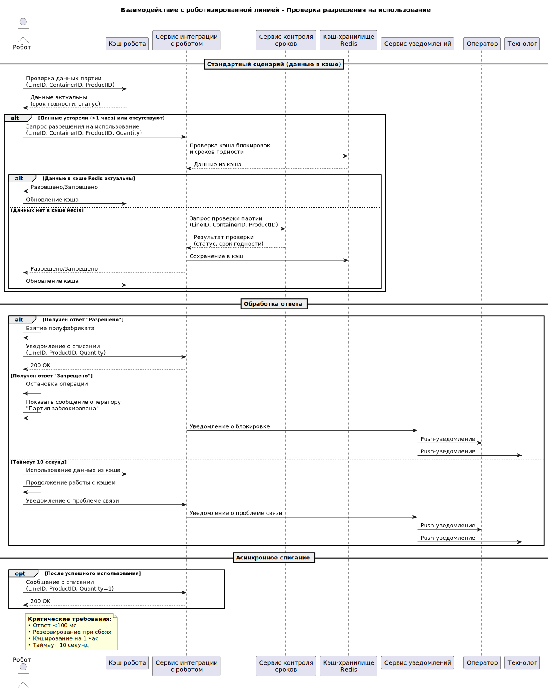
Диаграмма последовательности взаимодействия с логистическим центром
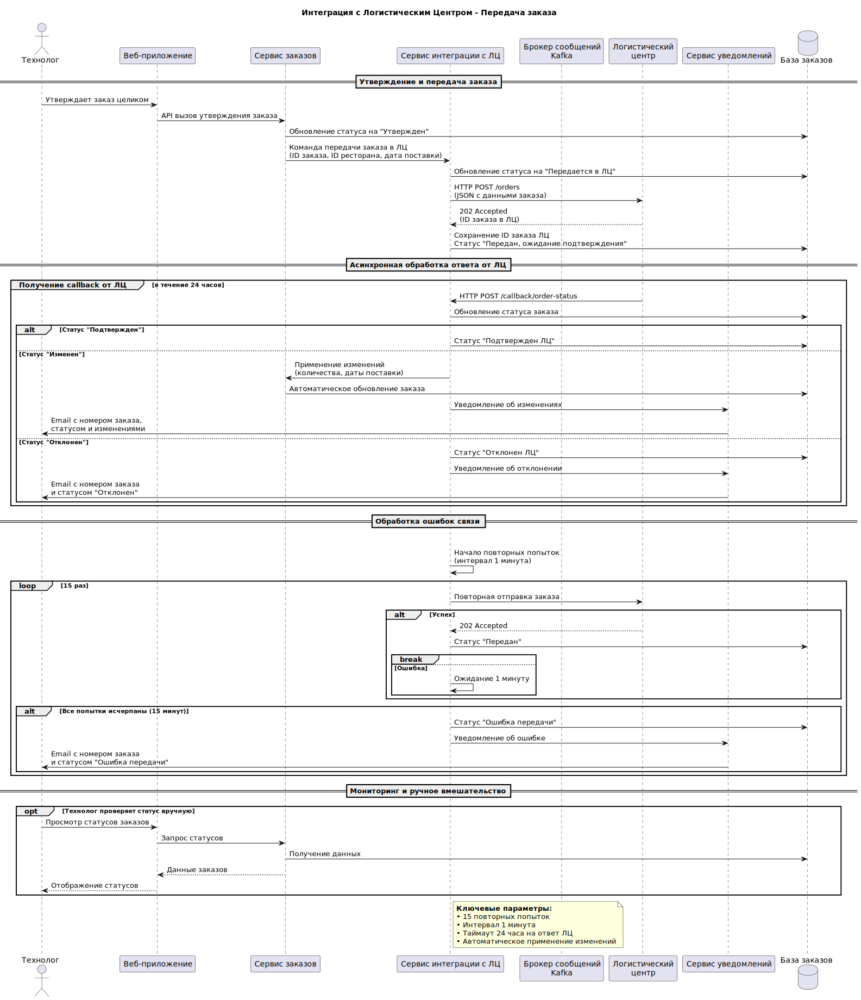
Диаграмма последовательности получения прогноза продаж для расчета автозаказа полуфабрикатов
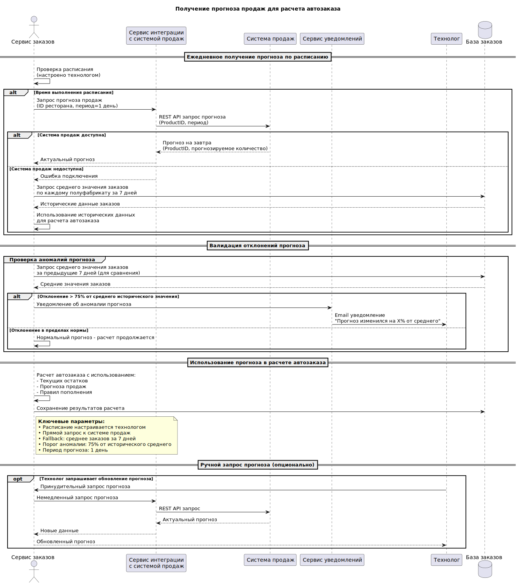
Диаграмма последовательности создания задания на утилизацию
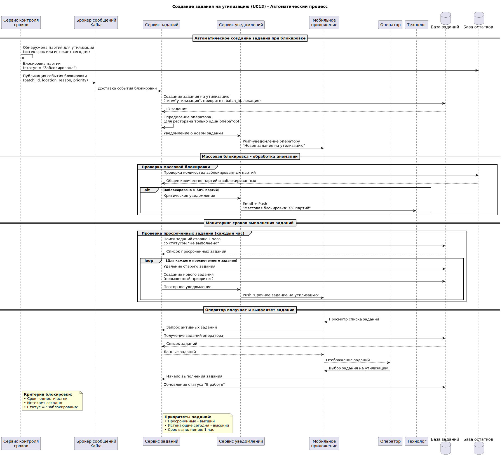
Диаграмма последовательности инвентаризации в офф-лайн режиме и синхронизация
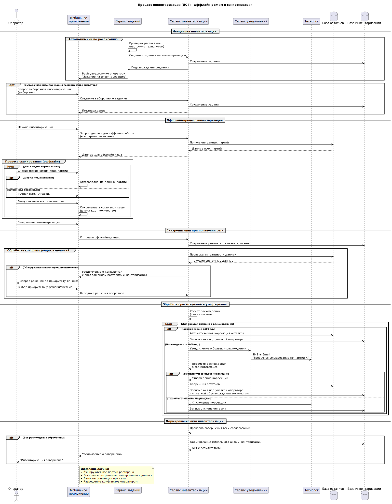
Демонстрация UI макета
Интерактивная демонстрация
Для интерактивного просмотра откройте UI макет для оператора или UI макет для технолога в отдельной вкладке.
Статичные снимки
Интерфейс для оператора

Интерфейс для технолога
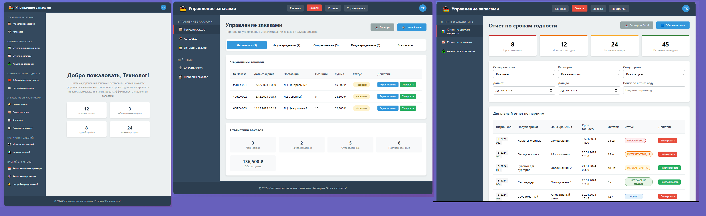
API
API для интеграции с роботизированной линией
API для интеграции с логистическими центрами
API для мобильного приложения оператора линии
API для контроля сроков годности партий полуфабрикатов
API для управления складскими запасами
API для получения прогнозов продаж
API для автоматического расчета и управления заказами полуфабрикатов
API для управления оперативным запасом роботизированных линий
Задачи
Постановки на разработку по UserStory
Постановки на разработку функционала, реализуемого в рамках MVP
US1.1: Внесение и редактирование номенклатуры
Definition of Ready (DoR) - Критерии готовности к началу работы:
- Требования понятны и согласованы с технологом
- Дизайн интерфейса ведения справочника утвержден
- Определен полный набор атрибутов полуфабриката
- Готовы API endpoints для работы с номенклатурой
- Определены валидации данных (уникальность наименования и т.д.)
Definition of Done (DoD) - Критерии завершенности:
- Реализован интерфейс создания/редактирования полуфабрикатов
- Реализована валидация вводимых данных
- Данные сохраняются в базу и доступны для других процессов
- Написаны и проходят unit-тесты
- Код прошел code review
- Функциональность протестирована на тестовом стенде
Критерии приемки (Acceptance Criteria):
- Технолог может добавить новый полуфабрикат с обязательными полями: название, единица измерения, категория
- Система проверяет уникальность наименования
- При редактировании существующей позиции изменения сохраняются
- Новый полуфабрикат сразу доступен для использования в заказах и инвентаризации
Задачи:
- Создать таблицу
productsв БД - Реализовать REST API для CRUD операций
- Разработать UI форму ввода/редактирования
- Реализовать валидацию данных
- Написать тесты
US1.2: Указание сроков хранения
Definition of Ready (DoR):
- US1.1 завершена и протестирована
- Определен формат хранения сроков (часы/дни)
- Согласованы бизнес-правила валидации сроков
- Готовы требования к интерфейсу ввода сроков
Definition of Done (DoD):
- Добавлено поле "Срок хранения" в форму полуфабриката
- Реализована валидация срока (положительное число)
- Срок хранения учитывается при расчете даты истечения срока годности
- Протестирована корректность расчетов на основе введенных сроков
Критерии приемки:
- Технолог может указать срок хранения в часах для каждого полуфабриката
- Система не позволяет сохранить отрицательный или нулевой срок
- Указанный срок используется для автоматического расчета даты истечения срока годности партий
- При создании партии система рассчитывает expiration_date на основе production_date + срок хранения
Задачи:
- Добавить поле
shelf_life_hoursв таблицу products - Обновить UI форму
- Реализовать валидацию срока хранения
- Интегрировать с логикой расчета сроков годности
- Протестировать расчеты
US1.3: Управление складскими зонами
Definition of Ready (DoR):
- Определена иерархическая структура зон хранения
- Утверждены типы зон (холодильник, морозильник, оперативный запас)
- Согласованы атрибуты зоны (название, тип, родительская зона)
- Готовы требования к интерфейсу управления зонами
Definition of Done (DoD):
- Реализован интерфейс создания/редактирования складских зон
- Поддержана иерархическая структура зон
- Реализована валидация данных зоны
- Зоны доступны для выбора при проведении инвентаризации
- Данные зон интегрированы с системой учета остатков
Критерии приемки:
- Технолог может создать новую складскую зону с указанием названия и типа
- Можно создать иерархию зон (например: Склад → Холодильная камера → Стеллаж 1)
- Система не позволяет удалить зону, если в ней есть остатки партий
- При инвентаризации оператор может выбрать конкретную зону для подсчета
Задачи:
- Создать таблицы
storage_locationsиlocation_types - Реализовать API для управления зонами
- Разработать UI для иерархического отображения зон
- Интегрировать с модулем инвентаризации
- Реализовать проверки при удалении зон
US2.1: Проведение инвентаризации через мобильное приложение
Definition of Ready (DoR) - Критерии готовности к началу работы:
- Завершены US1.1, US1.2, US1.3 (справочники номенклатуры и зон)
- Готовы API endpoints для мобильного приложения
- Определен формат данных для оффлайн-работы
- Утвержден дизайн мобильного интерфейса сканирования
- Определены типы инвентаризации (сплошная/выборочная)
Definition of Done (DoD) - Критерии завершенности:
- Реализован интерфейс сканирования штрих-кодов в мобильном приложении
- Поддержан оффлайн-режим с кэшированием данных
- Реализована валидация штрих-кодов партий
- Данные инвентаризации корректно синхронизируются при появлении сети
- Написаны и проходят автотесты для мобильного приложения
Критерии приемки (Acceptance Criteria):
- Оператор может сканировать штрих-код партии и видеть автоматическое заполнение данных
- При повреждении штрих-кода возможен ручной ввод ID партии
- Система работает оффлайн и синхронизирует данные при восстановлении связи
- Время сканирования и ввода одной партии не превышает 3-5 секунд
- Интерфейс оптимизирован для последовательного сканирования
Задачи:
- Разработать мобильный интерфейс сканирования
- Реализовать оффлайн-кэширование данных партий
- Интегрировать сканер штрих-кодов
- Реализовать валидацию штрих-кодов
- Настроить синхронизацию оффлайн-данных
US2.2: Автоматическая сверка данных и отчет о расхождениях
Definition of Ready (DoR):
- US2.1 завершена и протестирована
- Определен алгоритм сверки фактических и системных данных
- Утвержден формат отчета о расхождениях
- Определены пороги для автоматической коррекции (≤ 4000 ед.) и ручного утверждения (> 4000 ед.)
Definition of Done (DoD):
- Реализован алгоритм автоматической сверки данных инвентаризации
- Система формирует отчет о расхождениях с цветовой индикацией
- Реализована автоматическая коррекция для малых расхождений
- Для больших расхождений создаются задания на утверждение технологу
- Отчет доступен для просмотра в веб-интерфейсе
Критерии приемки:
- После синхронизации система автоматически сверяет фактические данные с системными остатками
- Формируется отчет с расхождениями (излишки/недостачи) по каждой позиции
- При расхождениях ≤ 4000 ед. система автоматически корректирует остатки
- При расхождениях > 4000 ед. система уведомляет технолога и ожидает утверждения
- Отчет включает дату, время, зону, ответственного и все позиции с расхождениями
Задачи:
- Реализовать алгоритм сверки остатков
- Разработать генератор отчетов о расхождениях
- Реализовать автоматическую коррекцию для малых расхождений
- Интегрировать с системой уведомлений технолога
- Создать веб-интерфейс для просмотра отчетов
US2.3: Автоматическая коррекция остатков после подтверждения
Definition of Ready (DoR):
- US2.2 завершена и протестирована
- Определены бизнес-правила коррекции остатков
- Готовы API endpoints для подтверждения инвентаризации
- Утвержден процесс утверждения больших расхождений технологом
Definition of Done (DoD):
- Реализована атомарная коррекция остатков в базе данных
- Система фиксирует акт инвентаризации с полным аудитом
- Коррекция остатков оперативного запаса не влияет на виртуальный срок годности
- Данные для автозаказа актуализируются после коррекции
- Гарантирована консистентность данных даже при сбоях
Критерии приемки:
- После подтверждения инвентаризации система автоматически корректирует остатки в базе данных
- При коррекции оперативного запаса меняется только количество, виртуальный срок годности сохраняется
- Система не позволяет корректировать остатки по заблокированным партиям
- Все коррекции фиксируются в акте инвентаризации с указанием ответственного
- После коррекции данные для автозаказа и контроля сроков годности актуализируются
Задачи:
- Реализовать транзакционную коррекцию остатков
- Создать систему фиксации актов инвентаризации
- Интегрировать с модулем оперативного запаса
- Реализовать проверки блокировок партий
- Обновить данные для автозаказа после коррекции
US3.1: Ежедневный расчет рекомендуемого заказа
Definition of Ready (DoR) - Критерии готовности к началу работы:
- Завершены US1.1, US1.2, US1.3 (справочники номенклатуры)
- Завершены US2.1, US2.2, US2.3 (инвентаризация и остатки)
- Готовы API endpoints для расчета автозаказа
- Определен алгоритм расчета на основе правил (Min/Max)
- Утвержден формат черновика заказа
- Настроено расписание ежедневного расчета
Definition of Done (DoD) - Критерии завершенности:
- Реализован алгоритм расчета заказа по правилам Min/Max
- Система автоматически запускает расчет по расписанию
- Расчет учитывает текущие остатки и незавершенные заказы
- Сформированный черновик заказа сохраняется в базе данных
- Технолог получает уведомление о готовности черновика
Критерии приемки (Acceptance Criteria):
- Система ежедневно рассчитывает рекомендуемый заказ на основе текущих остатков и правил Min/Max
- Расчет выполняется автоматически по установленному расписанию
- В расчете учитываются только активные правила автозаказа
- Сформированный черновик заказа включает позиции с количеством > 0
- Технолог получает уведомление в интерфейсе системы о готовности черновика
Задачи:
- Реализовать алгоритм расчета по правилам Min/Max
- Настроить scheduled job для ежедневного расчета
- Разработать генератор черновиков заказов
- Интегрировать с системой уведомлений
- Реализовать хранение черновиков в БД
US3.2: Просмотр черновика заказа с обоснованием
Definition of Ready (DoR):
- US3.1 завершена и протестирована
- Утвержден формат отображения обоснования расчета
- Готовы API endpoints для получения деталей заказа
- Определены данные для обоснования (остаток, точка заказа и т.д.)
Definition of Done (DoD):
- Реализован интерфейс просмотра черновика заказа
- По каждой позиции отображается детальное обоснование расчета
- Интерфейс поддерживает сортировку и фильтрацию позиций
- Данные загружаются быстро даже при большом количестве позиций
Критерии приемки:
- Технолог может просмотреть сформированный черновик заказа
- По каждой позиции отображается обоснование расчета ("остаток X, точка заказа Y")
- Технолог видит детализацию: текущий остаток, точку заказа, максимальный запас
- Интерфейс загружается не более чем за 5-7 секунд даже для заказов с сотнями позиций
- Поддерживается пагинация и поиск по позициям заказа
Задачи:
- Разработать веб-интерфейс просмотра заказов
- Реализовать отображение обоснования по позициям
- Оптимизировать загрузку данных (пагинация, lazy loading)
- Реализовать сортировку и фильтрацию
- Добавить поиск по наименованиям продуктов
US3.3: Ручная корректировка черновика заказа
Definition of Ready (DoR):
- US3.2 завершена и протестирована
- Определены бизнес-правила редактирования заказа
- Утвержден интерфейс редактирования количеств и состава
- Готовы API endpoints для корректировки заказа
Definition of Done (DoD):
- Реализован интерфейс редактирования количеств в заказе
- Поддержано добавление новых позиций в заказ
- Реализовано удаление позиций из заказа
- Изменения сохраняются в черновике заказа
- Валидация вводимых количеств (положительные числа)
Критерии приемки:
- Технолог может вручную откорректировать количество для любой позиции в черновике заказа
- Можно удалить позицию из заказа (например, зная о отсутствии товара у поставщика)
- Можно добавить новую позицию в заказ (например, новый товар для теста)
- Система проверяет, что вводимые количества являются положительными числами
- После корректировки заказ сохраняется как черновик для последующего утверждения
Задачи:
- Реализовать UI для редактирования количеств
- Добавить функциональность добавления/удаления позиций
- Реализовать валидацию вводимых данных
- Обновить механизм сохранения черновиков
- Протестировать сценарии корректировки
US3.4: Отклонение заказа с указанием причины
Definition of Ready (DoR):
- US3.3 завершена и протестирована
- Определен перечень причин отклонения заказа
- Утвержден процесс архивации отклоненных заказов
- Готовы API endpoints для отклонения заказов
Definition of Done (DoD):
- Реализована функция отклонения заказа с выбором причины
- Поддержан произвольный комментарий при отклонении
- Отклоненные заказы архивируются с сохранением истории
- Система не отправляет отклоненные заказы в ЛЦ
- Ведутся логи всех действий по отклонению заказов
Критерии приемки:
- Технолог может отклонить заказ с указанием причины (например, "закрыто на мойку")
- При отклонении требуется обязательное указание причины
- Отклоненный заказ переходит в статус "Отклонен" и архивируется
- Система ведет учет причин отсутствия заказов для анализа
- Отклоненный заказ не передается в логистический центр
Задачи:
- Реализовать UI для отклонения заказов
- Создать справочник причин отклонения
- Реализовать архивацию отклоненных заказов
- Интегрировать с системой логирования
- Настроить валидацию обязательного указания причины
US4.1: Формирование отчета по сроку годности
Definition of Ready (DoR) - Критерии готовности к началу работы:
- Завершены US1.1, US1.2, US1.3 (справочники номенклатуры и зон)
- Завершены US2.1, US2.2, US2.3 (учет остатков)
- Готовы API endpoints для формирования отчетов
- Определены параметры отчета (зоны, статусы, форматы)
- Утвержден дизайн отчета с цветовой индикацией
Definition of Done (DoD) - Критерии завершенности:
- Реализован интерфейс формирования отчета по срокам годности
- Отчет включает все необходимые колонки: штрих-код, наименование, партия, срок годности, остаток, локация, статус
- Реализована цветовая индикация статусов партий
- Отчет формируется не более чем за 5-7 секунд
- Поддержана фильтрация и сортировка данных
Критерии приемки (Acceptance Criteria):
- Оператор или технолог может сформировать отчет по срокам годности
- Отчет отображает актуальные остатки полуфабрикатов с детализацией по партиям
- Цветовая индикация: красный - просроченные, желтый - истекают сегодня, оранжевый - истекают завтра
- Отчет автоматически сортируется по сроку годности (самые проблемные вверху)
- Данные в отчете соответствуют данным на момент формирования (консистентность)
Задачи:
- Разработать UI формирования отчетов
- Реализовать генератор отчетов с фильтрацией
- Добавить цветовую индикацию статусов
- Оптимизировать производительность формирования отчета
- Реализовать сортировку по сроку годности
US4.2: Цветовая индикация в отчете
Definition of Ready (DoR):
- US4.1 завершена и протестирована
- Утверждена цветовая схема индикации статусов
- Определены правила определения статусов партий
- Готовы алгоритмы расчета цветов для разных статусов
Definition of Done (DoD):
- Реализована цветовая подсветка строк в отчете
- Цвета соответствуют утвержденной схеме: красный/желтый/оранжевый/зеленый
- Индикация работает корректно при фильтрации и сортировке
- Цвета понятны и различимы для пользователей
Критерии приемки:
- Просроченные партии подсвечиваются красным цветом
- Партии, истекающие сегодня, подсвечиваются желтым цветом
- Партии, истекающие завтра, подсвечиваются оранжевым цветом
- Партии с нормальным сроком годности отображаются белым/зеленым цветом
- Заблокированные партии отображаются серым цветом
- Цветовая индикация помогает быстро идентифицировать проблемные партии
Задачи:
- Реализовать алгоритм определения цветов статусов
- Настроить CSS стили для цветовой индикации
- Протестировать отображение на разных устройствах
- Интегрировать с механизмом формирования отчетов
- Проверить доступность цветов для пользователей с нарушением цветовосприятия
US4.3: Сканирование и подтверждение утилизации по отчету
Definition of Ready (DoR):
- US4.1, US4.2 завершены и протестированы
- Готовы API endpoints для подтверждения утилизации
- Интегрирован сканер штрих-кодов в мобильное приложение
- Определен процесс подтверждения утилизации
Definition of Done (DoD):
- Реализована функция сканирования партий из отчета в мобильном приложении
- Система проверяет, что сканируемая партия есть в отчете "к утилизации"
- Реализовано подтверждение утилизации с списанием остатков
- Поддержан ручной ввод при повреждении штрих-кода
- Ведутся логи всех операций утилизации
Критерии приемки:
- Оператор может сканировать штрих-код партии из отчета в мобильном приложении
- Система подтверждает, что партия находится в отчете "к утилизации"
- При сканировании партии, которой нет в отчете, система показывает предупреждение
- После подтверждения утилизации остатки партии списываются до нуля
- Статус партии изменяется на "Утилизирована"
Задачи:
- Интегрировать сканирование с мобильным приложением
- Реализовать проверку партий в отчете
- Разработать процесс подтверждения утилизации
- Реализовать списание остатков при утилизации
- Добавить логирование операций утилизации
US4.4: Формирование отчета по пополнению
Definition of Ready (DoR):
- Завершены US4.1, US4.2 (формирование отчетов)
- Определены критерии для отчета по пополнению
- Утвержден формат и содержание отчета
- Готовы API endpoints для отчетов по пополнению
Definition of Done (DoD):
- Реализован отчет, показывающий полуфабрикаты, нуждающиеся в пополнении
- Отчет включает текущие остатки и рекомендуемое количество для пополнения
- Данные актуальны на момент формирования отчета
- Отчет доступен в веб-интерфейсе для оператора
Критерии приемки:
- Оператор может сформировать отчет, показывающий какие полуфабрикаты нуждаются в пополнении
- Отчет отображает текущие остатки на складе и на линии
- Показываются полуфабрикаты с остатком ниже минимального порога
- Отчет помогает оператору принять решение о необходимости пополнения
- Данные в отчете обновляются в реальном времени
Задачи:
- Разработать алгоритм определения потребности в пополнении
- Создать генератор отчета по пополнению
- Интегрировать с данными остатков со склада и линии
- Реализовать веб-интерфейс отчета
- Настроить автоматическое обновление данных
US4.5: Отчет с сортировкой по FEFO
Definition of Ready (DoR):
- US4.4 завершена и протестирована
- Определен алгоритм сортировки по принципу FEFO
- Утвержден формат отчета с FEFO сортировкой
- Готовы API endpoints для FEFO выборки
Definition of Done (DoD):
- Реализован отчет с сортировкой партий по сроку годности (FEFO)
- В отчете партии отсортированы от самых старых к самым новым
- Отчет помогает выбрать правильную партию для пополнения линии
- Данные актуальны и соответствуют фактическим остаткам
Критерии приемки:
- Оператор может сформировать отчет, отсортированный по сроку годности (FEFO)
- В отчете партии отсортированы от самых близких к истечению срока к самым дальним
- Отчет помогает выбрать партию с самым близким сроком годности для пополнения линии
- При пополнении оператор использует данные из этого отчета для выбора партии
- Сортировка корректно работает для всех типов полуфабрикатов
Задачи:
- Реализовать алгоритм FEFO сортировки
- Интегрировать FEFO сортировку в генератор отчетов
- Протестировать корректность сортировки
- Обновить UI отчетов с поддержкой FEFO
- Документировать процесс использования FEFO отчета
US4.6: Ручная фиксация перемещения на линию
Definition of Ready (DoR):
- US4.5 завершена и протестирована
- Готовы API endpoints для фиксации перемещений
- Интегрирован сканер штрих-кодов в мобильное приложение
- Определен процесс ручной фиксации перемещений
Definition of Done (DoD):
- Реализована функция ручной фиксации перемещения в мобильном приложении
- Поддержано сканирование штрих-кода партии и зоны оперативного запаса
- Реализовано списание со склада и пополнение линии при подтверждении
- Валидация вводимых количеств и проверка доступности партии
- Ведутся логи всех операций перемещения
Критерии приемки:
- Оператор может вручную зафиксировать перемещение полуфабриката со склада на линию
- При фиксации указывается количество и сканируется штрих-код партии
- Система проверяет, что указанное количество доступно в партии
- После подтверждения остатки автоматически обновляются на складе и на линии
- Процесс фиксации перемещения занимает не более 15-20 секунд
Задачи:
- Разработать UI для фиксации перемещений в мобильном приложении
- Реализовать сканирование партий и зон
- Интегрировать с системой учета остатков
- Реализовать валидацию доступности количеств
- Добавить логирование операций перемещения
US5.1: Мобильное приложение с оффлайн-режимом для инвентаризации и утилизации
Definition of Ready (DoR) - Критерии готовности к началу работы:
- Завершены US2.1, US2.2, US2.3 (процессы инвентаризации)
- Завершены US4.1, US4.2, US4.3 (процессы утилизации)
- Определена архитектура оффлайн-синхронизации
- Утвержден дизайн мобильного интерфейса для оффлайн-работы
- Готовы API endpoints для оффлайн-синхронизации
Definition of Done (DoD) - Критерии завершенности:
- Реализовано полное кэширование данных партий на мобильном устройстве
- Поддержана работа всех функций инвентаризации и утилизации без сети
- Реализована автоматическая синхронизация при появлении сети
- Обработаны сценарии конфликтующих изменений при синхронизации
- Приложение стабильно работает в условиях плохого покрытия сети
Критерии приемки (Acceptance Criteria):
- Оператор может проводить инвентаризацию в зонах с полным отсутствием сети
- Все данные о партиях кэшируются на устройстве перед началом инвентаризации
- Сканирование штрих-кодов и ввод количеств работают оффлайн
- При появлении сети данные автоматически синхронизируются с сервером
- При конфликтах данных оператор может выбрать приоритет (оффлайн/система)
Задачи:
- Разработать архитектуру оффлайн-кэширования
- Реализовать локальную базу данных на мобильном устройстве
- Настроить механизм синхронизации при восстановлении связи
- Реализовать разрешение конфликтов данных
- Протестировать работу в условиях нестабильной сети
US5.2: Веб-интерфейс для работы с отчетами, справочниками и заказами
Definition of Ready (DoR):
- Завершены US1.1, US1.2, US1.3 (справочники)
- Завершены US3.1, US3.2, US3.3, US3.4 (заказы)
- Завершены US4.1, US4.2, US4.3, US4.4, US4.5, US4.6 (отчеты)
- Утвержден дизайн веб-интерфейса для технолога
- Определены требования к производительности веб-интерфейса
Definition of Done (DoD):
- Реализован веб-интерфейс для управления справочниками номенклатуры и зон
- Поддержаны все функции работы с отчетами (формирование, просмотр, фильтрация)
- Реализован интерфейс управления заказами (просмотр, корректировка, утверждение)
- Интерфейс оптимизирован для работы на больших экранах
- Производительность интерфейса соответствует требованиям (загрузка < 5 сек)
Критерии приемки:
- Технолог может управлять справочниками номенклатуры и зон через веб-интерфейс
- Доступны все типы отчетов: по срокам годности, пополнению, инвентаризации
- Технолог может просматривать, корректировать и утверждать заказы в веб-интерфейсе
- Интерфейс удобен для анализа данных на большом экране
- Все операции выполняются без задержек, интерфейс отзывчив
Задачи:
- Разработать веб-интерфейс для технолога
- Реализовать модуль управления справочниками
- Интегрировать генераторы отчетов
- Реализовать интерфейс управления заказами
- Оптимизировать производительность веб-приложения
US5.3: Простые отчеты на мобильном устройстве с минимальными действиями
Definition of Ready (DoR):
- Завершены US4.1, US4.2, US4.4, US4.5 (отчеты)
- Утвержден дизайн упрощенного мобильного интерфейса отчетов
- Определены ключевые метрики и данные для мобильных отчетов
- Готовы API endpoints для мобильных отчетов
Definition of Done (DoD):
- Реализованы упрощенные версии отчетов для мобильного приложения
- Интерфейс использует крупный шрифт и минимальное количество элементов
- Навигация оптимизирована для быстрого доступа к ключевым данным
- Отчеты загружаются быстро даже при медленном соединении
- Интерфейс интуитивно понятен для оператора в условиях цеха
Критерии приемки:
- Все отчеты на мобильном устройстве имеют простой и понятный интерфейс
- Используется крупный шрифт, удобный для чтения в условиях цеха
- Для достижения цели требуется минимальное количество действий (тапов)
- Оператор может быстро найти нужную информацию без сложной навигации
- Интерфейс оптимизирован для работы в условиях производственного цеха
Задачи:
- Разработать упрощенный дизайн мобильных отчетов
- Реализовать адаптивные версии отчетов для мобильных устройств
- Оптимизировать навигацию и уменьшить количество действий
- Настроить крупные шрифты и контрастные элементы
- Протестировать удобство использования в условиях цеха
Постановки на разработку функционала, реализуемого в рамках первого релиза
US6.1: Автоматическое сканирование и блокировка партий
Definition of Ready (DoR) - Критерии готовности к началу работы:
- Завершены US1.1, US1.2 (справочники номенклатуры со сроками хранения)
- Завершены US4.1, US4.2 (отчеты по срокам годности)
- Определены алгоритмы сканирования и критерии блокировки
- Настроено расписание автоматического сканирования (каждые N минут)
- Готовы API endpoints для блокировки партий и создания заданий
Definition of Done (DoD) - Критерии завершенности:
- Реализован сервис автоматического сканирования сроков годности
- Система блокирует партии с истекшим сроком и скоро истекающие (за X часов)
- Сканирование выполняется по расписанию без ручного вмешательства
- Заблокированные партии исключаются из использования в производстве
- Ведутся логи всех операций блокировки
Критерии приемки (Acceptance Criteria):
- Система автоматически сканирует все партии каждые N минут
- Партии блокируются при истечении срока годности
- Партии блокируются за X часов до истечения срока (настраиваемый параметр)
- Блокировка предотвращает использование партии в любых операциях
- Исключен человеческий фактор в контроле сроков годности
Задачи:
- Реализовать сервис сканирования сроков годности
- Настроить scheduled job для автоматического сканирования
- Разработать алгоритмы блокировки по критериям
- Интегрировать с системой управления остатками
- Реализовать логирование операций блокировки
US6.2: Автоматическое создание заданий на утилизацию
Definition of Ready (DoR):
- US6.1 завершена и протестирована
- Завершены US4.3 (процесс утилизации)
- Определены правила создания заданий на утилизацию
- Готовы API endpoints для создания заданий операторам
- Интегрирована система уведомлений операторов
Definition of Done (DoD):
- Реализовано автоматическое создание заданий при блокировке партий
- Задания отправляются на терминал оператора через систему уведомлений
- В задании указаны точные данные: штрих-код, локация, причина
- Поддержаны приоритеты заданий (просроченные > истекающие сегодня)
- Система отслеживает выполнение заданий
Критерии приемки:
- При блокировке партии система автоматически создает задание на утилизацию
- Задание отправляется на мобильное устройство оператора
- В задании четко указаны: штрих-код партии, локация, причина утилизации
- Оператор не ищет данные в отчете, а получает готовое задание
- Задания на утилизацию просроченных партий имеют высший приоритет
Задачи:
- Реализовать генератор заданий на утилизацию
- Интегрировать с системой push-уведомлений
- Настроить приоритеты заданий
- Разработать шаблоны заданий с необходимой информацией
- Реализовать отслеживание статусов заданий
US6.3: Четкие задания на утилизацию со штрих-кодом и локацией
Definition of Ready (DoR):
- US6.2 завершена и протестирована
- Утвержден формат задания с полной информацией для оператора
- Определены обязательные атрибуты задания
- Готовы API endpoints для передачи детализированных заданий
Definition of Done (DoD):
- Задания содержат всю необходимую информацию для быстрого выполнения
- Реализована передача штрих-кода партии в задании
- Указана точная локация партии на складе или линии
- Включена причина утилизации и приоритет выполнения
- Интерфейс задания оптимизирован для быстрого выполнения
Критерии приемки:
- Оператор получает четкие задания на утилизацию со штрих-кодом и локацией
- Не требуется поиск данных в отчетах - вся информация в задании
- Задание содержит: штрих-код партии, точное местонахождение, причину утилизации
- Оператор может выполнить работу быстрее и без ошибок
- Интерфейс задания прост и интуитивно понятен
Задачи:
- Разработать детализированный формат заданий
- Реализовать передачу штрих-кодов и локаций в заданиях
- Оптимизировать UI мобильного приложения для отображения заданий
- Протестировать скорость выполнения заданий
- Собрать метрики эффективности автоматизированного процесса
US7.1: Запрос разрешения на использование полуфабриката
Definition of Ready (DoR) - Критерии готовности к началу работы:
- Завершены US6.1, US6.2, US6.3 (автоматический контроль сроков)
- Интегрированы роботизированные линии через API
- Определен протокол взаимодействия с роботами (gRPC/WebSocket)
- Утвержден формат запроса разрешения от робота
- Готовы высокопроизводительные endpoints для проверки разрешений
Definition of Done (DoD) - Критерии завершенности:
- Реализован endpoint для запросов разрешения от роботов
- Система проверяет статус и срок годности партии в оперативном запасе
- Ответ предоставляется в формате, понятном роботизированной системе
- Интеграция стабильно работает в production-среде
- Обеспечена отказоустойчивость при недоступности системы
Критерии приемки (Acceptance Criteria):
- Роботизированная линия запрашивает разрешение на использование полуфабриката из оперативного запаса
- Запрос содержит: ID линии, ID контейнера, ID полуфабриката, количество
- Система проверяет возможность использования (статус, срок годности)
- Робот получает четкий ответ: разрешено/запрещено с причиной
- Робот уверен в безопасности используемого полуфабриката
Задачи:
- Разработать API для запросов разрешений от роботов
- Реализовать высокопроизводительную проверку статусов партий
- Интегрировать с системой контроля сроков годности
- Настроить протоколы связи (gRPC/WebSocket + REST fallback)
- Реализовать механизмы отказоустойчивости
US7.2: Реальное время ответа на запрос робота
Definition of Ready (DoR):
- US7.1 завершена и протестирована
- Определены требования к производительности (< 100 мс)
- Настроено высокопроизводительное кэширование (Redis)
- Проведено нагрузочное тестирование инфраструктуры
- Готовы мониторинги времени ответа
Definition of Done (DoD):
- Время ответа на запрос разрешения не превышает 100 мс (95-й процентиль)
- Система использует кэш для быстрого доступа к данным о блокировках
- Реализована изоляция от медленных сервисов при проверке
- Мониторинг времени ответа работает в реальном времени
- Система масштабируется под пиковые нагрузки
Критерии приемки:
- Система отвечает роботу на запрос в режиме реального времени (< 100 мс)
- Время ответа гарантировано даже в часы пиковой нагрузки
- Отсутствие задержек в производственном процессе
- Робот не простаивает из-за ожидания ответа от системы
- Производительность системы соответствует требованиям роботизированной линии
Задачи:
- Оптимизировать производительность проверки разрешений
- Настроить Redis кэш для быстрого доступа к данным
- Реализовать circuit breaker для изоляции от медленных сервисов
- Настроить мониторинг и алертинг по времени ответа
- Провести нагрузочное тестирование
US7.3: Автоматическое уведомление о блокировке партии
Definition of Ready (DoR):
- US7.1, US7.2 завершены и протестированы
- US6.1 завершена (автоматическая блокировка партий)
- Определен механизм уведомления роботов о блокировках
- Готовы API для push-уведомлений роботам
- Утверждены сценарии реакции робота на блокировку
Definition of Done (DoD):
- Реализована система мгновенных уведомлений роботов о блокировках
- Робот немедленно прекращает использование заблокированной партии
- Система уведомляет оператора о остановке линии
- Обеспечена надежная доставка уведомлений даже при временной недоступности
- Отработаны сценарии восстановления после блокировки
Критерии приемки:
- Система автоматически сообщает роботу о блокировке партии в оперативном запасе
- Робот немедленно прекращает использование заблокированной партии
- При остановке робот уведомляет оператора о причине
- Предотвращено использование просроченных полуфабрикатов в производстве
- Обеспечена безопасность пищевых продуктов
Задачи:
- Реализовать систему push-уведомлений для роботов
- Разработать протокол экстренных уведомлений о блокировках
- Интегрировать с системой автоматической блокировки партий
- Реализовать сценарии реакции робота на блокировки
- Настроить уведомления оператора об остановках линии
US8.1: Отслеживание остатков в оперативном запасе в реальном времени
Definition of Ready (DoR):
- Завершены US7.1, US7.2, US7.3 (интеграция с роботами)
- Определен механизм получения данных о списаниях от роботов
- Утверждены пороги пополнения для каждого полуфабриката
- Готовы API для мониторинга остатков
Definition of Done (DoD):
- Реализован мониторинг остатков в оперативном запасе в реальном времени
- Система получает уведомления о каждом списании от роботов
- Рассчитывается точка пополнения с учетом скорости расхода
- Данные об остатках актуальны в любой момент времени
Критерии приемки:
- Система отслеживает остатки в оперативном запасе каждой линии в реальном времени
- На основе получаемых сообщений о списаниях от роботов
- Определяется момент необходимости пополнения (точка пополнения > 0)
- Расчет точки пополнения учитывает скорость расхода и время выполнения задания
Задачи:
- Реализовать получение данных о списаниях от роботов
- Настроить расчет точки пополнения
- Разработать мониторинг остатков в реальном времени
US8.2: Автоматическое формирование задания на пополнение
Definition of Ready (DoR):
- US8.1 завершена и протестирована
- Завершены US4.5 (FEFO отчеты)
- Определен алгоритм выбора партии по FEFO
- Готовы API для создания заданий операторам
Definition of Done (DoD):
- Реализовано автоматическое создание заданий при достижении точки пополнения
- Система выбирает партию по FEFO для пополнения
- В задании указывается точное количество для перемещения
- Задание имеет высокий приоритет
Критерии приемки:
- Система автоматически формирует задание для оператора на пополнение конкретной линии
- В задании указывается точная партия со склада по FEFO и необходимое количество
- Исключен ручной выбор партии и ошибки оператора
- Количество равно ёмкости контейнера на линии
Задачи:
- Реализовать генератор заданий на пополнение
- Интегрировать с FEFO алгоритмом выбора партий
- Настроить расчет количества для пополнения
US8.3: Упрощенный процесс пополнения через сканирование
Definition of Ready (DoR):
- US8.2 завершена и протестирована
- Интегрированы сканеры штрих-кодов
- Определен процесс подтверждения перемещения
Definition of Done (DoD):
- Реализован упрощенный интерфейс пополнения в мобильном приложении
- Поддержано сканирование штрих-кодов партии и зоны линии
- Перемещение фиксируется автоматически после сканирования
Критерии приемки:
- Оператор получает задания на пополнение линии
- Сканирует только штрих-коды (складской партии и зоны линии)
- Система автоматически фиксирует перемещение
- Процесс максимально упрощен для оператора
Задачи:
- Разработать упрощенный UI для пополнения
- Интегрировать сканирование штрих-кодов
- Реализовать автоматическую фиксацию перемещений
US9.1: Интерфейс настройки параметров автозаказа
Definition of Ready (DoR):
- Завершены US3.1, US3.2 (расчет автозаказа)
- Определены все параметры правил (Min, Max, точка заказа)
- Утвержден интерфейс настройки правил
Definition of Done (DoD):
- Реализован веб-интерфейс для настройки параметров автозаказа
- Технолог может самостоятельно настраивать правила без разработчиков
- Поддержана валидация вводимых параметров
Критерии приемки:
- Технолог имеет интерфейс для самостоятельной настройки параметров автозаказа
- Настраиваются: Min, Max, точка заказа, кратность для каждого полуфабриката
- Гибкое управление запасами без участия разработчиков
Задачи:
- Разработать UI для настройки правил
- Реализовать валидацию параметров
- Интегрировать с системой расчета автозаказа
US9.2: Настройка коэффициентов сезонности
Definition of Ready (DoR):
- US9.1 завершена и протестирована
- Определены алгоритмы учета сезонности
- Утверждены форматы коэффициентов
Definition of Done (DoD):
- Реализована настройка коэффициентов сезонности для правил автозаказа
- Поддержаны помесячные коэффициенты
- Коэффициенты учитываются при расчете автозаказа
Критерии приемки:
- Технолог может настраивать коэффициент сезонности для правил автозаказа
- Увеличение запасов в периоды высокого спроса
- Помесячные коэффициенты с выбором шаблона
Задачи:
- Добавить настройку коэффициентов сезонности в UI
- Интегрировать сезонность в алгоритм расчета
- Реализовать шаблоны коэффициентов
US9.3: Групповая настройка правил
Definition of Ready (DoR):
- US9.1, US9.2 завершены и протестированы
- Определены механизмы группового применения правил
- Утвержден интерфейс групповых операций
Definition of Done (DoD):
- Реализовано применение настроек правил к группе товаров
- Поддержана фильтрация товаров по категориям
- Обеспечена валидация групповых изменений
Критерии приемки:
- Технолог может применять настройки правил к группе товаров одновременно
- Экономия времени на конфигурации
- Фильтр по категориям товаров
Задачи:
- Реализовать групповые операции с правилами
- Разработать фильтры по категориям
- Настроить валидацию групповых изменений
US10.1: Автоматическая отправка заказов в ЛЦ
Definition of Ready (DoR):
- Завершены US3.1-US3.4 (управление заказами)
- Настроена интеграция с системой ЛЦ через API
- Определен формат данных для передачи заказов
Definition of Done (DoD):
- Реализована автоматическая отправка утвержденных заказов в ЛЦ
- Используется API интеграции с логистическим центром
- Исключен ручной ввод данных
Критерии приемки:
- Система автоматически отправляет утвержденные заказы в систему ЛЦ через API
- Исключен ручной ввод и связанные с ним ошибки
- Формат данных соответствует требованиям ЛЦ
Задачи:
- Реализовать интеграцию с API ЛЦ
- Настроить форматирование данных заказов
- Автоматизировать процесс отправки
US10.2: Обработка ответов от ЛЦ
Definition of Ready (DoR):
- US10.1 завершена и протестирована
- Определены callback endpoints для получения статусов
- Утверждены сценарии обработки ответов
Definition of Done (DoD):
- Реализована обработка ответов от ЛЦ (подтверждение, ошибка, изменение)
- Статус заказа автоматически обновляется в системе
- Поддержано автоматическое применение изменений от ЛЦ
Критерии приемки:
- Система обрабатывает ответы от ЛЦ (подтверждение, ошибка, изменение количества)
- Автоматическое обновление статуса заказа в системе
- Сквозная видимость процесса
- Автоматическое применение изменений при статусе "Изменен"
Задачи:
- Реализовать callback endpoints
- Настроить обработку статусов от ЛЦ
- Автоматизировать применение изменений
US10.3: Отслеживание статусов заказов
Definition of Ready (DoR):
- US10.2 завершена и протестирована
- Определены статусы заказов для отображения
- Утвержден интерфейс отслеживания статусов
Definition of Done (DoD):
- Реализовано отображение статусов заказов в системе
- Технолог видит текущий статус без обращения в ЛЦ
- Поддержаны статусы: "Передан в ЛЦ", "Подтвержден", "В пути"
Критерии приемки:
- Технолог видит в системе статус заказа ("Передан в ЛЦ", "Подтвержден", "В пути")
- Не требуется связываться с ЛЦ для выяснения обстановки
- Актуальная информация о статусе выполнения заказа
Задачи:
- Реализовать отображение статусов заказов
- Настроить обновление статусов в реальном времени
- Разработать UI для отслеживания заказов
US11.1: Фиксация списаний по разным причинам
Definition of Ready (DoR):
- Завершены US4.3, US6.3 (процессы утилизации)
- Определен справочник причин списания
- Утвержден процесс фиксации списаний
Definition of Done (DoD):
- Реализована фиксация списаний не только по просрочке, но и по другим причинам
- Поддержан выбор причины из справочника
- Унифицирован учет всех потерь
Критерии приемки:
- Оператор может зафиксировать списание не только по причине просрочки
- Доступны причины: брак, бой, порча, хищение
- Выбор из справочника причин
- Унифицированный учет всех потерь
Задачи:
- Создать справочник причин списания
- Расширить функциональность списаний
- Унифицировать учет потерь
US11.2: Журнал аудита действий системы и пользователей
Definition of Ready (DoR):
- Определены события для аудита
- Утвержден формат журнала аудита
- Определены требования к хранению логов
Definition of Done (DoD):
- Реализован полный и неизменяемый журнал аудита
- Фиксируются все действия системы и пользователей
- Журнал доступен для расследования инцидентов
Критерии приемки:
- Технолог видит полный и неизменяемый журнал аудита
- Фиксируются все действия системы (блокировки, списания) и пользователей
- Проведение расследования инцидентов
- Полная трассируемость операций
Задачи:
- Реализовать систему аудита
- Настроить логирование критических действий
- Разработать интерфейс просмотра журнала
US12.1: Асинхронные очереди для интеграций
Definition of Ready (DoR):
- Определены интеграции для асинхронной обработки
- Выбрана и настроена система очередей (Kafka)
- Утверждены архитектурные решения
Definition of Done (DoD):
- Все взаимодействия с внешними системами используют асинхронные очереди
- Реализована надежность и устойчивость к сбоям
- Поддержаны механизмы повторных попыток
Критерии приемки:
- Все взаимодействия с внешними системами (ЛЦ, робот) используют асинхронные очереди сообщений
- Обеспечена надежность и устойчивость к сбоям
- Использование Kafka для асинхронной коммуникации
Задачи:
- Настроить Kafka для асинхронной обработки
- Реализовать механизмы повторных попыток
- Интегрировать внешние системы через очереди
US12.2: Производительность критических запросов
Definition of Ready (DoR):
- Определены критические endpoints (запросы от робота)
- Установлены целевые показатели производительности
- Проведено базовое нагрузочное тестирование
Definition of Done (DoD):
- Критические запросы (от робота) обрабатываются менее чем за 100 мс
- Обеспечена стабильность производительности под нагрузкой
- Реализовано кэширование для быстрого доступа
Критерии приемки:
- Критические запросы (от робота) обрабатываются системой менее чем за 100 мс
- Непростаивание производства
- Гарантированное время ответа для роботизированных линий
Задачи:
- Оптимизировать производительность критических endpoints
- Реализовать кэширование данных
- Провести нагрузочное тестирование
US12.3: Ролевая модель и разграничение прав
Definition of Ready (DoR):
- Определены роли пользователей (кассир, оператор линии, администратор, техник)
- Утверждена матрица прав доступа
- Определены требования к аутентификации
Definition of Done (DoD):
- Реализована ролевая модель доступа (RBAC)
- Настроено разграничение прав для разных ролей
- Обеспечена безопасность данных
Критерии приемки:
- Система имеет ролевую модель и разграничение прав доступа к функциям
- Роли: кассир, оператор линии, администратор, техник
- Защита от несанкционированных действий
- Обеспечение безопасности данных
Задачи:
- Реализовать систему ролей и прав
- Настроить разграничение доступа
- Интегрировать с системой аутентификации
Постановки на разработку по Use Case
Постановки на разработку функционала, реализуемого в рамках MVP
UC1 - Сформировать отчет по сроку годности
Задача 1.1: Разработать API endpoint для формирования отчета
Критерий готовности к работе:
- Утверждена спецификация API согласно проекту
- Определены параметры отчета из UC1: зона хранения, группа товаров, статус срока годности, формат вывода
- Готовы модели данных для партий из ER-диаграммы
Критерий проверки требований:
- Endpoint возвращает данные с колонками из UC1: Штрих-код, Наименование, Партия, Срок годности, Остаток, Локация, Статус
- Поддерживает фильтрацию по зонам хранения из справочника UC5
- Время формирования отчета на экран не превышает 5-7 секунд (требование UC1)
- Данные в отчете строго соответствуют данным на момент формирования
Задача 1.2: Реализовать фронтенд интерфейс для отчета
Критерий готовности к работе:
- Утвержден дизайн интерфейса с цветовой индикацией статусов
- Готовы компоненты для фильтрации и отображения таблицы
- Настроена интеграция с API endpoint
Критерий проверки требований:
- Цветовая индикация: красный - просроченные, желтый - истекает сегодня, оранжевый - истекает завтра, серый - заблокированные
- Сортировка по умолчанию по полю "Срок годности" (по возрастанию)
- Отчет доступен для просмотра на веб-интерфейсе
- Интерфейс интуитивно понятен (требование USA2)
Задача 1.3: Реализовать бизнес-логику фильтрации и сортировки
Критерий готовности к работе:
- Определены алгоритмы фильтрации по статусам сроков годности
- Готовы SQL-запросы для выборки данных с учетом FEFO
Критерий проверки требований:
- Фильтрация работает по всем заданным параметрам: зона, группа товаров, статус
- Сортировка по сроку годности корректно отображает самые проблемные партии вверху
- Алгоритм обработки данных эффективен для 2000+ заказов в сутки
UC2-MVP - Утилизировать партию по отчету
Задача 2.1: Разработать мобильный интерфейс для утилизации
Критерий готовности к работе:
- Утвержден UX flow для процесса утилизации в мобильном приложении
- Готовы компоненты сканирования штрих-кодов
- Реализована интеграция с камерой устройства
Критерий проверки требований:
- Оператор может сканировать штрих-код партии из отчета UC1
- Система подтверждает, что партия находится в отчете "к утилизации"
- Процесс подтверждения утилизации занимает не более 10 секунд
Задача 2.2: Реализовать API для подтверждения утилизации
Критерий готовности к работе:
- Определена структура запроса/ответа для подтверждения утилизации
- Готовы сервисы для работы со статусами партий
Критерий проверки требований:
- API списывает остаток партии до нуля при подтверждении
- Статус партии изменяется на "Утилизирована"
- Фиксируется акт списания с причиной "Утилизация по сроку годности"
- Остатки обновляются в реальном времени
Задача 2.3: Реализовать валидацию и проверки
Критерий готовности к работе:
- Определены бизнес-правила для валидации операций утилизации
- Готовы механизмы проверки соответствия партии отчету
Критерий проверки требований:
- Система предотвращает утилизацию партий не из отчета UC1
- При сканировании несоответствующей партии выводится предупреждение
- Поддерживается ручной ввод ID партии при повреждении штрих-кода
UC3-MVP - Пополнить оперативный запас у робота по отчету
Задача 3.1: Разработать интерфейс выбора партии для пополнения
Критерий готовности к работе:
- Утвержден процесс выбора партии из отчета UC1
- Реализован доступ к отчету сроков годности из мобильного приложения
Критерий проверки требований:
- Оператор может открыть отчет UC1 для нужного полуфабриката
- Отчет показывает партии отсортированные по FEFO
- Оператор может выбрать партию из верхней строки отчета
Задача 3.2: Реализовать API для фиксации перемещения
Критерий готовности к работы:
- Определена структура данных для операций перемещения
- Готовы сервисы для обновления остатков
Критерий проверки требований:
- API списывает количество со складской партии
- API добавляет количество к оперативному запасу линии
- Фиксируется акт внутреннего перемещения
- Процесс фиксации занимает не более 15-20 секунд
Задача 3.3: Реализовать проверки при перемещении
Критерий готовности к работе:
- Определены правила валидации операций перемещения
- Готовы механизмы проверки доступности партий
Критерий проверки требований:
- Система проверяет, что выбранная партия доступна и не заблокирована
- При обнаружении просроченной партии выводится предупреждение
- Поддерживается выбор альтернативной партии при недостатке количества
UC4 - Провести инвентаризацию
Задача 4.1: Реализовать оффлайн-режим мобильного приложения
Критерий готовности к работе:
- Утверждена архитектура оффлайн-хранения данных
- Реализованы механизмы кэширования данных на устройстве
Критерий проверки требований:
- Данные всех партий ресторана кэшируются на мобильном устройстве
- Сканирование и ввод данных работают без сетевого соединения
- Автоматическая синхронизация при восстановлении связи
Задача 4.2: Разработать API для управления инвентаризацией
Критерий готовности к работе:
- Определены endpoints для создания заданий и синхронизации данных
- Готовы сервисы для расчета расхождений
Критерий проверки требований:
- Система формирует задания по расписанию или по инициативе оператора
- Автоматический расчет расхождений между фактом и системой
- Автоматическая коррекция остатков при расхождениях ≤ 4000 ед.
- Уведомление технолога при расхождениях > 4000 ед.
Задача 4.3: Реализовать процесс сканирования и ввода данных
Критерий готовности к работе:
- Утвержден UX для последовательного сканирования партий
- Реализованы компоненты для работы со штрих-кодами
Критерий проверки требований:
- Внесение данных по одной партии занимает 3-5 секунд
- Автозаполнение данных при распознавании штрих-кода
- Поддержка ручного ввода при поврежденных штрих-кодах
- Фокус автоматически переходит к следующему сканированию
Задача 4.4: Реализовать обработку конфликтов при синхронизации
Критерий готовности к работе:
- Определены алгоритмы разрешения конфликтующих изменений
- Готовы механизмы уведомления о конфликтах
Критерий проверки требований:
- Обнаружение конфликтующих изменений при синхронизации
- Запрос решения оператора по приоритету данных
- Применение выбранного оператором приоритета
UC5 - Вести справочники
Задача 5.1: Разработать веб-интерфейс для управления номенклатурой
Критерий готовности к работе:
- Утвержден дизайн интерфейса для CRUD операций со справочниками
- Готовы компоненты формы создания/редактирования позиций
Критерий проверки требований:
- Возможность создания/редактирования полуфабрикатов с атрибутами: название, ед. измерения, категория, срок хранения
- Проверка уникальности наименования
- Валидация вводимых данных (срок хранения - положительное число)
- Пагинация и поиск при большом объеме данных
Задача 5.2: Реализовать управление складскими зонами
Критерий готовности к работе:
- Определена структура иерархии складских зон
- Готовы компоненты для древовидного отображения зон
Критерий проверки требований:
- Создание/редактирование зон с атрибутами: название, тип, родительская зона
- Иерархическое отображение структуры склада
- Назначение штрих-кодов зонам для сканирования оператором
Задача 5.3: Реализовать ролевую модель доступа
Критерий готовности к работе:
- Определены роли и права доступа согласно FR7.1-FR7.3
- Реализована система аутентификации и авторизации
Критерий проверки требований:
- Доступ к редактированию справочников только для технолога и администратора
- Запрет удаления позиций с историей операций
- Деактивация/архивация неиспользуемых позиций
UC6 - Скорректировать заказ
Задача 6.1: Разработать интерфейс просмотра и редактирования заказов
Критерий готовности к работе:
- Утвержден дизайн интерфейса для работы с черновиками заказов
- Готовы компоненты отображения обоснования расчетов
Критерий проверки требований:
- Просмотр черновика заказа с обоснованием по каждой позиции
- Возможность ручного изменения количества
- Добавление/удаление позиций в заказе
- Цветовая индикация измененных технологом позиций
Задача 6.2: Реализовать workflow утверждения/отклонения заказов
Критерий готовности к работе:
- Определены статусы заказов и переходы между ними
- Реализованы механизмы уведомлений
Критерий проверки требований:
- Утверждение заказа с отправкой в ЛЦ
- Отклонение заказа с указанием причины
- Логирование всех действий технолога
- Уведомление о появлении новых черновиков заказов
Постановки на разработку функционала, реализуемого в рамках первого релиза
UC2 - Утилизировать партию
Задача 2.1: Реализовать систему автоматического создания заданий на утилизацию
Критерий готовности к работе:
- Утверждены критерии блокировки партий согласно UC7
- Реализована интеграция с сервисом контроля сроков
Критерий проверки требований:
- Автоматическое создание заданий при блокировке партий
- Приоритеты: просроченные > истекающие сегодня > истекающие завтра
- Задание содержит: локацию, штрих-код партии, причину утилизации
- Предотвращение дублирования заданий для одной партии
Задача 2.2: Разработать механизм push-уведомлений оператору
Критерий готовности к работе:
- Настроена интеграция с FCM/APNS для мобильных уведомлений
- Реализована очередь заданий для операторов
Критерий проверки требований:
- Мгновенная доставка заданий на мобильные устройства операторов
- Уведомление о новых заданиях с высоким приоритетом
- Отображение заданий в очереди оператора
Задача 2.3: Реализовать мониторинг выполнения заданий
Критерий готовности к работе:
- Определены сроки выполнения заданий (1 час)
- Реализованы механизмы эскалации
Критерий проверки требований:
- Автоматическое повышение приоритета просроченных заданий
- Уведомление технолога при массовой блокировке (>50% партий)
- Повторные уведомления для заданий старше 1 часа
UC3 - Пополнить оперативный запас
Задача 3.1: Реализовать мониторинг остатков на линии в реальном времени
Критерий готовности к работе:
- Настроена интеграция с роботизированной линией через API
- Реализованы механизмы получения данных о списаниях
Критерий проверки требований:
- Отслеживание остатков каждого полуфабриката в оперативном запасе
- Автоматическое определение момента необходимости пополнения
- Расчет точки пополнения на основе прогноза продаж
Задача 3.2: Разработать алгоритм автоматического выбора партий по FEFO
Критерий готовности к работе:
- Определена логика выбора партий для пополнения
- Реализованы сервисы для работы с виртуальными сроками годности
Критерий проверки требований:
- Автоматический выбор партии с самым близким сроком годности
- Указание точного количества для перемещения (емкость контейнера)
- Исключение заблокированных партий из выбора
Задача 3.3: Реализовать процесс подтверждения пополнения с пересчетом сроков
Критерий готовности к работе:
- Определен алгоритм пересчета виртуального срока годности
- Реализована интеграция с роботом для обновления данных
Критерий проверки требований:
- Пересчет виртуального срока годности при пополнении
- Формула: (Y1T1 + Y2T2) / (Y1 + Y2)
- Принятие более раннего срока при добавлении партии
- Подтверждение роботу об обновлении данных о сроке годности
UC7 - Заблокировать просроченную партию
Задача 7.1: Реализовать фоновое задание проверки сроков годности
Критерий готовности к работе:
- Определена периодичность проверки (каждые N минут)
- Реализован планировщик задач для регулярного сканирования
Критерий проверки требований:
- Автоматическое сканирование всех активных партий по расписанию
- Проверка тысяч партий за десятки секунд
- Выявление партий по критериям: просроченные, истекающие сегодня
Задача 7.2: Разработать механизм автоматической блокировки партий
Критерий готовности к работе:
- Определены статусы партий и переходы между ними
- Реализованы сервисы для изменения статусов
Критерий проверки требований:
- Автоматическое изменение статуса на "Заблокирована"
- Исключение заблокированных партий из алгоритмов пополнения и автозаказа
- Транзакционность изменения статуса и распространения информации
Задача 7.3: Реализовать систему уведомлений о блокировках
Критерий готовности к работе:
- Определены получатели уведомлений и каналы доставки
- Реализованы механизмы интеграции с сервисом уведомлений
Критерий проверки требований:
- Немедленное уведомление оператора о блокировках
- Уведомление технолога о критических ситуациях
- Журналирование всех действий по блокировке/разблокировке
UC8 - Рассчитать автозаказ
Задача 8.1: Реализовать алгоритм расчета автозаказа
Критерий готовности к работе:
- Определена формула расчета: Max - Текущий остаток - Незавершенные заказы + Прогноз
- Реализованы сервисы для сбора входных данных
Критерий проверки требований:
- Расчет для каждой позиции с активными правилами
- Учет текущих остатков, незавершенных заказов, прогноза продаж
- Применение ограничений: минимальная партия, кратность, точка заказа
Задача 8.2: Разработать интеграцию с системой прогноза продаж
Критерий готовности к работе:
- Настроена интеграция с системой продаж через REST API
- Реализованы механизмы обработки ошибок связи
Критерий проверки требований:
- Получение прогноза продаж на период поставки
- Использование исторических данных при недоступности системы продаж
- Валидация отклонений прогноза (>75% от среднего)
Задача 8.3: Реализовать формирование и валидацию черновика заказа
Критерий готовности к работе:
- Определена структура черновика заказа
- Реализованы механизмы проверки данных
Критерий проверки требований:
- Включение только позиций с Заказ > 0
- Проверка на дубликаты и валидность данных
- Сохранение черновика со статусом "Рассчитан"
- Уведомление технолога о готовности черновика
UC9 - Подтвердить списание
Задача 9.1: Реализовать систему выбора причин списания
Критерий готовности к работе:
- Определен фиксированный перечень причин списания
- Реализованы справочники причин и их валидация
Критерий проверки требований:
- Выбор причины из системного перечня: просрочка, брак, бой, порча
- Проверка соответствия причины и статуса партии
- Дополнительное подтверждение технолога для не заблокированных партий
Задача 9.2: Разработать механизм аудита списаний
Критерий готовности к работе:
- Определена структура акта списания с обязательными реквизитами
- Реализовано неизменяемое хранение данных
Критерий проверки требований:
- Фиксация акта списания: дата, время, партия, причина, количество, ответственный
- Невозможность изменения зафиксированных актов
- Полный журнал аудита по всем действиям системы и пользователей
Задача 9.3: Реализовать лимиты и эскалацию списаний
Критерий готовности к работе:
- Определены лимиты списаний для разных категорий
- Реализованы механизмы уведомления технолога
Критерий проверки требований:
- Требование подтверждения технолога при превышении лимитов
- Уведомление технолога через Push/email/SMS
- Запрет списания в оффлайн-режиме для заблокированных партий
UC10 - Настроить правила автозаказа
Задача 10.1: Разработать веб-интерфейс для настройки правил
Критерий готовности к работе:
- Утвержден дизайн интерфейса с визуализацией параметров
- Реализованы компоненты для работы с правилами
Критерий проверки требований:
- Настройка Min Stock, Max Stock, Reorder Point для каждой позиции
- Визуализация в виде графика уровня запасов
- Валидация правил: Min < Reorder Point < Max
Задача 10.2: Реализовать управление параметрами поставщика
Критерий готовности к работе:
- Определены параметры связанные с ЛЦ
- Реализованы механизмы валидации значений
Критерий проверки требований:
- Настройка минимальной партии заказа и кратности
- Указание срока поставки в днях
- Проверка: минимальная партия ≤ Max запас
Задача 10.3: Реализовать массовую настройку и коэффициенты
Критерий готовности к работе:
- Определены алгоритмы группового применения правил
- Реализованы механизмы работы с коэффициентами
Критерий проверки требований:
- Применение настроек к группе товаров
- Настройка помесячных коэффициентов сезонности
- Включение/выключение учета прогноза продаж
- Логирование изменений правил
UC11 - Проверить срок годности
Задача 11.1: Реализовать высокопроизводительный API для робота
Критерий готовности к работе:
- Настроена интеграция по gRPC/WebSocket согласно диаграмме
- Реализованы механизмы кэширования в Redis
Критерий проверки требований:
- Время ответа на запрос < 100 мс
- Доступность сервиса 99.99%
- Обработка сотен запросов в минуту
Задача 11.2: Разработать алгоритм проверки сроков годности
Критерий готовности к работе:
- Определена логика проверки с учетом виртуальных сроков
- Реализованы сервисы для работы с оперативным запасом
Критерий проверки требований:
- Проверка статуса партии (заблокирована/активна)
- Сравнение текущего времени с сроком годности
- Проверка с запасом на период готовки блюда
Задача 11.3: Реализовать механизмы отказоустойчивости
Критерий готовности к работе:
- Определена стратегия кэширования данных на роботе
- Реализованы fallback-механизмы при недоступности системы
Критерий проверки требований:
- Использование кэшированных данных при недоступности системы
- Автоматическое обновление кэша каждые 1 час
- Уведомление оператора при проблемах связи
UC12 - Передать заказ в ЛЦ
Задача 12.1: Реализовать интеграцию с API логистического центра
Критерий готовности к работе:
- Настроено подключение к API ЛЦ согласно спецификации
- Реализованы механизмы аутентификации и авторизации
Критерий проверки требований:
- Формирование сообщения в формате ЛЦ
- Передача данных: ID заказа, ресторана, дата поставки, список позиций
- Обработка ответов: подтверждение, ошибка, изменение количества
Задача 12.2: Разработать систему повторных попыток отправки
Критерий готовности к работе:
- Определена стратегия повторных попыток (15 раз через 1 минуту)
- Реализована очередь сообщений в Kafka
Критерий проверки требований:
- Автоматические повторные попытки при ошибках связи
- Перевод заказа в статус "Ошибка отправки" после исчерпания попыток
- Идемпотентность процесса отправки
Задача 12.3: Реализовать обработку callback от ЛЦ
Критерий готовности к работе:
- Определены endpoint для приема статусов от ЛЦ
- Реализованы механизмы обновления статусов заказов
Критерий проверки требований:
- Обработка статусов: подтвержден, изменен, отклонен
- Автоматическое применение изменений от ЛЦ
- Уведомление технолога об изменениях и отклонениях
UC13 - Сформировать задание на утилизацию
Задача 13.1: Реализовать систему планирования заданий
Критерий готовности к работе:
- Определены критерии создания заданий согласно UC13
- Реализован планировщик для регулярного сканирования
Критерий проверки требований:
- Сканирование партий по расписанию
- Выявление партий для утилизации по трем критериям
- Создание заданий с приоритетами на основе срочности
Задача 13.2: Разработать механизм распределения заданий операторам
Критерий готовности к работе:
- Определена логика распределения заданий между операторами
- Реализована система очередей заданий
Критерий проверки требований:
- Автоматическое назначение заданий операторам ресторана
- Учет загрузки операторов при распределении
- Балансировка нагрузки между операторами
Задача 13.3: Реализовать мониторинг и эскалацию заданий
Критерий готовности к работе:
- Определены сроки выполнения заданий (1 час)
- Реализованы механизмы контроля выполнения
Критерий проверки требований:
- Автоматическое повышение приоритета просроченных заданий
- Уведомление о массовой блокировке (>50% партий)
- Создание новых заданий при просрочке выполнения
Тест-кейсы
Тест кейсы для UserStory MVP
Тест кейсы для US1.1: Внесение и редактирование номенклатуры
TC-US1.1.1: Создание нового полуфабриката с обязательными полями
Предусловия:
- Технолог авторизован в веб-интерфейсе
- Раздел "Справочники" → "Номенклатура" доступен
Шаги:
- Нажать кнопку "Добавить" в интерфейсе номенклатуры
- Заполнить поля: название "Котлета куриная", единица измерения "шт", категория "Мясо"
- Нажать "Сохранить"
Ожидаемый результат:
- Система создает новую запись в таблице products
- Поля: name="Котлета куриная", unit_of_measure="шт", category="Мясо"
- Новая позиция доступна для выбора в заказах и инвентаризации
TC-US1.1.2: Проверка уникальности наименования
Предусловия:
- В системе существует полуфабрикат "Котлета куриная"
Шаги:
- Попытаться создать новый полуфабрикат с названием "Котлета куриная"
- Заполнить остальные обязательные поля
- Нажать "Сохранить"
Ожидаемый результат:
- Система показывает ошибку "Наименование должно быть уникальным"
- Запись не сохраняется в базу данных
TC-US1.1.3: Редактирование существующей позиции
Предусловия:
- Существует полуфабрикат "Котлета куриная" с единицей измерения "шт"
Шаги:
- Найти полуфабрикат "Котлета куриная" в списке
- Изменить единицу измерения на "кг"
- Сохранить изменения
Ожидаемый результат:
- Система показывает предупреждение об изменении единицы измерения
- После подтверждения данные обновляются в таблице products
- Все последующие операции используют новую единицу измерения
Тест кейсы для US1.2: Указание сроков хранения
TC-US1.2.1: Установка срока хранения для нового полуфабриката
Предусловия:
- Создается новый полуфабрикат "Салат овощной"
Шаги:
- В форме создания указать срок хранения 72 часа
- Заполнить остальные обязательные поля
- Сохранить полуфабрикат
Ожидаемый результат:
- В таблице products поле shelf_life_hours = 72
- При создании партии expiration_date рассчитывается как production_date + 72 часа
TC-US1.2.2: Попытка установки отрицательного срока хранения
Предусловия:
- Открыта форма создания/редактирования полуфабриката
Шаги:
- В поле "Срок хранения" ввести -10
- Попытаться сохранить данные
Ожидаемый результат:
- Система показывает ошибку валидации
- Сообщение "Срок хранения должен быть положительным числом"
- Данные не сохраняются
TC-US1.2.3: Проверка расчета expiration_date на основе shelf_life_hours
Предусловия:
- Существует полуфабрикат со сроком хранения 48 часов
- Создается новая партия с production_date = 2024-01-15 10:00:00
Шаги:
- Создать партию для полуфабриката
- Указать дату производства 2024-01-15 10:00:00
- Сохранить партию
Ожидаемый результат:
- В таблице batches поле expiration_date = 2024-01-17 10:00:00
- Расчет: 2024-01-15 10:00:00 + 48 часов
Тест кейсы для US1.3: Управление складскими зонами
TC-US1.3.1: Создание иерархии складских зон
Предусловия:
- Технолог авторизован в системе
- Раздел "Справочники" → "Складские зоны" доступен
Шаги:
- Создать зону "Склад"
- Создать дочернюю зону "Холодильная камера" с родителем "Склад"
- Создать зону "Стеллаж 1" с родителем "Холодильная камера"
Ожидаемый результат:
- В таблице storage_locations созданы записи с правильными parent_location_id
- Иерархия отображается в веб-интерфейсе
- Зоны доступны для выбора при инвентаризации
TC-US1.3.2: Попытка удаления зоны с остатками партий
Предусловия:
- В зоне "Холодильная камера" есть партии с ненулевыми остатками
Шаги:
- Попытаться удалить зону "Холодильная камера"
- Подтвердить действие удаления
Ожидаемый результат:
- Система показывает ошибку "Невозможно удалить зону с остатками партий"
- Зона не удаляется из таблицы storage_locations
- Предлагается вариант перемещения партий в другую зону
TC-US1.3.3: Назначение штрих-кода зоне для сканирования
Предусловия:
- Создается новая зона "Оперативный запас линии 1"
Шаги:
- В форме создания зоны указать штрих-код "LINE1_OPSTOCK"
- Сохранить зону
Ожидаемый результат:
- В таблице storage_locations поле barcode = "LINE1_OPSTOCK"
- Оператор может сканировать этот штрих-код при инвентаризации
- Зона идентифицируется по штрих-коду в мобильном приложении
Тест кейсы для US2.1: Проведение инвентаризации через мобильное приложение
TC-US2.1.1: Оффлайн-сканирование партий при инвентаризации
Предусловия:
- Мобильное устройство не имеет сетевого соединения
- Данные партий предварительно закэшированы
- Оператор получил задание на инвентаризацию
Шаги:
- Открыть мобильное приложение без сети
- Начать инвентаризацию зоны "Холодильная камера"
- Сканировать штрих-код партии и ввести фактическое количество
- Повторить для 5-10 партий
Ожидаемый результат:
- Данные сохраняются в локальном кэше устройства
- Время сканирования и ввода одной партии 3-5 секунд
- После восстановления связи данные синхронизируются с сервером
TC-US2.1.2: Ручной ввод при поврежденном штрих-коде
Предусловия:
- Оператор проводит инвентаризацию
- Штрих-код партии поврежден и не сканируется
Шаги:
- Выбрать опцию "Ручной ввод ID партии"
- Ввести batch_id партии вручную
- Ввести фактическое количество
- Продолжить инвентаризацию
Ожидаемый результат:
- Система находит партию по введенному batch_id
- Данные сохраняются в локальном кэше
- Процесс инвентаризации не прерывается
TC-US2.1.3: Автоматическое переключение на следующее сканирование
Предусловия:
- Оператор сканирует партии последовательно
Шаги:
- Сканировать штрих-код первой партии
- Ввести фактическое количество
- Проверить поведение интерфейса
Ожидаемый результат:
- После ввода количества фокус автоматически переходит на поле сканирования
- Оператор может сразу сканировать следующую партию
- Интерфейс оптимизирован для быстрого последовательного ввода
Тест кейсы для US2.2: Автоматическая сверка данных и отчет о расхождениях
TC-US2.2.1: Автоматическая коррекция малых расхождений
Предусловия:
- Проведена инвентаризация с расхождениями ≤ 4000 ед.
Шаги:
- Завершить инвентаризацию в мобильном приложении
- Дождаться синхронизации с сервером
- Проверить системные остатки партий
Ожидаемый результат:
- Система автоматически корректирует остатки в таблице batches
- Корректировка выполняется под учёткой оператора
- Формируется акт инвентаризации с статусом "Автоматически скорректировано"
TC-US2.2.2: Уведомление технолога при больших расхождениях
Предусловия:
- Проведена инвентаризация с расхождениями > 4000 ед.
Шаги:
- Завершить инвентаризацию с большими расхождениями
- Дождаться синхронизации
- Проверить уведомления технолога
Ожидаемый результат:
- Система блокирует позиции с большими расхождениями
- Технолог получает уведомление в веб-интерфейсе
- Требуется подтверждение технолога для коррекции остатков
TC-US2.2.3: Формирование отчета о расхождениях
Предусловия:
- Завершена инвентаризация с различными расхождениями
Шаги:
- Открыть раздел "Отчеты" → "Инвентаризация"
- Выбрать завершенную инвентаризацию
- Просмотреть отчет о расхождениях
Ожидаемый результат:
- Отчет показывает все позиции с расхождениями (излишки/недостачи)
- Указаны: дата, время, зона, ответственный оператор
- Цветовая индикация статусов обработки расхождений
Тест кейсы для US2.3: Автоматическая коррекция остатков после подтверждения
TC-US2.3.1: Коррекция остатков оперативного запаса без изменения сроков
Предусловия:
- В оперативном запасе линии есть партия с виртуальным сроком годности
- Инвентаризация выявила расхождение по количеству
Шаги:
- Подтвердить коррекцию остатков оперативного запаса
- Проверить данные в таблице operational_stock
Ожидаемый результат:
- Поле current_quantity обновляется согласно инвентаризации
- Поле virtual_expiration_date не изменяется
- Изменяется только количество, срок годности сохраняется
TC-US2.3.2: Запрет коррекции заблокированных партий
Предусловия:
- Существует партия со статусом "Заблокирована"
- Инвентаризация выявила расхождение по этой партии
Шаги:
- Попытаться подтвердить коррекцию заблокированной партии
- Проверить реакцию системы
Ожидаемый результат:
- Система показывает ошибку "Невозможно скорректировать заблокированную партию"
- Остатки партии не изменяются
- Технолог получает уведомление о необходимости разблокировки
TC-US2.3.3: Атомарность коррекции при сбоях
Предусловия:
- Происходит коррекция остатков по нескольким партиям
- Во время процесса возникает сбой сети
Шаги:
- Инициировать коррекцию остатков
- Имитировать сбой сети во время процесса
- Проверить целостность данных
Ожидаемый результат:
- Система откатывает транзакцию при сбое
- Данные остаются консистентными
- При восстановлении связи процесс коррекции повторяется
Тест кейсы для US3.1: Ежедневный расчет рекомендуемого заказа
TC-US3.1.1: Автоматический запуск расчета по расписанию
Предусловия:
- Настроено расписание ежедневного расчета на 08:00
- Существуют активные правила автозаказа
Шаги:
- Дождаться времени 08:00
- Проверить выполнение scheduled job
- Проверить наличие новых черновиков заказов
Ожидаемый результат:
- Система автоматически запускает расчет в 08:00
- Создается черновик заказа со статусом "Рассчитан"
- Технолог получает уведомление о готовности черновика
TC-US3.1.2: Расчет только для позиций с активными правилами
Предусловия:
- Существуют полуфабрикаты с активными и неактивными правилами
Шаги:
- Запустить расчет автозаказа
- Проверить состав черновика заказа
Ожидаемый результат:
- В черновик включаются только позиции с active=true в таблице replenishment_rules
- Позиции без активных правил исключаются из расчета
- Количество позиций в заказе соответствует количеству активных правил
TC-US3.1.3: Учет текущих остатков и незавершенных заказов
Предусловия:
- Полуфабрикат имеет: текущий остаток 50, точку заказа 30, максимальный запас 100
- Существует незавершенный заказ на 20 единиц
Шаги:
- Запустить расчет автозаказа для этого полуфабриката
- Проверить рекомендуемое количество
Ожидаемый результат:
- Расчет: 100 (Max) - 50 (остаток) - 20 (незавершенные) = 30
- Рекомендуемое количество = 30 единиц
- Учитываются все факторы: остатки, правила, незавершенные заказы
Тест кейсы для US3.2: Просмотр черновика заказа с обоснованием
TC-US3.2.1: Отображение детального обоснования расчета
Предусловия:
- Сформирован черновик заказа
Шаги:
- Открыть черновик заказа в веб-интерфейсе
- Просмотреть обоснование для одной из позиций
Ожидаемый результат:
- Отображается текст: "Остаток: 5 кг, Точка заказа: 10 кг, Рекомендуется заказать: 20 кг (Max=25 кг)"
- Видны все параметры расчета
- Обоснование понятно без дополнительных объяснений
TC-US3.2.2: Производительность загрузки заказа с большим количеством позиций
Предусловия:
- Черновик заказа содержит 500+ позиций
Шаги:
- Открыть черновик заказа в веб-интерфейсе
- Замерить время загрузки
Ожидаемый результат:
- Интерфейс загружается за 5-7 секунд
- Поддерживается пагинация или бесконечный скролл
- Пользователь может работать с интерфейсом без зависаний
TC-US3.2.3: Поиск и фильтрация позиций в заказе
Предусловия:
- Черновик заказа содержит позиции разных категорий
Шаги:
- Использовать поиск по наименованию "куриная"
- Применить фильтр по категории "Мясо"
- Проверить результаты
Ожидаемый результат:
- Поиск находит все позиции содержащие "куриная"
- Фильтр показывает только позиции категории "Мясо"
- Интерфейс остается отзывчивым при фильтрации
Тест кейсы для US3.3: Ручная корректировка черновика заказа
TC-US3.3.1: Изменение количества в позиции заказа
Предусловия:
- Открыт черновик заказа для редактирования
Шаги:
- Изменить количество с 20 на 25 для одной из позиций
- Сохранить изменения
- Проверить обновленные данные
Ожидаемый результат:
- Количество обновляется в таблице order_items
- Позиция помечается как измененная технологом
- Изменения сохраняются в черновике заказа
TC-US3.3.2: Добавление новой позиции в заказ
Предусловия:
- Существует полуфабрикат не включенный в автозаказ
Шаги:
- Нажать "Добавить позицию" в черновике заказа
- Выбрать полуфабрикат из справочника
- Указать количество 15
- Сохранить изменения
Ожидаемый результат:
- Новая запись создается в таблице order_items
- Позиция включается в черновик заказа
- При утверждении заказа новая позиция отправляется в ЛЦ
TC-US3.3.3: Удаление позиции из заказа
Предусловия:
- В черновике заказа есть позиция рекомендованная системой
Шаги:
- Выбрать позицию рекомендованную системой
- Нажать "Удалить из заказа"
- Подтвердить удаление
Ожидаемый результат:
- Позиция удаляется из черновика заказа
- Запись в order_items помечается как удаленная
- При утверждении заказа эта позиция не отправляется в ЛЦ
Тест кейсы для US3.4: Отклонение заказа с указанием причины
TC-US3.4.1: Отклонение заказа с выбором причины
Предусловия:
- Существует черновик заказа готовый к утверждению
Шаги:
- Нажать кнопку "Отклонить" для черновика заказа
- Выбрать причину "Закрыто на мойку"
- Подтвердить отклонение
Ожидаемый результат:
- Статус заказа изменяется на "Отклонен" в таблице purchase_orders
- Указывается причина отклонения
- Заказ архивируется для последующего анализа
TC-US3.4.2: Обязательное указание причины при отклонении
Предусловия:
- Пользователь пытается отклонить заказ
Шаги:
- Нажать "Отклонить"
- Не указывать причину отклонения
- Попытаться подтвердить действие
Ожидаемый результат:
- Система показывает ошибку "Необходимо указать причину отклонения"
- Действие не выполняется
- Заказ остается в статусе "Черновик"
TC-US3.4.3: Архивация отклоненного заказа
Предусловия:
- Заказ отклонен с причиной "Закрыто на мойку"
Шаги:
- Перейти в архив заказов
- Найти отклоненный заказ
- Проверить сохраненные данные
Ожидаемый результат:
- Отклоненный заказ доступен в архиве
- Сохранены: дата отклонения, причина, пользователь
- Заказ не отображается в списке активных заказов
Тест кейсы для US4.1: Формирование отчета по сроку годности
TC-US4.1.1: Базовое формирование отчета с обязательными колонками
Предусловия:
- В системе есть партии с разными сроками годности
Шаги:
- Открыть раздел "Отчеты" → "По сроку годности"
- Нажать "Сформировать отчет" без дополнительных параметров
- Проверить результат
Ожидаемый результат:
- Отчет содержит колонки: Штрих-код, Наименование, Партия, Срок годности, Остаток, Локация, Статус
- Данные актуальны на момент формирования
- Время формирования ≤ 7 секунд
TC-US4.1.2: Фильтрация отчета по зоне хранения
Предусловия:
- Существуют партии в разных зонах хранения
Шаги:
- В параметрах отчета выбрать зону "Холодильная камера"
- Сформировать отчет
- Проверить отфильтрованные данные
Ожидаемый результат:
- В отчете только партии с location_id соответствующей "Холодильная камера"
- Количество записей соответствует количеству партий в указанной зоне
- Фильтрация работает корректно
TC-US4.1.3: Консистентность данных в отчете
Предусловия:
- Во время просмотра отчета происходят изменения остатков
Шаги:
- Сформировать отчет
- Зафиксировать данные по одной партии
- Изменить остатки этой партии через инвентаризацию
- Обновить отчет
Ожидаемый результат:
- Первый отчет показывает старые значения остатков
- Второй отчет показывает новые значения остатков
- Каждый отчет соответствует данным на момент его формирования
Тест кейсы для US4.2: Цветовая индикация в отчете
TC-US4.2.1: Индикация просроченных партий
Предусловия:
- В системе есть партии с expiration_date < CURRENT_DATE
Шаги:
- Сформировать отчет по срокам годности
- Найти партии с истекшим сроком
Ожидаемый результат:
- Просроченные партии подсвечиваются красным цветом
- Цветовая индикация заметна и понятна
- Помогает быстро идентифицировать проблемные партии
TC-US4.2.2: Индикация партий с разными статусами сроков
Предусловия:
- В системе есть партии с разными статусами сроков
Шаги:
- Сформировать отчет по срокам годности
- Проверить цветовую индикацию всех статусов
Ожидаемый результат:
- Истекают сегодня - желтый фон
- Истекают завтра - оранжевый фон
- Заблокированные - серый фон
- Нормальные - белый/зеленый фон
- Все цвета различимы и соответствуют схеме
TC-US4.2.3: Сохранение индикации при фильтрации и сортировке
Предусловия:
- Отчет с цветовой индикацией сформирован
Шаги:
- Применить фильтр по статусу "Просроченные"
- Изменить сортировку по наименованию
- Проверить цветовую индикацию
Ожидаемый результат:
- Цветовая индикация сохраняется при всех операциях с отчетом
- Фильтрация не нарушает цветовое кодирование
- Сортировка не влияет на отображение цветов
Тест кейсы для US4.3: Сканирование и подтверждение утилизации по отчету
TC-US4.3.1: Сканирование партии из отчета для утилизации
Предусловия:
- В отчете UC1 есть партии к утилизации
- Оператор авторизован в мобильном приложении
Шаги:
- Открыть отчет в мобильном приложении
- Выбрать партию для утилизации из отчета
- Сканировать штрих-код партии
Ожидаемый результат:
- Система подтверждает, что партия находится в отчете "к утилизации"
- Отображаются данные партии: наименование, срок годности, остаток
- Процесс занимает не более 10 секунд
TC-US4.3.2: Подтверждение утилизации и списание остатков
Предусловия:
- Партия отсканирована и подтверждена для утилизации
Шаги:
- Нажать "Подтвердить утилизацию" в мобильном приложении
- Подтвердить действие в диалоговом окне
- Проверить остатки партии в системе
Ожидаемый результат:
- Остаток партии устанавливается в 0 в таблице batches
- Статус партии изменяется на "Утилизирована"
- Фиксируется акт списания с причиной "Утилизация по сроку годности"
TC-US4.3.3: Предотвращение утилизации партии не из отчета
Предусловия:
- Оператор пытается утилизировать партию не входящую в отчет
Шаги:
- Сканировать штрих-код партии, которой нет в отчете
- Попытаться подтвердить утилизацию
Ожидаемый результат:
- Система показывает предупреждение "Данная партия не значится в отчете к утилизации"
- Процесс утилизации прерывается
- Остатки партии не изменяются
Тест кейсы для US4.4: Формирование отчета по пополнению
TC-US4.4.1: Отчет по полуфабрикатам с низкими остатками
Предусловия:
- Существуют полуфабрикаты с остатками ниже минимального порога
Шаги:
- Сформировать отчет "По пополнению" в веб-интерфейсе
- Проверить список полуфабрикатов
Ожидаемый результат:
- В отчете только полуфабрикаты с остатком < min_stock из replenishment_rules
- Показываются текущие остатки на складе и на линии
- Отчет помогает определить приоритеты пополнения
TC-US4.4.2: Актуальность данных в отчете по пополнению
Предусловия:
- Отчет по пополнению сформирован
- Происходят изменения остатков
Шаги:
- Зафиксировать данные в отчете
- Провести операцию списания или пополнения
- Обновить отчет
Ожидаемый результат:
- Новый отчет отражает актуальные остатки
- Данные обновляются в реальном времени
- Отчет всегда показывает текущую ситуацию с остатками
TC-US4.4.3: Отчет как основа для принятия решений
Предусловия:
- Оператор просматривает отчет по пополнению
Шаги:
- Проанализировать данные отчета
- Принять решение о необходимости пополнения
- Использовать отчет для выбора партий
Ожидаемый результат:
- Отчет предоставляет достаточную информацию для принятия решений
- Видны полуфабрикаты, требующие немедленного внимания
- Оператор может эффективно планировать работу по пополнению
Тест кейсы для US4.5: Отчет с сортировкой по FEFO
TC-US4.5.1: Сортировка партий от самых старых к самым новым
Предусловия:
- В системе есть партии с разными датами expiration_date
Шаги:
- Сформировать отчет с сортировкой по FEFO
- Проверить порядок партий в отчете
Ожидаемый результат:
- Партии отсортированы по expiration_date ASC
- Самые близкие сроки истечения вверху списка
- Сортировка помогает выбрать партии для первоочередного использования
TC-US4.5.2: Использование FEFO отчета для выбора партии при пополнении
Предусловия:
- Оператору нужно пополнить оперативный запас
Шаги:
- Открыть FEFO отчет для нужного полуфабриката
- Выбрать партию из верхней строки отчета
- Использовать эту партию для пополнения
Ожидаемый результат:
- Выбрана партия с самым близким сроком годности
- Соблюдается принцип FEFO (First Expired, First Out)
- Минимизируются риски просрочки
TC-US4.5.3: Корректность FEFO сортировки для всех типов полуфабрикатов
Предусловия:
- В системе есть полуфабрикаты разных категорий
Шаги:
- Сформировать FEFO отчет для разных категорий товаров
- Проверить корректность сортировки
Ожидаемый результат:
- Сортировка работает корректно для всех категорий полуфабрикатов
- Учитываются expiration_date всех партий
- Алгоритм сортировки стабилен и предсказуем
Тест кейсы для US4.6: Ручная фиксация перемещения на линию
TC-US4.6.1: Фиксация перемещения через сканирование штрих-кодов
Предусловия:
- Оператор переместил полуфабрикаты на линию
Шаги:
- В мобильном приложении выбрать "Зафиксировать перемещение"
- Сканировать штрих-код партии на складе
- Сканировать штрих-код зоны оперативного запаса
- Подтвердить операцию
Ожидаемый результат:
- Количество списывается со складской партии в таблице batches
- Количество добавляется к оперативному запасу в таблице operational_stock
- Фиксируется акт перемещения в таблице stock_movements
TC-US4.6.2: Проверка доступности количества при перемещении
Предусловия:
- Оператор пытается переместить больше чем доступно в партии
Шаги:
- Указать количество превышающее текущий остаток партии
- Попытаться подтвердить перемещение
Ожидаемый результат:
- Система показывает ошибку "Недостаточно количества в партии"
- Перемещение не выполняется
- Предлагается выбрать другую партию или уменьшить количество
TC-US4.6.3: Время выполнения операции фиксации перемещения
Предусловия:
- Оператор начинает процесс фиксации перемещения
Шаги:
- Засечь время начала операции
- Выполнить полный процесс фиксации перемещения
- Зафиксировать время завершения
Ожидаемый результат:
- Весь процесс занимает не более 15-20 секунд
- Операция выполняется быстро и без задержек
- Не нарушает рабочий процесс оператора
Тест кейсы для US5.1: Мобильное приложение с оффлайн-режимом
TC-US5.1.1: Полная оффлайн-работа инвентаризации
Предусловия:
- Мобильное устройство без сетевого соединения
- Данные партий закэшированы
Шаги:
- Начать инвентаризацию в оффлайн-режиме
- Сканировать 10-15 партий и вводить количества
- Завершить инвентаризацию
Ожидаемый результат:
- Все данные сохраняются в локальном кэше
- Функциональность полная без ограничений
- При восстановлении связи данные синхронизируются
TC-US5.1.2: Автоматическая синхронизация при появлении сети
Предусловия:
- В оффлайн-режиме проведена инвентаризация
- Восстановлено сетевое соединение
Шаги:
- Дождаться автоматической синхронизации
- Проверить данные на сервере
Ожидаемый результат:
- Данные автоматически отправляются на сервер
- Синхронизация происходит без вмешательства оператора
- Все оффлайн-операции учитываются в системе
TC-US5.1.3: Разрешение конфликтов при синхронизации
Предусловия:
- Во время оффлайн-работы на сервере изменились данные
Шаги:
- Восстановить соединение после оффлайн-работы
- Получить уведомление о конфликтах
- Выбрать приоритет данных
Ожидаемый результат:
- Система обнаруживает конфликтующие изменения
- Запрашивает решение оператора: оффлайн-данные или системные
- Применяет выбранный приоритет
Тест кейсы для US5.2: Веб-интерфейс для технолога
TC-US5.2.1: Управление справочниками через веб-интерфейс
Предусловия:
- Технолог авторизован в веб-интерфейсе
Шаги:
- Открыть раздел "Справочники"
- Создать новую номенклатурную позицию
- Создать новую складскую зону
Ожидаемый результат:
- Все операции со справочниками доступны в веб-интерфейсе
- Интерфейс удобен для работы на большом экране
- Данные сохраняются и доступны для других процессов
TC-US5.2.2: Формирование и анализ отчетов в веб-интерфейсе
Предусловия:
- В системе есть данные для отчетов
Шаги:
- Открыть раздел "Отчеты"
- Сформировать отчет по срокам годности
- Сформировать отчет по инвентаризации
Ожидаемый результат:
- Все типы отчетов доступны в веб-интерфейсе
- Отчеты формируются быстро (< 5 секунд)
- Данные удобны для анализа на большом экране
TC-US5.2.3: Управление заказами в веб-интерфейсе
Предусловия:
- Существуют черновики заказов
Шаги:
- Открыть раздел "Заказы"
- Просмотреть черновик заказа
- Откорректировать количество позиций
- Утвердить заказ
Ожидаемый результат:
- Все функции управления заказами доступны в веб-интерфейсе
- Интерфейс отзывчив и не имеет задержек
- Технолог может эффективно работать с заказами
Тест кейсы для US5.3: Простые отчеты на мобильном устройстве
TC-US5.3.1: Упрощенный интерфейс мобильных отчетов
Предусловия:
- Оператор открывает отчеты в мобильном приложении
Шаги:
- Открыть раздел "Отчеты" в мобильном приложении
- Просмотреть разные типы отчетов
Ожидаемый результат:
- Интерфейс использует крупный шрифт
- Минимальное количество элементов управления
- Навигация простая и интуитивная
TC-US5.3.2: Быстрый доступ к ключевым данным
Предусловия:
- Оператору нужно быстро найти информацию
Шаги:
- Открыть мобильное приложение
- Найти нужный отчет
- Получить необходимую информацию
Ожидаемый результат:
- Для достижения цели требуется 2-3 тапа
- Ключевые данные доступны сразу
- Не требуется сложная навигация
TC-US5.3.3: Оптимизация для работы в условиях цеха
Предусловия:
- Оператор работает в производственном цехе
Шаги:
- Использовать мобильное приложение в условиях цеха
- Проверить удобство интерфейса
Ожидаемый результат:
- Интерфейс понятен в условиях производственного цеха
- Крупные элементы удобны для использования в перчатках
- Минимальное количество действий для выполнения задач
Тест кейсы для UserStory первого релиза
Тест кейсы для US6.1: Автоматическое сканирование и блокировка партий
- TC-US6.1.1: Автоматическое сканирование партий по расписанию
- TC-US6.1.2: Блокировка партий с истекшим сроком годности
- TC-US6.1.3: Блокировка партий за X часов до истечения срока
- TC-US6.1.4: Исключение человеческого фактора в контроле сроков
- TC-US6.1.5: Предотвращение использования заблокированных партий
Тест кейсы для US6.2: Автоматическое создание заданий на утилизацию
- TC-US6.2.1: Создание задания при блокировке партии
- TC-US6.2.2: Отправка задания на мобильное устройство оператора
- TC-US6.2.3: Указание точных данных в задании (штрих-код, локация, причина)
- TC-US6.2.4: Приоритеты заданий (просроченные > истекающие сегодня)
- TC-US6.2.5: Отслеживание выполнения заданий
Тест кейсы для US6.3: Четкие задания на утилизацию со штрих-кодом и локацией
- TC-US6.3.1: Формат задания с полной информацией для оператора
- TC-US6.3.2: Передача штрих-кода партии в задании
- TC-US6.3.3: Указание точной локации партии на складе или линии
- TC-US6.3.4: Включение причины утилизации и приоритета выполнения
- TC-US6.3.5: Оптимизированный интерфейс для быстрого выполнения
Тест кейсы для US7.1: Запрос разрешения на использование полуфабриката
- TC-US7.1.1: Запрос разрешения от роботизированной линии
- TC-US7.1.2: Формат запроса (ID линии, контейнера, полуфабриката, количество)
- TC-US7.1.3: Проверка статуса и срока годности партии
- TC-US7.1.4: Ответ в формате разрешено/запрещено с причиной
- TC-US7.1.5: Интеграция через gRPC/WebSocket
Тест кейсы для US7.2: Реальное время ответа на запрос робота
- TC-US7.2.1: Время ответа менее 100 мс (95-й процентиль)
- TC-US7.2.2: Использование кэша для быстрого доступа к данным
- TC-US7.2.3: Изоляция от медленных сервисов при проверке
- TC-US7.2.4: Мониторинг времени ответа в реальном времени
- TC-US7.2.5: Масштабируемость под пиковые нагрузки
Тест кейсы для US7.3: Автоматическое уведомление о блокировке партии
- TC-US7.3.1: Мгновенные уведомления роботов о блокировках
- TC-US7.3.2: Немедленное прекращение использования заблокированной партии
- TC-US7.3.3: Уведомление оператора о остановке линии
- TC-US7.3.4: Надежная доставка уведомлений при недоступности
- TC-US7.3.5: Сценарии восстановления после блокировки
Тест кейсы для US8.1: Отслеживание остатков в оперативном запасе в реальном времени
- TC-US8.1.1: Мониторинг остатков каждой линии в реальном времени
- TC-US8.1.2: Получение уведомлений о списаниях от роботов
- TC-US8.1.3: Определение момента необходимости пополнения
- TC-US8.1.4: Расчет точки пополнения с учетом скорости расхода
- TC-US8.1.5: Актуальность данных об остатках в любой момент
Тест кейсы для US8.2: Автоматическое формирование задания на пополнение
- TC-US8.2.1: Создание задания при достижении точки пополнения
- TC-US8.2.2: Выбор партии по FEFO для пополнения
- TC-US8.2.3: Указание точного количества для перемещения
- TC-US8.2.4: Высокий приоритет заданий на пополнение
- TC-US8.2.5: Исключение ручного выбора партии
Тест кейсы для US8.3: Упрощенный процесс пополнения через сканирование
- TC-US8.3.1: Упрощенный интерфейс пополнения в мобильном приложении
- TC-US8.3.2: Сканирование штрих-кодов партии и зоны линии
- TC-US8.3.3: Автоматическая фиксация перемещения после сканирования
- TC-US8.3.4: Максимальное упрощение для оператора
- TC-US8.3.5: Процесс пополнения без ручного ввода данных
Тест кейсы для US9.1: Интерфейс настройки параметров автозаказа
- TC-US9.1.1: Настройка Min Stock, Max Stock, Reorder Point
- TC-US9.1.2: Самостоятельная настройка технологом без разработчиков
- TC-US9.1.3: Валидация вводимых параметров
- TC-US9.1.4: Гибкое управление запасами
- TC-US9.1.5: Визуализация параметров в интерфейсе
Тест кейсы для US9.2: Настройка коэффициентов сезонности
- TC-US9.2.1: Настройка коэффициентов сезонности для правил автозаказа
- TC-US9.2.2: Помесячные коэффициенты с выбором шаблона
- TC-US9.2.3: Учет коэффициентов при расчете автозаказа
- TC-US9.2.4: Увеличение запасов в периоды высокого спроса
- TC-US9.2.5: Шаблоны коэффициентов для разных категорий товаров
Тест кейсы для US9.3: Групповая настройка правил
- TC-US9.3.1: Применение настроек правил к группе товаров
- TC-US9.3.2: Фильтрация товаров по категориям
- TC-US9.3.3: Валидация групповых изменений
- TC-US9.3.4: Экономия времени на конфигурации
- TC-US9.3.5: Массовое обновление параметров автозаказа
Тест кейсы для US10.1: Автоматическая отправка заказов в ЛЦ
- TC-US10.1.1: Отправка утвержденных заказов в ЛЦ через API
- TC-US10.1.2: Исключение ручного ввода данных
- TC-US10.1.3: Формат данных соответствующий требованиям ЛЦ
- TC-US10.1.4: Интеграция с системой логистического центра
- TC-US10.1.5: Автоматизация процесса отправки заказов
Тест кейсы для US10.2: Обработка ответов от ЛЦ
- TC-US10.2.1: Обработка ответов (подтверждение, ошибка, изменение количества)
- TC-US10.2.2: Автоматическое обновление статуса заказа в системе
- TC-US10.2.3: Сквозная видимость процесса
- TC-US10.2.4: Автоматическое применение изменений при статусе "Изменен"
- TC-US10.2.5: Callback endpoints для получения статусов
Тест кейсы для US10.3: Отслеживание статусов заказов
- TC-US10.3.1: Отображение статусов заказов в системе
- TC-US10.3.2: Статусы: "Передан в ЛЦ", "Подтвержден", "В пути"
- TC-US10.3.3: Отслеживание без обращения в ЛЦ
- TC-US10.3.4: Актуальная информация о статусе выполнения заказа
- TC-US10.3.5: Обновление статусов в реальном времени
Тест кейсы для US11.1: Фиксация списаний по разным причинам
- TC-US11.1.1: Фиксация списаний не только по просрочке
- TC-US11.1.2: Выбор причины из справочника (брак, бой, порча, хищение)
- TC-US11.1.3: Унифицированный учет всех потерь
- TC-US11.1.4: Расширенный справочник причин списания
- TC-US11.1.5: Учет различных типов потерь в системе
Тест кейсы для US11.2: Журнал аудита действий системы и пользователей
- TC-US11.2.1: Полный и неизменяемый журнал аудита
- TC-US11.2.2: Фиксация всех действий системы и пользователей
- TC-US11.2.3: Доступность журнала для расследования инцидентов
- TC-US11.2.4: Полная трассируемость операций
- TC-US11.2.5: Логирование критических действий системы
Тест кейсы для US12.1: Асинхронные очереди для интеграций
- TC-US12.1.1: Использование асинхронных очередей для внешних систем
- TC-US12.1.2: Надежность и устойчивость к сбоям
- TC-US12.1.3: Механизмы повторных попыток
- TC-US12.1.4: Использование Kafka для асинхронной коммуникации
- TC-US12.1.5: Интеграция ЛЦ и роботов через очереди
Тест кейсы для US12.2: Производительность критических запросов
- TC-US12.2.1: Обработка запросов от робота менее чем за 100 мс
- TC-US12.2.2: Стабильность производительности под нагрузкой
- TC-US12.2.3: Отсутствие простоев производства
- TC-US12.2.4: Гарантированное время ответа для роботизированных линий
- TC-US12.2.5: Кэширование для быстрого доступа к данным
Тест кейсы для US12.3: Ролевая модель и разграничение прав
- TC-US12.3.1: Реализация ролевой модели доступа (RBAC)
- TC-US12.3.2: Разграничение прав для разных ролей
- TC-US12.3.3: Роли: кассир, оператор линии, администратор, техник
- TC-US12.3.4: Защита от несанкционированных действий
- TC-US12.3.5: Обеспечение безопасности данных
Тест кейсы для UC MVP
Тест кейсы для UC1 - Сформировать отчет по сроку годности
TC-1.1.1: Успешное формирование отчета с базовыми параметрами
Предусловия:
- В системе есть партии с разными сроками годности
- API доступен и аутентифицирован
Шаги:
- Вызвать GET /api/reports/expiration с минимальными параметрами
- Проверить ответ API
Ожидаемый результат:
- HTTP 200 OK
- Тело ответа содержит массив партий с обязательными колонками
- Время ответа < 7 секунд
TC-1.1.2: Фильтрация отчета по зоне хранения
Предусловия:
- Существуют партии в разных зонах хранения
- Справочник зон заполнен через UC5
Шаги:
- Вызвать GET /api/reports/expiration?zone=ХОЛОДИЛЬНИК_1
- Проверить ответ
Ожидаемый результат:
- Возвращены только партии из указанной зоны
- Все партии имеют location_id = ХОЛОДИЛЬНИК_1
TC-1.1.3: Проверка соответствия данных на момент формирования
Предусловия:
- Есть активные операции с остатками
Шаги:
- Зафиксировать текущие остатки партии X
- Сформировать отчет
- Изменить остатки партии X через UC4
- Снова сформировать отчет
Ожидаемый результат:
- Первый отчет показывает старые остатки
- Второй отчет показывает новые остатки
- Данные в каждом отчете соответствуют моменту формирования
TC-1.2.1: Отображение цветовой индикации статусов
Предусловия:
- В системе есть партии с разными статусами сроков
Шаги:
- Открыть страницу отчета в веб-интерфейсе
- Проверить цветовое кодирование строк
Ожидаемый результат:
- Просроченные партии - красный фон
- Истекающие сегодня - желтый фон
- Истекающие завтра - оранжевый фон
- Заблокированные - серый фон
- Нормальные - белый/зеленый фон
TC-1.2.2: Сортировка по сроку годности по умолчанию
Предусловия:
- В системе есть партии с разными датами expiration_date
Шаги:
- Открыть страницу отчета
- Проверить порядок сортировки
Ожидаемый результат:
- Партии отсортированы по expiration_date ASC
- Самые ранние сроки вверху таблицы
Тест кейсы для UC2-MVP - Утилизировать партию по отчету
TC-2.1.1: Сканирование партии из отчета для утилизации
Предусловия:
- В отчете UC1 есть партии к утилизации
- Оператор авторизован в мобильном приложении
Шаги:
- Открыть отчет UC1 в мобильном приложении
- Выбрать партию для утилизации
- Сканировать штрих-код партии
Ожидаемый результат:
- Система подтверждает, что партия находится в отчете "к утилизации"
- Отображаются данные партии
- Процесс занимает не более 10 секунд
TC-2.2.1: Подтверждение утилизации через API
Предусловия:
- Партия отсканирована и подтверждена для утилизации
Шаги:
- Нажать "Подтвердить утилизацию" в мобильном приложении
- Подтвердить действие в диалоговом окне
Ожидаемый результат:
- Остаток партии установлен в 0
- Статус партии изменен на "Утилизирована"
- Зафиксирован акт списания с причиной "Утилизация по сроку годности"
TC-2.3.1: Попытка утилизации партии не из отчета
Предусловия:
- Оператор пытается утилизировать партию, которой нет в отчете UC1
Шаги:
- Сканировать штрих-код партии, не входящей в отчет
- Попытаться подтвердить утилизацию
Ожидаемый результат:
- Система показывает предупреждение "Данная партия не значится в отчете к утилизации"
- Процесс утилизации прерывается
Тест кейсы для UC3-MVP - Пополнить оперативный запас у робота по отчету
TC-3.1.1: Выбор партии из отчета для пополнения
Предусловия:
- В отчете UC1 есть партии полуфабриката, требующего пополнения
- Оператор визуально видит низкий запас на линии
Шаги:
- Открыть отчет UC1 для нужного полуфабриката
- Выбрать партию из верхней строки отчета (по FEFO)
Ожидаемый результат:
- Отчет показывает партии отсортированные по FEFO
- Оператор может выбрать партию для пополнения
TC-3.2.1: Фиксация перемещения через API
Предусловия:
- Оператор выбрал партию и переместил полуфабрикаты на линию
Шаги:
- В мобильном приложении выбрать "Зафиксировать перемещение"
- Ввести количество (по умолчанию = 1)
- Подтвердить операцию
Ожидаемый результат:
- Количество списано со складской партии
- Количество добавлено к оперативному запасу линии
- Зафиксирован акт внутреннего перемещения
- Процесс занимает не более 20 секунд
TC-3.3.1: Обнаружение просроченной партии при пополнении
Предусловия:
- Оператор выбрал партию с истекшим сроком годности
Шаги:
- Сканировать штрих-код просроченной партии
- Попытаться зафиксировать перемещение
Ожидаемый результат:
- Система показывает предупреждение о просроченной партии
- Оператор должен отказаться от использования и сообщить технологу
Тест кейсы для UC4 - Провести инвентаризацию
TC-4.1.1: Оффлайн-работа мобильного приложения
Предусловия:
- Мобильное устройство не имеет сетевого соединения
- Данные партий предварительно закэшированы
Шаги:
- Открыть мобильное приложение без сети
- Начать инвентаризацию
- Сканировать несколько партий и ввести фактические количества
Ожидаемый результат:
- Данные сохраняются в локальном кэше
- Сканирование и ввод работают без сетевого соединения
- Внесение данных по одной партии занимает 3-5 секунд
TC-4.2.1: Автоматическая коррекция остатков при малых расхождениях
Предусловия:
- Проведена инвентаризация с расхождениями ≤ 4000 ед.
Шаги:
- Завершить инвентаризацию в мобильном приложении
- Дождаться синхронизации с сервером
Ожидаемый результат:
- Система автоматически корректирует остатки
- Формируется электронный акт инвентаризации
- Корректировка выполняется под учёткой оператора
TC-4.2.2: Уведомление технолога при больших расхождениях
Предусловия:
- Проведена инвентаризация с расхождениями > 4000 ед.
Шаги:
- Завершить инвентаризацию с большими расхождениями
- Проверить уведомления технолога
Ожидаемый результат:
- Система блокирует позицию для разбирательства
- Технолог получает уведомление
- Требуется подтверждение технолога для коррекции
TC-4.3.1: Последовательное сканирование партий
Предусловия:
- Оператор проводит инвентаризацию в зоне с множеством партий
Шаги:
- Сканировать штрих-код первой партии
- Ввести фактическое количество
- Перейти к следующей партии
Ожидаемый результат:
- После внесения данных фокус автоматически переходит на поле для сканирования следующего штрих-кода
- Автозаполнение данных при распознавании штрих-кода
TC-4.4.1: Разрешение конфликтов при синхронизации
Предусловия:
- Во время оффлайн-работы произошли изменения в системе
Шаги:
- Восстановить сетевое соединение
- Отправить оффлайн-данные на сервер
- Получить уведомление о конфликтах
Ожидаемый результат:
- Система обнаруживает конфликтующие изменения
- Запрашивает решение оператора по приоритету данных
- Применяет выбранный оператором приоритет
Тест кейсы для UC5 - Вести справочники
TC-5.1.1: Создание новой номенклатурной позиции
Предусловия:
- Технолог авторизован в веб-интерфейсе
- Имеет права на редактирование справочников
Шаги:
- Открыть раздел "Справочники" -> "Номенклатура"
- Нажать "Добавить"
- Заполнить обязательные атрибуты: название, ед. измерения, категория, срок хранения
- Сохранить
Ожидаемый результат:
- Система проверяет уникальность наименования
- Создается новая запись в справочнике номенклатуры
- Новая позиция доступна для заказа, учета и инвентаризации
TC-5.1.2: Попытка удаления позиции с историей операций
Предусловия:
- Существует номенклатурная позиция с историей приходов/движений
Шаги:
- Выбрать позицию с историей операций
- Попытаться удалить позицию
Ожидаемый результат:
- Система запрещает удаление позиции
- Предлагает вариант деактивации/архивации
- Позиция исключается из выпадающих списков для нового заказа
TC-5.2.1: Создание иерархии складских зон
Предусловия:
- Технолог работает с подразделом "Складские зоны"
Шаги:
- Создать новую зону хранения
- Назначить тип зоны из справочника типов
- Указать родительскую зону
- Назначить штрих-код зоны
Ожидаемый результат:
- Система сохраняет иерархическую структуру зон
- Зона доступна для использования в инвентаризациях и отчетах
- Штрих-код зоны может сканироваться оператором
TC-5.3.1: Проверка ролевой модели доступа
Предусловия:
- Существуют пользователи с разными ролями
Шаги:
- Войти под пользователем с ролью "Оператор"
- Попытаться открыть раздел "Справочники"
Ожидаемый результат:
- Доступ к редактированию справочников запрещен
- Оператор может только просматривать данные
- Система показывает сообщение о недостатке прав
Тест кейсы для UC6 - Скорректировать заказ
TC-6.1.1: Просмотр черновика заказа с обоснованием
Предусловия:
- Система сформировала черновик заказа через UC8
- Технолог авторизован в системе
Шаги:
- Открыть раздел "Заказы"
- Выбрать заказ со статусом "Черновик"
- Просмотреть обоснование по позициям
Ожидаемый результат:
- Отображается детализация расчета для каждой позиции
- Видны: остаток, точка заказа, рекомендуемое количество
- Цветовая индикация измененных технологом позиций
TC-6.1.2: Ручное изменение количества в заказе
Предусловия:
- Открыт черновик заказа для редактирования
Шаги:
- Изменить количество для одной из позиций
- Добавить новую позицию в заказ
- Удалить позицию из заказа
Ожидаемый результат:
- Система сохраняет изменения в черновике
- Измененные позиции помечаются специальным цветом
- Валидация: количество > 0 и числовое значение
TC-6.2.1: Утверждение заказа с отправкой в ЛЦ
Предусловия:
- Черновик заказа откорректирован и готов к отправке
Шаги:
- Нажать кнопку "Утвердить и отправить"
- Подтвердить действие в диалоговом окне
Ожидаемый результат:
- Статус заказа изменен на "Отправлен в ЛЦ"
- Все действия технолога залогированы
- Заказ передается в ЛЦ через UC12
TC-6.2.2: Отклонение заказа с указанием причины
Предусловия:
- Черновик заказа не требуется формировать
Шаги:
- Нажать кнопку "Отклонить"
- Указать причину отклонения
- Подтвердить действие
Ожидаемый результат:
- Статус заказа изменен на "Отклонен"
- Заказ архивируется с указанием причины
- Уведомление не отправляется в ЛЦ
Тест кейсы для UC первого релиза
Тест кейсы для UC2 - Утилизировать партию
- TC-2.1.1: Автоматическое создание задания при блокировке партии
- TC-2.1.2: Приоритеты заданий на утилизацию
- TC-2.1.3: Предотвращение дублирования заданий
- TC-2.2.1: Доставка push-уведомлений оператору
- TC-2.2.2: Отображение заданий в очереди оператора
- TC-2.3.1: Автоматическое повышение приоритета просроченных заданий
- TC-2.3.2: Уведомление о массовой блокировке партий
- TC-2.3.3: Повторные уведомления для заданий старше 1 часа
Тест кейсы для UC3 - Пополнить оперативный запас
- TC-3.1.1: Мониторинг остатков на линии в реальном времени
- TC-3.1.2: Автоматическое определение необходимости пополнения
- TC-3.1.3: Расчет точки пополнения на основе прогноза продаж
- TC-3.2.1: Автоматический выбор партии по FEFO
- TC-3.2.2: Указание точного количества для перемещения
- TC-3.2.3: Исключение заблокированных партий из выбора
- TC-3.3.1: Пересчет виртуального срока годности при пополнении
- TC-3.3.2: Принятие более раннего срока при добавлении партии
- TC-3.3.3: Подтверждение роботу об обновлении данных
Тест кейсы для UC7 - Заблокировать просроченную партию
- TC-7.1.1: Фоновое сканирование партий по расписанию
- TC-7.1.2: Выявление просроченных партий
- TC-7.1.3: Выявление партий, истекающих сегодня
- TC-7.2.1: Автоматическое изменение статуса на "Заблокирована"
- TC-7.2.2: Исключение заблокированных партий из алгоритмов
- TC-7.2.3: Транзакционность изменения статуса
- TC-7.3.1: Уведомление оператора о блокировках
- TC-7.3.2: Уведомление технолога о критических ситуациях
- TC-7.3.3: Журналирование действий по блокировке
Тест кейсы для UC8 - Рассчитать автозаказ
- TC-8.1.1: Расчет по формуле Max - Остаток - Незавершенные заказы + Прогноз
- TC-8.1.2: Применение ограничений минимальной партии
- TC-8.1.3: Приведение к кратности партии
- TC-8.2.1: Получение прогноза продаж через REST API
- TC-8.2.2: Использование исторических данных при недоступности API
- TC-8.2.3: Валидация отклонений прогноза
- TC-8.3.1: Формирование черновика заказа
- TC-8.3.2: Проверка на дубликаты и валидность данных
- TC-8.3.3: Уведомление технолога о готовности черновика
Тест кейсы для UC9 - Подтвердить списание
- TC-9.1.1: Выбор причины списания из системного перечня
- TC-9.1.2: Проверка соответствия причины и статуса партии
- TC-9.1.3: Дополнительное подтверждение технолога
- TC-9.2.1: Фиксация акта списания с обязательными реквизитами
- TC-9.2.2: Неизменяемое хранение данных списаний
- TC-9.2.3: Полный журнал аудита действий
- TC-9.3.1: Требование подтверждения технолога при превышении лимитов
- TC-9.3.2: Уведомление технолога через Push/email/SMS
- TC-9.3.3: Запрет списания в оффлайн-режиме для заблокированных партий
Тест кейсы для UC10 - Настроить правила автозаказа
- TC-10.1.1: Настройка Min Stock, Max Stock, Reorder Point
- TC-10.1.2: Визуализация в виде графика уровня запасов
- TC-10.1.3: Валидация правил Min < Reorder Point < Max
- TC-10.2.1: Настройка минимальной партии заказа
- TC-10.2.2: Указание кратности партии
- TC-10.2.3: Указание срока поставки в днях
- TC-10.3.1: Применение настроек к группе товаров
- TC-10.3.2: Настройка коэффициентов сезонности
- TC-10.3.3: Включение/выключение учета прогноза продаж
Тест кейсы для UC11 - Проверить срок годности
- TC-11.1.1: Время ответа на запрос робота < 100 мс
- TC-11.1.2: Доступность сервиса 99.99%
- TC-11.1.3: Обработка сотен запросов в минуту
- TC-11.2.1: Проверка статуса партии
- TC-11.2.2: Сравнение текущего времени с сроком годности
- TC-11.2.3: Проверка с запасом на период готовки
- TC-11.3.1: Использование кэшированных данных при недоступности
- TC-11.3.2: Автоматическое обновление кэша каждые 1 час
- TC-11.3.3: Уведомление оператора при проблемах связи
Тест кейсы для UC12 - Передать заказ в ЛЦ
- TC-12.1.1: Формирование сообщения в формате ЛЦ
- TC-12.1.2: Передача данных заказа через REST API
- TC-12.1.3: Обработка ответов от ЛЦ
- TC-12.2.1: Автоматические повторные попытки при ошибках
- TC-12.2.2: Перевод в статус "Ошибка отправки" после исчерпания попыток
- TC-12.2.3: Идемпотентность процесса отправки
- TC-12.3.1: Обработка callback статусов от ЛЦ
- TC-12.3.2: Автоматическое применение изменений от ЛЦ
- TC-12.3.3: Уведомление технолога об изменениях
Тест кейсы для UC13 - Сформировать задание на утилизацию
- TC-13.1.1: Сканирование партий по расписанию
- TC-13.1.2: Выявление партий по трем критериям утилизации
- TC-13.1.3: Создание заданий с приоритетами на основе срочности
- TC-13.2.1: Автоматическое назначение заданий операторам
- TC-13.2.2: Учет загрузки операторов при распределении
- TC-13.2.3: Балансировка нагрузки между операторами
- TC-13.3.1: Автоматическое повышение приоритета просроченных заданий
- TC-13.3.2: Уведомление о массовой блокировке
- TC-13.3.3: Создание новых заданий при просрочке выполнения